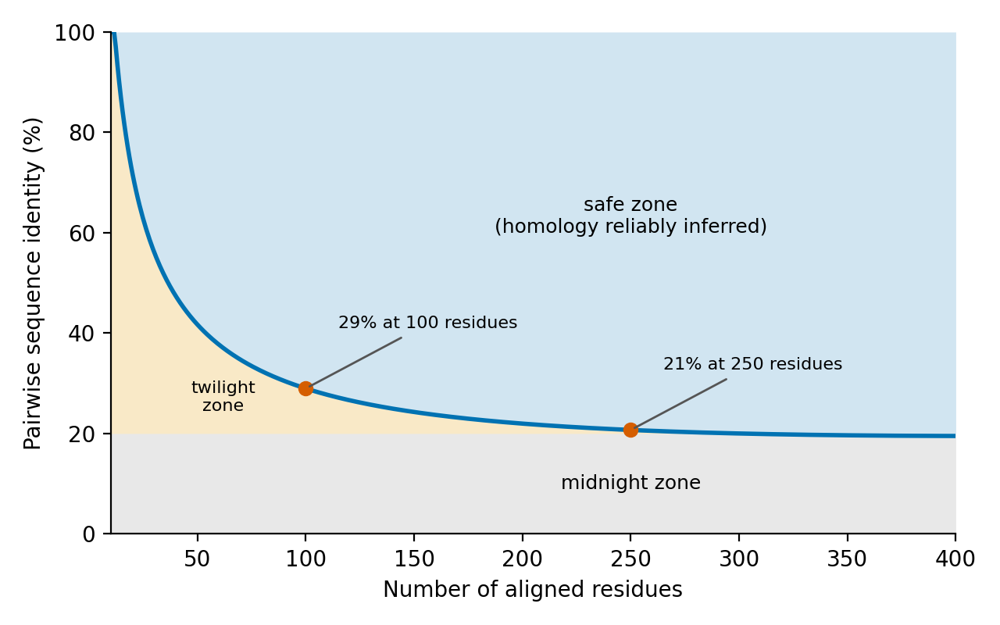
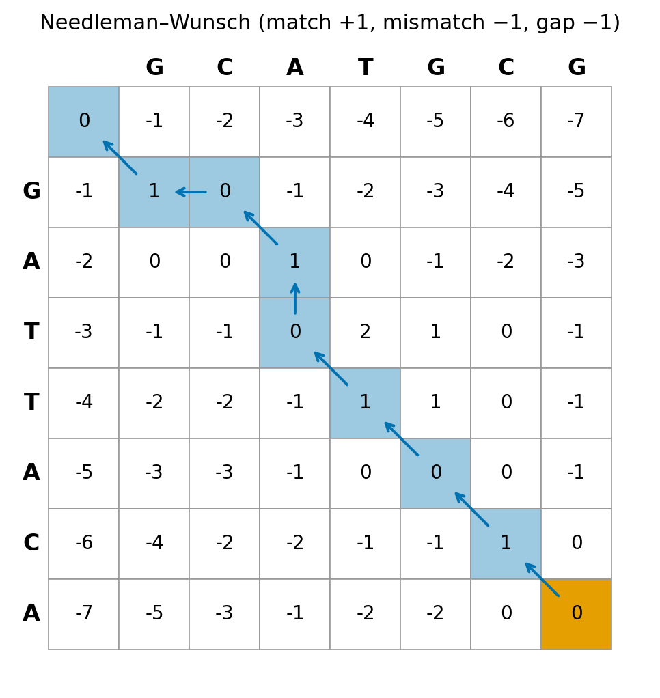
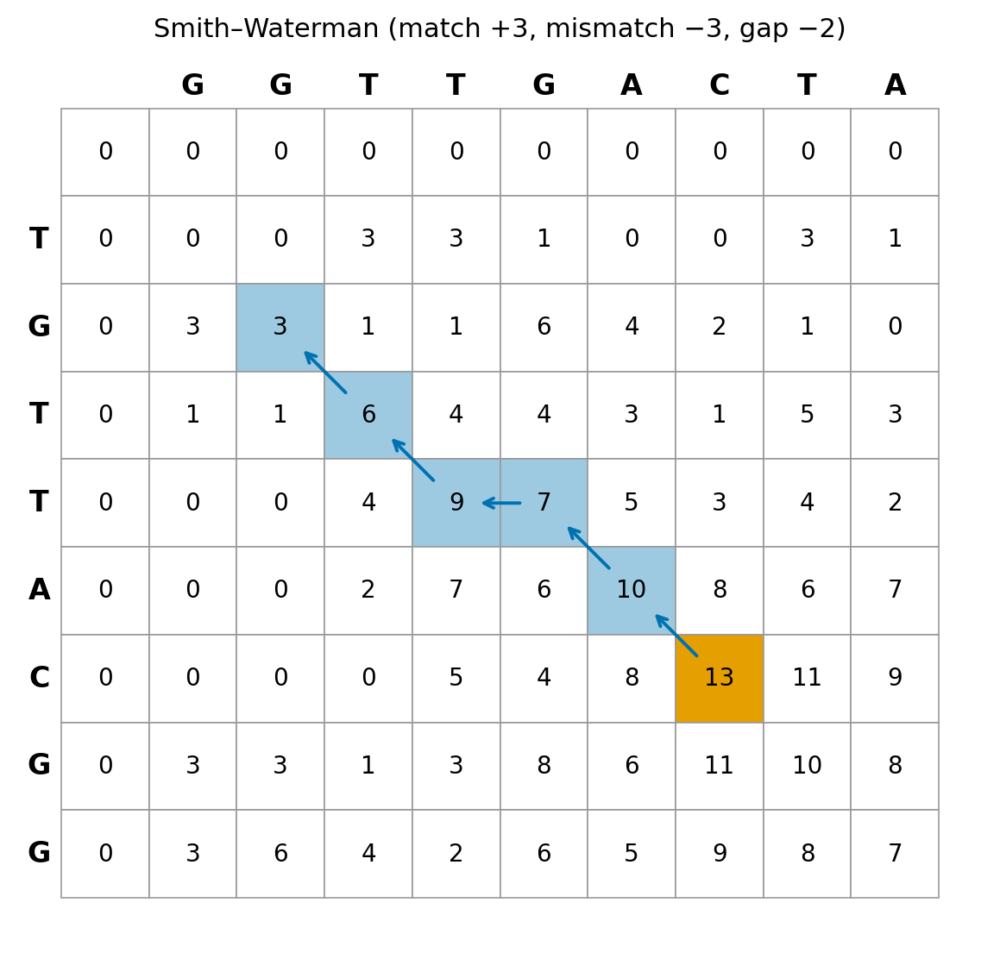
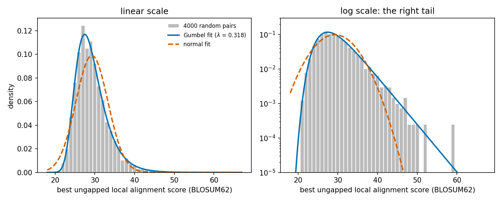
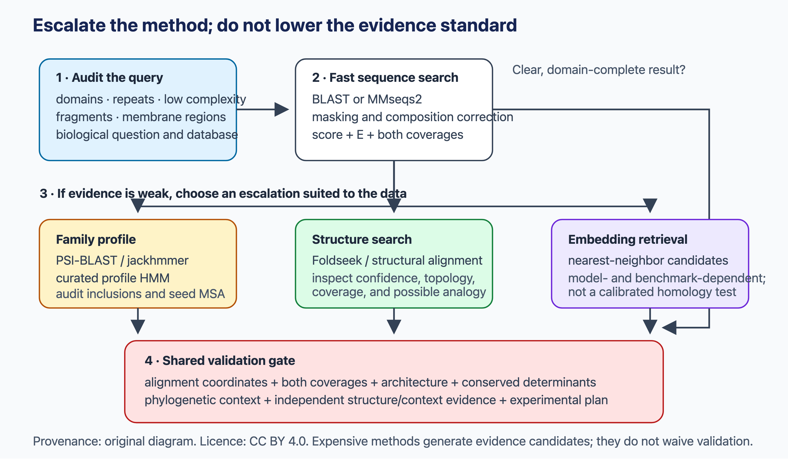
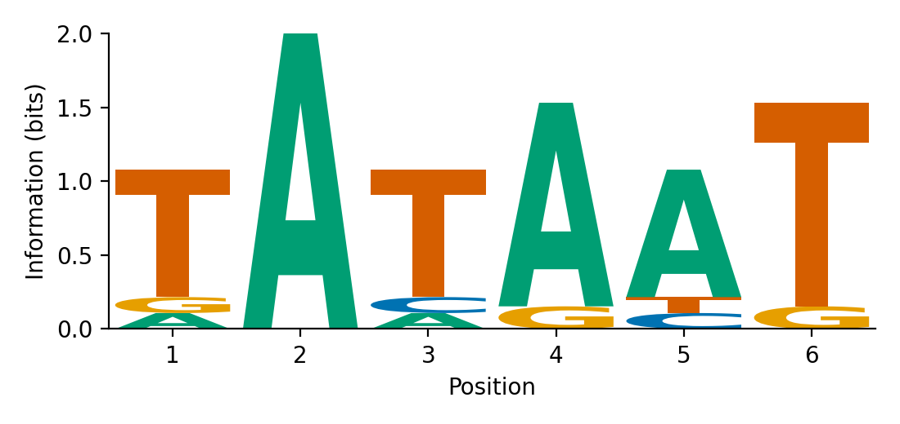
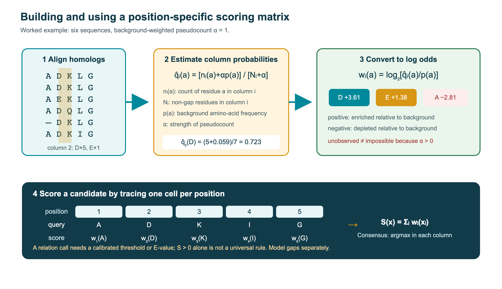
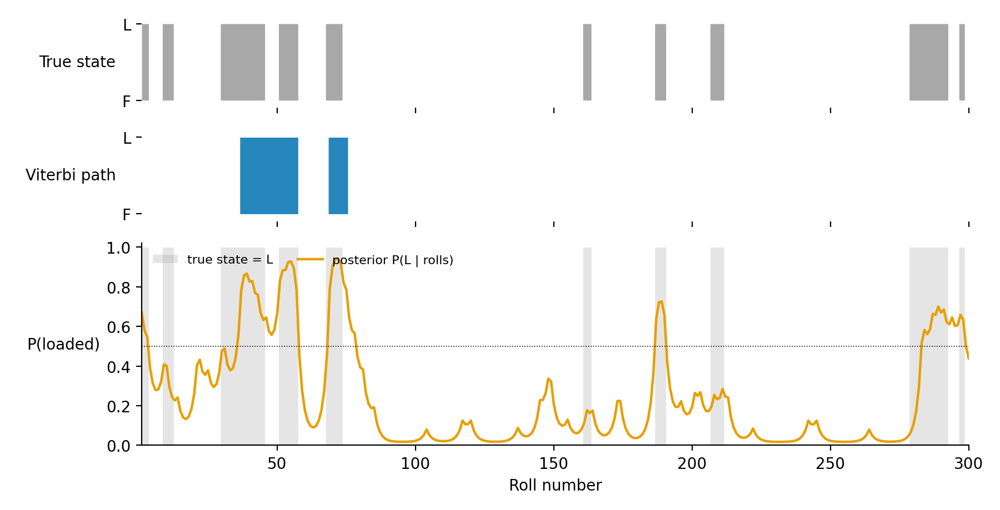
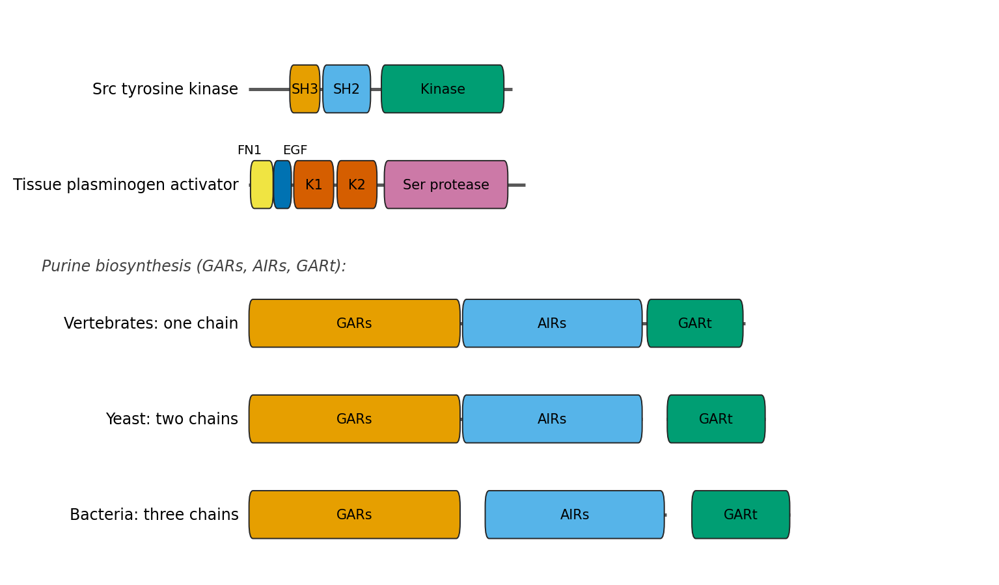
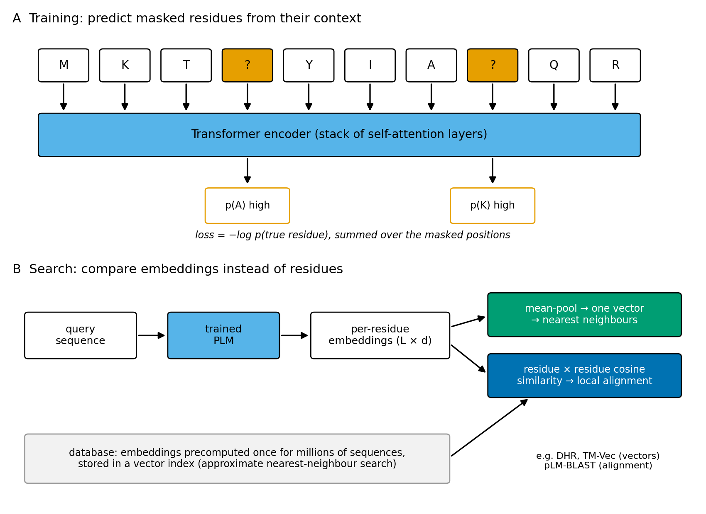

1 Sequence searching
Both historical and state-of-the-art methods are used for speed and accuracy. Understanding the advantages of different algorithms is essential.
1.1 Overview
Finding sequences that are similar to a query is one of the most frequently used operations in bioinformatics. It is the first step in annotating a new gene, building a family alignment, inferring a phylogeny or predicting a structure. This chapter follows the development of the field:
- what homology is, and how it relates to sequence similarity (1);
- exact alignment by dynamic programming and the substitution matrices that score it (Section 1.3);
- the heuristic and indexing methods that make database search fast, the statistics that tell us which hits to trust, and how a hit becomes an annotation (Section 1.4);
- comparing sequences without aligning them, by their \(k\)-mers (Section 1.5);
- multiple alignments, motifs, profiles and profile hidden Markov models, which capture whole families and find more distant relationships (Section 1.6);
- protein domains and the databases that classify them (Section 1.7);
- how the same ideas are extended to structured RNAs, where secondary structure is often conserved better than sequence (Section 1.8);
- aligning whole genomes, and the conservation scores computed from multiple genome alignments (Section 1.9);
- protein language models and how they are starting to be used to detect remote homology (Section 1.10);
- how search methods are benchmarked, and what can go wrong (Section 1.11).
1.2 Homology and sequence similarity
Almost everything in this chapter rests on one idea. If two genes or proteins descend from a common ancestor, what we know about one tells us something about the other. This relationship is homology, and sequence searching is a set of methods for inferring homology from sequence similarity. Before the algorithms, it is worth being precise about what is inferred, from what, and why the inference works.
1.2.1 Evolutionary background
All living organisms descend from a common ancestor, and their genomes have been shaped by the same small set of processes (Chapter 3 treats them in more depth):
- Mutation creates variation. The simplest mutations are point substitutions. In DNA they are classified as transitions (purine ↔︎ purine or pyrimidine ↔︎ pyrimidine), which are more frequent, and transversions (purine ↔︎ pyrimidine). Insertions and deletions (indels) add or remove nucleotides. Larger events duplicate, delete, invert or move whole segments, from a few nucleotides up to entire genomes.
- Recombination reshuffles existing variation. In proteins, unequal crossing-over and exon shuffling can join segments that encode separate domains, so that new proteins arise as new combinations of old parts (Section 1.7).
- Horizontal (lateral) gene transfer moves genes between organisms other than by descent. It is common in prokaryotes and rarer, but not absent, in eukaryotes.
- Natural selection and genetic drift determine the fate of each variant. Most mutations that change the structure or function of an important protein are harmful and are removed by purifying selection. Mutations with little effect are fixed or lost largely at random by drift, as the neutral theory proposed (Kimura 1968). Occasionally a mutation is beneficial and spreads by positive selection.
For sequence analysis, the key consequence is that sequences diverge gradually and unevenly. Positions that matter for structure or function (the hydrophobic core, catalytic residues, binding sites) change slowly. Surface loops and positions that tolerate many amino acids change quickly. When substitutions do occur at constrained positions, they tend to be conservative, replacing an amino acid by one with similar properties (isoleucine by leucine or valine, aspartate by glutamate). Substitution matrices capture these patterns on average (Section 1.3), and profiles capture them position by position (Section 1.6).
Because divergence is gradual, the similarity between two homologous sequences decays with the time since they shared an ancestor. Eventually so many substitutions have occurred, often several at the same site, that the remaining similarity cannot be distinguished from chance. This decay sets the limits of sequence searching.
1.2.2 Genes and proteins
Most genes analysed in this chapter are protein-coding. In eukaryotes their coding exons are interrupted by introns, and alternative splicing lets one gene produce several protein isoforms. In prokaryotes genes are mostly continuous and often organised in operons (Chapter 6). Gene structure matters for searching because a wrong exon boundary or a missed intron changes the protein that is compared.
The genetic code is degenerate: most of the 20 standard amino acids are encoded by several codons that usually differ in the third position. Many DNA substitutions are therefore synonymous and leave the protein unchanged. The amino-acid sequence determines how the chain folds into a three-dimensional structure, and the structure determines the function (Anfinsen 1973). Proteins are typically 100–1000 residues long, and many consist of several domains: compact units that fold, function and evolve semi-independently (Section 1.7).
Two properties of proteins matter particularly for sequence comparison. First, the 20-letter alphabet carries much more information per position than the four-letter nucleotide alphabet. Second, among homologous proteins the three-dimensional structure tends to be conserved much longer than the sequence (an empirical tendency, not a law). Both points return below.
1.2.3 Homology: a statement about ancestry
The word homology comes from the Greek homologos, “agreeing”. The anatomist Richard Owen introduced it into biology in 1843 for “the same organ in different animals under every variety of form and function”, and contrasted it with analogy, different structures that perform the same function. Owen’s definition was not evolutionary. Darwin (1859) explained homologous structures as inheritance from a common ancestor, and the term has been used in that sense ever since. The classical example is the vertebrate forelimb: the wing of a bat, the flipper of a whale and the human arm are built from the same bones (humerus, radius, ulna), inherited from an ancestral tetrapod limb.
The molecular definition is the same. Two genes, proteins or parts of them are homologous if they descend from a common ancestral sequence. Homology is therefore a statement about history, not about the sequences as we observe them today. It has three consequences that are often misunderstood:
- Homology is qualitative. Two sequences either share an ancestor or they do not. There is no such thing as “45% homology”. What can be measured is similarity, for example the percentage of identical residues in an alignment (percent identity) or of similar residues (percent similarity). Similarity is the observation; homology is the conclusion drawn from it.
- There is only one kind of homology. Expressions such as “structural homology” or “functional homology” mix up the evidence with the conclusion. Two proteins can be structurally similar because they are homologous, or because the same fold evolved twice. They can share a function for the same two reasons. Structural similarity, like sequence similarity, is evidence for homology, sometimes the strongest evidence available, but not a separate type of homology.
- Homology need not cover the whole sequence. Many proteins are mosaics of domains with different histories. Two proteins can be homologous over one domain and unrelated elsewhere (sometimes called partial homology). Statements about homology should therefore refer to aligned regions or domains, not automatically to whole proteins.
Reeck et al. (1987) made these points in “‘Homology’ in proteins and nucleic acids: a terminology muddle and a way out of it”. The paper was written by eleven molecular biologists and evolutionists, among them Doolittle, Fitch, Margoliash, Jukes and Zuckerkandl. It noted that a large fraction of papers used “homology” to mean similarity, and argued that the word should be reserved for common ancestry. The misuse persists nearly 40 years later, and you should expect to be asked about it.
Wrong: “Protein X is 38% homologous to protein Y.”
Right: “Protein X and protein Y share 38% sequence identity over 240 aligned residues (E-value \(10^{-35}\)). The similarity is far higher than expected by chance, so we conclude that they are homologous.”
1.2.4 Orthologues, paralogues and xenologues
Homologous genes are classified by the type of event at the node where their histories split. Walter Fitch introduced the terms (Fitch 1970), and they were later refined (Fitch 2000; Koonin 2005):
- Orthologues are homologues that diverged through a speciation event. When an ancestral species splits into two, the copies of a gene in the two daughter species are orthologues. Human and mouse β-globin (HBB and Hbb-b1) are orthologues. So are the cytochrome c genes of humans and yeast.
- Paralogues are homologues that diverged through a gene duplication. Human α-globin and β-globin are paralogues, produced by a duplication roughly 450 million years ago in an early vertebrate (citation needed). Myoglobin is an even older paralogue of both. Paralogues are present in the same genome, but because the duplication can precede later speciations, a gene in one species can also be paralogous to a gene in another (human α-globin and mouse β-globin, for example).
- Xenologues are homologues whose history includes a horizontal gene transfer. Antibiotic-resistance genes carried on plasmids, which have spread between distantly related bacteria, are typical examples.
Paralogy is further divided relative to a particular speciation event (Remm et al. 2001):
- In-paralogues (symparalogues) arose by duplication after the speciation, so they are all co-orthologous to the corresponding gene or genes in the other species.
- Out-paralogues (alloparalogues) arose by duplication before it.
For example, if a gene duplicated in the primate lineage after the split from rodents, the two human copies are in-paralogues relative to the human–mouse comparison, and both are orthologous to the single mouse gene. Paralogues produced by a whole-genome duplication are called ohnologues, after Susumu Ohno, who proposed that genome duplication early in vertebrate evolution supplied the raw material for vertebrate complexity (Ohno et al. 1968). (The specific hypothesis of two rounds, “2R”, was formulated later.)
The distinction matters because of how function evolves. After a speciation, orthologues usually continue to perform the same role in their respective species. After a duplication, the selective constraints on one or both copies may be relaxed. A copy is often lost, but it may also acquire a new function (neofunctionalisation), or the two copies may divide the ancestral functions between them (subfunctionalisation) (Lynch and Conery 2000). The resulting rule of thumb, that orthologues are more likely than paralogues to share function (the ortholog conjecture), underlies the transfer of functional annotation between species (Chapter 10). It is a useful generalisation, not a law, and it has been contested by large-scale tests (Nehrt et al. 2011; Gabaldón and Koonin 2013). A classic counterexample among paralogues is angiogenin, which belongs to the pancreatic ribonuclease family but has a different biological function.
Orthology and paralogy are properties of a gene tree reconciled with a species tree. In principle they are determined by phylogenetic analysis (Chapter 4). In practice they are often inferred at genome scale with faster methods based on pairwise similarity, such as reciprocal best hits, COGs, InParanoid and OrthoFinder (Tatusov et al. 1997; Remm et al. 2001; Emms and Kelly 2019; Altenhoff et al. 2019), discussed in Chapter 3. Similarity alone cannot tell orthologues from paralogues. The most similar sequence in another genome is often, but not always, the orthologue; it is not when, for example, the true orthologue has been lost.
1.2.5 Analogy and convergent evolution
Similar features can also evolve independently. Such features are analogous, and the process is convergent evolution (homoplasy in cladistics). Insect and bird wings are analogous: both support powered flight but evolved separately. The same feature can be homologous at one level and analogous at another. Bird and bat wings are analogous as wings, since their common ancestor did not fly, but homologous as forelimbs.
At the molecular level, convergence is most convincing for functional features, especially active sites, because chemistry constrains the possible solutions. The textbook example is the serine proteases. Chymotrypsin (with trypsin, elastase and thrombin) and the bacterial protease subtilisin use the same Ser–His–Asp catalytic triad, arranged almost identically in space. Yet the two families have different folds: chymotrypsin is built from two β-barrels, and subtilisin is an α/β protein. The order of the triad residues along the chain also differs: His–Asp–Ser in chymotrypsin and Asp–His–Ser in subtilisin. The similarity is analogous. Catalytic triads have evolved independently in more than 20 enzyme superfamilies (citation needed). Carbonic anhydrase is another example: at least three structurally unrelated classes (α, β, γ) catalyse the same reaction.
Convergence of a full sequence, by contrast, is extremely unlikely. There are \(20^{100}\) possible sequences of 100 residues, and two unrelated proteins with a similar function have no reason to arrive at similar sequences. Convergence of simple folds (helical bundles, β-hairpins, perhaps some common α/β architectures) is more plausible. This is one reason why structural similarity is somewhat weaker evidence for homology than significant sequence similarity. Deciding whether two proteins with similar folds but no detectable sequence similarity are distant homologues or analogues is one of the hard problems in protein classification (Section 1.7). The argument then rests on shared unusual features: rare structural details, conserved functional residues in equivalent positions, or the same secondary-structure elements in an unusual order.
1.2.6 From similarity to homology
How, then, do we conclude that two sequences are homologous? The argument is statistical. Any alignment of two sequences contains some identical or similar residues by chance. The question is whether the similarity is greater than expected for unrelated sequences of the same length and composition. If it is substantially greater, the most parsimonious explanation is common ancestry, because convergence of whole sequences is so unlikely. Doolittle made this argument explicit in “Similar amino acid sequences: chance or common ancestry?” (Doolittle 1981). Search programs implement it by reporting, for each alignment, how many alignments with at least that score would be expected by chance in the search (the E-value; Section 1.4).
Doolittle’s group also gave an early demonstration of what the approach can reveal. In 1983 they compared the newly determined sequence of platelet-derived growth factor with their small database of known sequences, and found that it was almost identical to the product of v-sis, an oncogene of simian sarcoma virus. A growth factor and a cancer-causing gene turned out to be the same protein, a discovery made entirely by sequence comparison (Doolittle et al. 1983; Doolittle 2010).
The inference is asymmetric:
- Significant similarity implies homology. If the alignment score is far above what is expected by chance, the sequences are homologous, with a few well-known exceptions discussed below.
- Lack of significant similarity does not imply non-homology. Homologous sequences can diverge until their similarity is indistinguishable from noise. Many protein families that are clearly related by structure and function share no detectable sequence similarity.
The sensitivity of a search method, its ability to detect distant homologues, is therefore a central measure of its quality. Much of the progress described in this chapter, from pairwise alignment through profiles and HMMs to structure- and language-model-based search, has pushed the detection limit further into the region where similarity is faint.
The twilight zone
How much identity is needed? Because unrelated sequences can be aligned with gaps, two random protein sequences typically show 15–20% identity over an optimal alignment (citation needed), and short alignments can show much more. Any fixed threshold must therefore depend on the alignment length. Doolittle coined the term twilight zone for the range of pairwise identity in which identity alone can neither confirm nor rule out homology. The often-quoted range of roughly 20–30% applies only to alignments of typical domain length (about 100 residues or more); for short alignments the zone lies at much higher identity. The term is also used more loosely for the general difficulty of detecting distant homologues. Rost (1999) quantified the zone on more than a million alignments of protein pairs of known structure. Above a length-dependent curve, most pairs (about 90%) had similar structures, while below it false positives rose sharply. For alignments of about 100 residues the threshold is near 30% identity, and for 250 residues or more it approaches 20% (Figure 1.1). Below about 20% lies what Rost called the midnight zone (Rost 1997). Many pairs there are still homologous, as their structures show, but percent identity carries essentially no information.

Percent identity is nevertheless a poor statistic for detecting homology. It ignores the type of substitution, depends on how gaps are counted, and has no direct probabilistic interpretation. Scores computed with substitution matrices and gap penalties, and converted to E-values, are much better, and every method in this chapter uses them. Percent identity remains useful for a different purpose: describing how close two known homologues are, for example when choosing a template for homology modelling (Chapter 9) or deciding whether annotation can be transferred.
Why compare proteins rather than DNA?
For a protein-coding gene, it is almost always better to compare the translated protein sequences than the DNA, for four reasons:
- Alphabet size. With 20 amino acids at typical frequencies, two random residues are identical with a probability of about 6%; with four nucleotides, about 25%. Each aligned protein position carries more information, so fewer positions are needed to reach significance.
- Synonymous substitutions. Many nucleotide changes, especially at third codon positions, do not alter the protein. They accumulate quickly and erase DNA similarity even where the protein is conserved.
- Substitution matrices. Amino acids differ in physicochemical properties, and the frequency with which one replaces another can be estimated from real alignments (Section 1.3). Conservative replacements can then count as positive evidence. For DNA there is much less to exploit.
- Composition and repeats. Genomic DNA is full of repeats and low-complexity regions that produce spurious matches.
DNA–DNA comparisons rarely detect homology between sequences that diverged more than a few hundred million years ago. Protein–protein comparisons routinely detect homologues that diverged more than two billion years ago, for example between bacteria and humans (Pearson 2013). DNA comparison is the right choice for non-coding sequences (RNA genes, regulatory regions), for very closely related sequences (resequencing, read mapping; Chapter 5), and when the reading frame is unknown. Programs such as BLASTX and TBLASTN bridge the gap by translating nucleotide sequences in all six reading frames (Section 1.4).
Structure is more conserved than sequence
The three-dimensional structure of a protein changes much more slowly than its sequence. Homologous proteins with about 20% sequence identity often still share the same general fold, although the common core may then cover less than half of each molecule, and its deviation grows as the sequences diverge (Chothia and Lesk 1986). Structural comparison can therefore detect homology far beyond the limits of sequence comparison. For the same reason, the structural classifications SCOP, CATH and ECOD group domains into superfamilies using structural and functional evidence that sequence alone cannot provide (Murzin et al. 1995; Sillitoe et al. 2020; Cheng et al. 2014). With accurate predicted structures now available for almost every known protein (Jumper et al. 2021; Varadi et al. 2021), structure-based search has become a practical complement to sequence search (Section 1.4, Chapter 9). A shared fold is nonetheless strong but not conclusive evidence of common ancestry, because simple folds can converge.
Pitfalls: similarity that is not homology
The rule “significant similarity implies homology” fails in a few well-characterised situations. In each, the sequences violate the assumption behind the statistics, that residues are drawn roughly at random from standard background frequencies:
- Low-complexity regions, such as stretches rich in a few amino acids (poly-Q, proline-rich or serine-rich segments) or short tandem repeats. These can give high scores between unrelated proteins. Search programs therefore mask them, for example with the SEG filter (Wootton and Federhen 1993), or adjust the scores for composition (Schäffer et al. 2001).
- Biased composition and repetitive structural motifs, such as coiled coils (heptad repeats), transmembrane helices, collagen-like repeats or signal peptides. These can produce significant-looking alignments between proteins that share only physical constraints.
- Multidomain proteins. A significant hit establishes homology only for the aligned region. Annotating a whole protein from a hit to one of its domains is a frequent source of error, and so is assuming transitivity: if A is homologous to B over one domain and B to C over another, A and C need not be related at all. The coverage of both the query and the hit must therefore be checked as well as the significance (Section 1.4.8).
A further source of confusion is what an E-value refers to: one query, searched against a database of a given size with a given scoring scheme. It already corrects for the size of the database, but not for the number of queries in an experiment (Section 1.4.3.5).
1.2.7 Homology and the rest of this chapter
The rest of the chapter follows from these ideas. To measure similarity we need alignments and a scoring scheme grounded in how proteins evolve (Section 1.3). To infer homology from the scores we need their distribution for unrelated sequences, and to search databases of hundreds of millions of sequences we need fast heuristics (Section 1.4). To push detection into the twilight zone we pool information from many homologues into profiles and hidden Markov models (Section 1.6). Because homology is often a property of domains rather than of whole proteins, we need domain databases (Section 1.7). The newest approach uses protein language models. Their embeddings recover many family and structural relationships empirically, but they are not themselves a test of common ancestry (Section 1.10).
See also: further explanation in Section D.1.1; related Wikipedia articles in Section E.1.1.
Parts of this section are adapted from the Wikipedia articles Homology (biology), Sequence homology, Gene, Protein and Convergent evolution (CC BY-SA 4.0, retrieved 2 October 2026).
1.3 Dynamic programming and sequence alignment
Inferring homology from similarity (1) first needs a way to measure similarity, and that means an alignment. An alignment arranges two sequences in rows so that corresponding residues stand in the same column. Gaps (written -) are inserted where one sequence has gained or lost residues relative to the other. For homologous sequences, each column is meant to group residues that derive from the same ancestral position, so the alignment is a hypothesis about the substitutions, insertions and deletions since the common ancestor. The algorithms will align any two sequences, related or not; whether the alignment means anything biologically is a separate, statistical question. To choose between the astronomically many possible alignments we need two things:
- a scoring scheme, which gives biologically plausible alignments a higher score than implausible ones; and
- an algorithm that finds the alignment with the best score without enumerating them all.
The algorithm is dynamic programming, which finds the optimal alignment exactly, in time proportional to the product of the sequence lengths. The scoring scheme consists of a substitution matrix, which scores each pair of aligned residues, and a gap penalty, which scores insertions and deletions. Everything in this section is exact: given the scores, the result is guaranteed to be optimal. The heuristics that trade some of this guarantee for speed follow in Section 1.4.
1.3.1 A short history
The mathematical idea of dynamic programming was developed by Richard Bellman at the RAND Corporation in the early 1950s, for multistage decision problems in operations research (Bellman 1954). Bellman later explained that he chose the name partly because “programming” (in the sense of planning) and “dynamic” sounded impressive and were hard to object to politically. The same principle was then discovered independently in many fields that compare sequences:
- 1965–1966: Vladimir Levenshtein defined the edit distance between two strings, the minimum number of insertions, deletions and substitutions needed to turn one into the other (Levenshtein 1966).
- 1968: Taras Vintsyuk used dynamic programming to align speech signals (the forerunner of dynamic time warping).
- 1970: Saul Needleman and Christian Wunsch published “A general method applicable to the search for similarities in the amino acid sequence of two proteins” (Needleman and Wunsch 1970), the first application of dynamic programming to biological sequences and the origin of global alignment. Their formulation maximised the number of matches, with an optional fixed penalty for each gap, and as published it required time proportional to the cube of the sequence length.
- 1972–1976: David Sankoff, Peter Sellers, Michael Waterman, Temple Smith and William Beyer put the method on a rigorous footing (Sankoff 1972). Sellers showed how to compute an evolutionary distance between sequences (Sellers 1974), and Waterman, Smith and Beyer (1976) introduced general gap penalties (Waterman et al. 1976). The same algorithm for edit distance was published in computer science by Wagner and Fischer (1974) (Wagner and Fischer 1974).
- 1975: Dan Hirschberg showed how to compute the longest common subsequence in linear space (Hirschberg 1975), a trick later adapted to alignment.
- 1978: Margaret Dayhoff published the PAM substitution matrices (Dayhoff et al. 1978), the first scoring scheme derived from observed evolution.
- 1981: Temple Smith and Michael Waterman published the local alignment algorithm (Smith and Waterman 1981), in a paper of three pages. Local alignment finds the best-matching segments of two sequences and is the basis of all database searching.
- 1982: Osamu Gotoh showed that alignment with affine gap penalties (a cost for opening a gap plus a smaller cost for extending it) can be done in quadratic time (Gotoh 1982).
- 1988: Eugene Myers and Webb Miller combined Gotoh’s algorithm with Hirschberg’s linear-space idea (Myers and Miller 1988).
- 1990–1992: Samuel Karlin and Stephen Altschul derived the statistics of local alignment scores (Karlin and Altschul 1990), which also explained what substitution matrices mean. Steven and Jorja Henikoff published the BLOSUM matrices (Henikoff and Henikoff 1992), still the default for protein searches.
Since then the algorithms have changed little. The main developments have been in speed (vectorised and GPU implementations of Smith–Waterman, and above all the heuristics of Section 1.4) and in scoring, where position-specific profiles (Section 1.6) replace a single substitution matrix.
1.3.2 What is dynamic programming?
Dynamic programming solves a problem by breaking it into smaller, overlapping subproblems, solving each subproblem once, storing its solution in a table and building the solution of larger problems from the stored solutions. It applies when a problem has two properties:
- Optimal substructure (Bellman’s principle of optimality): an optimal solution to the whole problem contains optimal solutions to its subproblems.
- Overlapping subproblems: the same subproblems recur many times, so storing their solutions rather than recomputing them saves time.
Sequence alignment has both properties. Consider an optimal alignment of the sequences \(A = a_1 a_2 \ldots a_n\) and \(B = b_1 b_2 \ldots b_m\). Its last column can only be one of three things: \(a_n\) aligned to \(b_m\), \(a_n\) aligned to a gap, or \(b_m\) aligned to a gap. Whichever it is, the rest of the alignment must itself be an optimal alignment of the remaining prefixes; otherwise we could replace it by a better one and improve the whole. The best score for the prefixes \(a_1 \ldots a_i\) and \(b_1 \ldots b_j\) can therefore be computed from the best scores of three smaller pairs of prefixes, and the problem is solved by filling in a table of \((n+1) \times (m+1)\) prefix scores.
Why is this necessary? The number of possible alignments grows exponentially. Two sequences of length \(n\) can be aligned in \[\binom{2n}{n} \approx \frac{2^{2n}}{\sqrt{\pi n}}\] ways (counting alignments that differ only in the order of adjacent gaps in the two sequences as the same) (Durbin et al. 1998). For two proteins of 300 residues this is about \(10^{179}\) alignments, far more than could ever be enumerated. Dynamic programming finds the best one in about \(9 \times 10^4\) steps.
A useful picture is the alignment graph (or edit graph): a grid with one sequence along the top and the other down the side. Every alignment is a path from the top-left to the bottom-right corner. A diagonal step aligns two residues, a horizontal step aligns a residue of the top sequence to a gap, and a vertical step aligns a residue of the side sequence to a gap. Finding the best alignment is the same as finding the highest-scoring path through this grid. This is a longest-path problem in a directed acyclic graph, the general form of almost every dynamic programming algorithm in bioinformatics, including the Viterbi algorithm for hidden Markov models (Section 1.6.4).
1.3.3 Global alignment: the Needleman–Wunsch algorithm
Global alignment aligns two sequences over their entire length. It is appropriate when the sequences are expected to be homologous along their whole length, for example two orthologous proteins of similar length with the same domain structure.
Let \(s(a, b)\) be the score for aligning residue \(a\) with residue \(b\) (taken from a substitution matrix), and let each gap position cost \(d\) (a linear gap penalty; affine gaps are treated below). Define \(F(i, j)\) as the score of the best alignment of the prefixes \(a_1 \ldots a_i\) and \(b_1 \ldots b_j\). Then
\[ F(i,j) = \max \begin{cases} F(i-1, j-1) + s(a_i, b_j) & \text{align } a_i \text{ with } b_j\\[2pt] F(i-1, j) - d & a_i \text{ aligned to a gap}\\[2pt] F(i, j-1) - d & b_j \text{ aligned to a gap} \end{cases} \]
with the boundary conditions \(F(0,0) = 0\), \(F(i,0) = -i\,d\) and \(F(0,j) = -j\,d\) (a prefix aligned entirely to gaps). The table is filled row by row, so that the three cells needed for each new cell are always available. The optimal global score is \(F(n, m)\).
NEEDLEMAN-WUNSCH(A[1..n], B[1..m], s, d)
F[0,0] ← 0
for i ← 1 to n: F[i,0] ← −i·d
for j ← 1 to m: F[0,j] ← −j·d
for i ← 1 to n:
for j ← 1 to m:
F[i,j] ← max( F[i−1,j−1] + s(A[i],B[j]), # diagonal
F[i−1,j] − d, # up: gap in B
F[i,j−1] − d ) # left: gap in A
return F[n,m]Traceback. The table gives the optimal score; the alignment itself is recovered by tracing back from \(F(n, m)\) to \(F(0, 0)\). At each cell we ask which of the three cases produced the value (either by storing a pointer while filling the table or by recomputing the three candidates), and step to that cell. A diagonal step emits the column \(\binom{a_i}{b_j}\), a vertical step emits \(\binom{a_i}{-}\) and a horizontal step \(\binom{-}{b_j}\); the alignment is read off in reverse. When two or three cases give the same maximum, there are several co-optimal alignments with the same score. This is common, and it is a reminder that the optimal alignment is not necessarily the correct (biologically true) one.
Align GCATGCG and GATTACA with match \(+1\), mismatch \(-1\) and gap \(-1\). Each cell holds \(F(i,j)\); the blue cells and arrows show one traceback from the bottom-right corner (orange).

Needleman–Wunsch (global; match +1, mismatch −1, gap −1). Optimal score 0; there are 3 co-optimal alignments, one of which is:
GCA-TGCG
| | | |
G-ATTACACheck one cell: the cell for G (side) against G (top) is \(\max(0 + 1,\; -1 - 1,\; -1 - 1) = 1\), coming from the diagonal.
1.3.4 Local alignment: the Smith–Waterman algorithm
Most real problems are local. Proteins are built from domains that can be shared between otherwise unrelated proteins (Section 1.7), a query may be a fragment, and distantly related sequences may be similar only in their conserved core. A global alignment would force the dissimilar parts to be aligned too, and their noise could swamp the signal of the similar part. Local alignment instead finds the pair of segments (one from each sequence) with the highest alignment score.
Smith and Waterman showed that only two changes to the global algorithm are needed (Smith and Waterman 1981):
A fourth option of zero. If the best alignment ending at \((i, j)\) has a negative score, it is better to start a new alignment there:
\[ H(i,j) = \max \begin{cases} 0 & \text{start a new local alignment}\\ H(i-1, j-1) + s(a_i, b_j)\\ H(i-1, j) - d\\ H(i, j-1) - d \end{cases} \]
with \(H(i, 0) = H(0, j) = 0\).
A different traceback. The best local alignment can end anywhere, so the traceback starts from the highest value anywhere in the matrix and stops when it reaches a cell with value zero.
Because the matrix never goes below zero, a region of poor similarity resets the score, and the algorithm finds the best-scoring diagonal stretch, gaps included. Further non-overlapping local alignments can be found by declumping the matrix and repeating the traceback (Waterman and Eggert 1987). This is how programs report several alignments between the same pair of sequences.
A condition on the scoring scheme. Local alignment only makes sense if the expected score of aligning two random residues is negative, \[\sum_{a,b} p_a\, p_b\, s(a,b) < 0,\] where \(p_a\) are the background frequencies of the residues, and at least one score is positive. If the expected score were positive, any long random alignment would accumulate a positive score, and the “local” alignment would extend over the full length of both sequences: the algorithm would behave like global alignment. All standard substitution matrices satisfy this condition, for a reason explained in Section 1.3.9.
Align TGTTACGG and GGTTGACTA with match \(+3\), mismatch \(-3\) and a linear gap penalty of \(2\) per position. Negative values never appear; the traceback starts at the maximum (13, orange) and stops at the first zero.

Smith–Waterman (local; match +3, mismatch −3, gap −2). Highest cell 13; the traceback stops at the first zero and gives the local alignment:
GTT-AC
||| ||
GTTGACThe alignment score is \(5 \times 3 - 2 = 13\): five matches and one gap position.
1.3.5 Other alignment modes
Between fully global and fully local there are useful intermediate forms. All are obtained by changing the boundary conditions and the cells where the traceback starts and stops:
- Semi-global (“glocal” or end-gap-free) alignment aligns all of one sequence to part of another, for example a short read to a genome, or a domain to a full-length protein. Leading and trailing gaps in the longer sequence are not penalised: the first row is initialised to zero, and the traceback starts from the best cell in the last row.
- Overlap alignment allows free end gaps in both sequences, so that the end of one sequence is aligned to the start of the other. It is used to detect overlaps between reads in genome assembly (Chapter 5).
- Banded alignment restricts the computation to a band of width \(k\) around a diagonal. This reduces the cost to \(O(k\,n)\) and is exact if the optimal path stays within the band, as when two sequences are known to be very similar. Banded dynamic programming is used to refine the hits of heuristic methods (Section 1.4).
1.3.6 Edit distance: maximising similarity or minimising distance
Alignment can be framed in two equivalent ways. Similarity scores are maximised: matches score positively and mismatches and gaps negatively, as above. Distances are minimised: each operation has a non-negative cost. The simplest distance is the Levenshtein or edit distance, the minimum number of single-character substitutions, insertions and deletions needed to transform one string into the other. It is computed by the same recursion with \(\min\) instead of \(\max\), a cost of 1 for each mismatch or gap and 0 for a match. For global alignment with suitable parameters, the two formulations give the same optimal alignments. Local alignment, however, has no natural distance formulation, because a distance can always be made smaller by aligning shorter segments. This is one reason why bioinformatics works with similarity scores.
1.3.7 Gap penalties
Insertions and deletions (indels) arise from replication slippage, unequal crossing-over, transposition and other events, and one event often inserts or deletes several residues at once. A good gap penalty should therefore make one gap of length 3 cheaper than three separate gaps of length 1. Several forms are used; let \(w(k)\) be the penalty for a gap of length \(k\):
| Gap penalty | \(w(k)\) | Comment |
|---|---|---|
| Linear | \(k\,d\) | Simplest; every gap position costs the same, so long gaps are over-penalised and gaps tend to be scattered. |
| Constant | \(g\) | Gap length does not matter; sometimes used for genomic DNA. |
| Affine | \(g_o + (k-1)\,g_e\) with \(g_o > g_e\) | A cost for opening a gap plus a smaller cost for each extension. The standard choice. |
| Convex (e.g. logarithmic) | \(g_o + g_e \log k\) | Each additional gap position costs less than the previous one; fits observed indel length distributions better, but is more expensive to compute. |
| General | any function | Needs \(O(n^2 m)\) time, as in the original Smith–Waterman paper. |
Some programs, such as BLAST, define the affine penalty as \(g_o + k\,g_e\), counting the extension cost for every position including the first, so parameters are not directly comparable between programs. Typical affine parameters for proteins are an opening penalty of about 10–12 and an extension penalty of 0.5–2 in units of the substitution matrix; BLAST with BLOSUM62 uses 11 and 1 by default.
The choice changes the alignment. With a linear gap penalty, the alignment of TACGGGCCCGCTAC and TAGCCCTATCGGTCA contains several isolated gap positions. With an affine penalty, the same sequences align with a few longer gaps, that is, with fewer and biologically more plausible indel events.
Affine gaps in quadratic time: Gotoh’s algorithm
With a general gap function, each cell must consider gaps of every possible length ending there, which gives \(O(n^2 m)\) time. Gotoh showed that for affine penalties it is enough to keep three matrices, one for each possible state of the last column (Gotoh 1982):
- \(M(i,j)\): best score of an alignment of the prefixes that ends with \(a_i\) aligned to \(b_j\);
- \(I_x(i,j)\): best score of an alignment that ends with \(a_i\) aligned to a gap (a gap in \(B\));
- \(I_y(i,j)\): best score of an alignment that ends with \(b_j\) aligned to a gap (a gap in \(A\)).
With an affine penalty \(w(k) = g_o + (k-1) g_e\) the recursions are
\[ \begin{aligned} M(i,j) &= s(a_i, b_j) + \max\{M(i-1,j-1),\; I_x(i-1,j-1),\; I_y(i-1,j-1)\}\\ I_x(i,j) &= \max\{M(i-1,j) - g_o,\;\; I_x(i-1,j) - g_e\}\\ I_y(i,j) &= \max\{M(i,j-1) - g_o,\;\; I_y(i,j-1) - g_e\} \end{aligned} \]
and the score of the best alignment is the maximum of the three matrices in the final cell. (This version does not allow a gap in \(A\) to be directly followed by a gap in \(B\), which is never optimal when \(s\) is not too negative.) Opening a gap means leaving the match state; extending it means staying in the gap state. Each cell is still computed in constant time, so the cost remains \(O(nm)\). The local version adds the zero option to \(M\). Gotoh’s original traceback procedure contained an error that could miss the optimal alignment; Altschul and Erickson (1986) pointed it out and corrected it (Altschul and Erickson 1986).
The three matrices can be seen as the three states (match, insertion, deletion) of a small finite-state machine, with transitions whose costs are the gap-opening and gap-extension penalties. This is the structure of a pair hidden Markov model, in which the scores become log-probabilities (Durbin et al. 1998). Profile HMMs (Section 1.6.4) extend the same idea to whole families of sequences.
1.3.8 Time and space complexity
Filling one cell takes constant time, so all variants above need \(O(nm)\) time. Storing the full matrix for the traceback needs \(O(nm)\) space. For two proteins this is trivial, but for two sequences of 100 000 residues it already amounts to \(10^{10}\) cells.
Linear space. The score alone needs only the previous row, so it can be computed in \(O(\min(n, m))\) space. To recover the alignment in linear space, Hirschberg’s divide-and-conquer method is used:
- Compute the scores of the forward alignments of the top half of \(A\) against all prefixes of \(B\), and the scores of the reverse alignments of the bottom half of \(A\) against all suffixes of \(B\), keeping only the last row of each.
- The optimal path must cross the middle row of \(A\) at the column \(j\) where the sum of the forward and reverse scores is maximal. This splits the problem into two independent subproblems, top-left and bottom-right of that point.
- Recurse on each half.
The total work is about twice that of the ordinary algorithm, still \(O(nm)\), while the space is \(O(n + m)\). Myers and Miller extended this to affine gap penalties (Myers and Miller 1988), and it is the basis of space-efficient alignment tools.
Faster than quadratic? The “Four Russians” technique reduces the time to \(O(nm / \log n)\) for small alphabets (Masek and Paterson 1980), but has little practical importance. More fundamentally, edit distance cannot be computed in strongly subquadratic time in the worst case unless a widely believed conjecture in complexity theory (the strong exponential time hypothesis) is false (Backurs and Indyk 2015). In practice, Smith–Waterman is accelerated by computing many cells at once. SIMD (single instruction, multiple data) instructions on ordinary processors (Farrar 2006), used for example in the SSEARCH program of the FASTA package and the SWIPE and Parasail libraries, and GPUs reach billions of cell updates per second.
Even so, exact local alignment of every query against a large database is expensive. UniProt contains roughly \(10^{11}\) residues, so comparing one 300-residue protein against all of it requires about \(3 \times 10^{13}\) cell updates: minutes to hours for a single query. Comparing all proteins of a new genome, or the millions of proteins of a metagenome, against the database would take years. This is the motivation for the heuristic methods of Section 1.4. Before them, however, comes the other half of the problem: where the scores come from.
1.3.9 Substitution matrices
The algorithm guarantees the optimal alignment for a given scoring scheme; whether that alignment is biologically meaningful depends entirely on the scores. For DNA, simple schemes are often adequate. For proteins, the 20 amino acids differ greatly in size, charge, polarity and other properties, and some substitutions (for example isoleucine to valine) are accepted by evolution far more often than others (for example tryptophan to glycine). A substitution matrix is a \(20 \times 20\) table of scores \(s(a, b)\) that captures these differences.
Scores as log-odds ratios
Substitution scores are best understood as log-odds scores comparing two hypotheses about an aligned pair of residues \(a\) and \(b\):
- the match (homology) model, in which \(a\) and \(b\) are derived from a common ancestral residue and occur together with target frequency \(q_{ab}\), estimated from alignments of true homologues; and
- the random model, in which \(a\) and \(b\) are unrelated and occur together with probability \(p_a p_b\), the product of their background frequencies.
The score is the logarithm of the ratio of these probabilities,
\[ s(a,b) = \frac{1}{\lambda} \log \frac{q_{ab}}{p_a\, p_b}, \]
where \(\lambda\) is a scale factor chosen so that the scores can be rounded to convenient integers. Matrices are usually given in bits (logarithm base 2) or fractions of bits. BLOSUM62, for example, is in half-bit units, so a score of \(+2\) means the pair is \(2^{2/2} = 2\) times more likely under the homology model than by chance. A positive score means the pair occurs more often in true alignments than expected by chance, a negative score that it occurs less often, and zero that there is no information.
Because scores are logarithms of probability ratios, and positions in an ungapped alignment are treated as independent, the total score of an ungapped alignment is the log-likelihood ratio of the whole alignment: \[S = \sum_{k} s(x_k, y_k) = \frac{1}{\lambda} \log \frac{P(\text{alignment} \mid \text{homologous})}{P(\text{alignment} \mid \text{random})}.\] Dynamic programming thus finds the alignment that is most likely under the homology model relative to the random model. The same interpretation underlies profile scores and hidden Markov models (Section 1.6).
Two further consequences follow:
- The expected score is always negative. The expected score of a random pair is \[\sum_{a,b} p_a p_b\, s(a,b) = -\frac{1}{\lambda} \sum_{a,b} p_a p_b \log \frac{p_a p_b}{q_{ab}} \le 0,\] because the sum on the right is a relative entropy (Kullback–Leibler divergence), which is never negative. Any log-odds matrix therefore satisfies the condition for local alignment.
- Every matrix is a log-odds matrix. Karlin and Altschul showed the converse (Karlin and Altschul 1990; Altschul 1991): for any scoring matrix with a negative expected score and at least one positive entry, there is a unique \(\lambda > 0\) with \(\sum_{a,b} p_a p_b\, e^{\lambda s(a,b)} = 1\), and \(q_{ab} = p_a p_b\, e^{\lambda s(a,b)}\) are the target frequencies for which the matrix is optimal. Choosing a matrix is therefore always, implicitly, choosing what kind of alignments one expects to find. The same \(\lambda\) appears in the statistics of alignment scores (Section 1.4).
The relative entropy \[H = \sum_{a,b} q_{ab} \log_2 \frac{q_{ab}}{p_a p_b}\] is the average score per aligned position in true alignments, in bits. It measures how much information each aligned pair carries for distinguishing homology from chance (Altschul 1991). Matrices for closely related sequences have high relative entropy: each position is informative, so a short alignment suffices. Matrices for distant relationships have low relative entropy, so a longer alignment is needed to reach significance.
Scoring DNA
For nucleotides, a simple match/mismatch scheme is usually used, for example \(+1/-2\) or \(+2/-3\) for highly similar sequences and \(+1/-1\) for more divergent ones (the ratio sets the implied target identity). Transitions (A↔︎G and C↔︎T) are about twice as common as transversions in most genomes, so they can be given a less negative score. For protein-coding genes, the translated sequences should usually be aligned instead (1).
PAM matrices
The first substitution matrices derived from evolutionary data were Margaret Dayhoff’s PAM matrices (Dayhoff et al. 1978). A point accepted mutation is the replacement of one amino acid by another that has been accepted by natural selection, that is, has become fixed in the population. Dayhoff’s approach was explicitly evolutionary:
- Data. 1572 accepted substitutions were counted on the branches of phylogenetic trees reconstructed for 71 families of closely related proteins (at least 85% identical), so that each observed difference could be assumed to be a single substitution.
- Mutation probability matrix. From the counts, together with the mutability of each amino acid (how often it changes relative to how often it occurs) and the amino-acid frequencies, a matrix \(M_1\) of transition probabilities was computed, scaled so that on average 1% of the amino acids change. This is PAM1: one accepted point mutation per 100 residues.
- Extrapolation. Evolution was modelled as a Markov chain, so the matrix for a longer evolutionary distance is a power of \(M_1\): \(M_n = M_1^{\,n}\). PAM250 corresponds to 250 accepted mutations per 100 residues (many positions have changed several times) and to about 20% sequence identity.
- Log-odds scores. The PAM\(n\) score is \(s(i,j) = 10 \log_{10} \bigl(M_n(i,j) / f_i\bigr)\), the probability that \(j\) has become \(i\) after \(n\) PAM units relative to the background frequency of \(i\).
Dayhoff found that asparagine, serine and aspartate are among the most mutable amino acids, and cysteine and tryptophan the least, in line with their special structural roles. The main weakness of PAM is the extrapolation: the substitution pattern of very similar sequences, which is dominated by single-nucleotide changes in the codon, is assumed to hold over long distances. The data set was also small by modern standards. Later matrices of the same type, such as JTT (Jones et al. 1992) and WAG (Whelan and Goldman 2001), were estimated from much larger data sets and are used as substitution models in phylogenetics (Chapter 4).
BLOSUM matrices
Steven and Jorja Henikoff took a different, empirical approach (Henikoff and Henikoff 1992). Instead of extrapolating from close relatives, they counted substitutions directly in conserved regions of distantly related proteins:
- Data. The BLOCKS database contains ungapped multiple alignments (“blocks”) of the most conserved regions of protein families, about 2000 blocks from more than 500 families in the original work.
- Clustering. To avoid over-counting closely related sequences, the sequences in each block that are more than \(r\)% identical are clustered, and each cluster contributes with a total weight of one sequence.
- Counting. All pairs of amino acids in each column, between sequences in different clusters, are counted. This gives the observed pair frequencies \(q_{ab}\), and from them the background frequencies \(p_a\).
- Log-odds scores. \(s(a,b) = 2 \log_2 \bigl(q_{ab} / (p_a p_b)\bigr)\), rounded to the nearest integer (half-bit units).
The number in the name is the clustering threshold: BLOSUM62 is computed from blocks in which sequences more than 62% identical were clustered together. A higher number means less clustering, so more similar sequences contribute and the matrix suits closely related sequences; a lower number suits distant relationships. The numbering therefore runs in the opposite direction to PAM. For PAM, a higher number means a greater evolutionary distance; for BLOSUM, a lower number is intended for more divergent sequences. BLOSUM80 corresponds roughly to a low PAM number, BLOSUM45 to a high one. The two numbers measure different things (an extrapolated distance and a clustering threshold) and cannot be compared directly.
In comparisons with PAM, BLOSUM matrices performed better in database searches, especially for distant relationships (Henikoff and Henikoff 1992; Pearson 1995), and BLOSUM62 became the default of BLAST and most other protein search programs. Its relative entropy is about 0.70 bits per position, similar to PAM160; BLOSUM45 (about 0.38 bits) is comparable to PAM250. Eddy (2004b) explains the derivation of BLOSUM62, and why it works so well, in a short note. The program originally used to compute BLOSUM62 contained errors, discovered only in 2008 (Styczynski et al. 2008). The “correct” matrix turned out to perform slightly worse in searches than the miscalculated one, which is still the standard. The best matrix is ultimately an empirical question.
Choosing a matrix
Because each matrix is optimal for a particular evolutionary distance (its implicit target frequencies), the best matrix depends on what one is looking for (Altschul 1991):
| Purpose | Typical matrices |
|---|---|
| Very similar sequences, short queries or short peptides | PAM30, PAM70, BLOSUM80 |
| General database searching | BLOSUM62 (the usual default) |
| Distant relationships, long alignments | BLOSUM45, PAM250 |
A “deep” matrix (low relative entropy) can detect distant homologues but needs long alignments to give significant scores, and it tends to extend alignments into unrelated regions. A “shallow” matrix (high relative entropy) gives short, accurate alignments of close relatives but misses distant ones. Some programs therefore search with several matrices. Modern programs also adjust the matrix to the amino-acid composition of the two sequences being compared (composition-based statistics; Section 1.4), which matters for proteins with unusual compositions such as transmembrane or low-complexity proteins.
Limitations of a single substitution matrix
A substitution matrix assumes that the same substitution pattern applies at every position of every protein. In reality, a buried hydrophobic position, a catalytic residue and a surface loop evolve very differently. Position-specific scores, estimated from a multiple alignment of the family, capture this variation and are the basis of profiles and profile HMMs (Section 1.6). Environment-specific matrices, which depend on the structural context of each residue, are used in fold recognition (Chapter 9).
1.3.10 From scores to significance
An optimal alignment always exists, even between two random sequences, so a score alone does not show homology. The scores of optimal local alignments between unrelated sequences follow an extreme-value (Gumbel) distribution whose parameters include the same \(\lambda\) as above (Karlin and Altschul 1990). This theory, and the E-values derived from it, are treated with database search in Section 1.4. Global alignment scores have no comparably simple theory, and their significance is usually assessed by shuffling the sequences.
1.3.11 Summary
- Dynamic programming finds the optimal alignment of two sequences under a given scoring scheme exactly, in \(O(nm)\) time, by building optimal alignments of prefixes from optimal alignments of shorter prefixes.
- Global (Needleman–Wunsch), local (Smith–Waterman), semi-global and overlap alignment differ only in their boundary conditions, the zero option and where the traceback starts and stops.
- Affine gap penalties are handled in quadratic time with three matrices (Gotoh), and alignments can be recovered in linear space (Hirschberg, Myers–Miller).
- Substitution scores are log-odds ratios of target and background frequencies. Every matrix implies a set of target frequencies and is best suited to one evolutionary distance; PAM extrapolates from close relatives, BLOSUM counts directly in conserved blocks.
- The optimal alignment is only as good as the scoring scheme, and an optimal alignment is not necessarily the true one. Whether a score indicates homology is a statistical question (Section 1.4), and for sequence identities below about 25–30% the answer is often uncertain (1).
See also: further explanation in Section D.1.2; related Wikipedia articles in Section E.1.2.
Parts of this section are adapted from the Wikipedia articles Dynamic programming, Sequence alignment, Needleman–Wunsch algorithm, Smith–Waterman algorithm, Hirschberg’s algorithm, Gap penalty, Substitution matrix, BLOSUM and Point accepted mutation (CC BY-SA 4.0, retrieved 2 October 2026). The worked examples follow those in the Needleman–Wunsch and Smith–Waterman articles.
1.4 Heuristic search methods
Dynamic programming (Section 1.3) is guaranteed to find the best alignment for a given scoring scheme, but it is expensive. Comparing a query of length \(m\) with a database of total length \(N\) takes time proportional to \(mN\): tens of trillions of cells for one protein against UniProtKB, which takes hours even with vectorised implementations. Sequence databases have also grown faster than computers, and metagenomic projects now produce billions of protein sequences.
Practical database searching therefore uses heuristics: methods that first find short, promising regions of similarity quickly, and then spend the expensive dynamic-programming effort only on those regions. The price is that a heuristic can miss alignments that the full Smith–Waterman algorithm would have found. The heuristic lies mainly in the filter, the decision which sequences and regions are examined at all. The alignments that are finally reported are computed by dynamic programming, usually restricted to a band or by X-drop extension around the seed. For clear homologues they are therefore usually identical, or very close, to the Smith–Waterman alignment, although an X-drop extension can stop early and report a shorter alignment. Designing a search tool means choosing a filter that discards almost all unrelated sequences while keeping almost all true homologues. The second half of the problem is deciding which of the reported hits are significant. This section covers both: FASTA and BLAST, the statistics of alignment scores, the tools used today for searching billions of sequences and structures, the indexes used for mapping sequencing reads, and finally how a hit becomes an annotation.
1.4.1 FASTA
The first widely used heuristic was developed by David Lipman and William Pearson. FASTP, for protein searches, was published in 1985 (Lipman and Pearson 1985). Its successor FASTA, which extended the approach to nucleotide and translated protein–DNA searches, followed in 1988 (Pearson and Lipman 1988). The name lives on in the FASTA file format, which was introduced with the program and is now the standard way to store sequences.
FASTA builds on a simple observation. If two sequences are related, their alignment usually contains several short stretches of identical residues, and these lie on the same diagonal of the dot plot (the same offset between the two sequences). FASTA proceeds in four steps:
- Find word hits. All identical words of length
ktup(typically 1 or 2 for proteins, 4–6 for DNA) shared by the query and the database sequence are found with a lookup table. The time needed is proportional to the sequence lengths, not to their product. - Find the best diagonal regions. Hits on the same diagonal are grouped, and each diagonal region is scored by the number of hits minus a penalty for the distance between them. The ten best regions are kept and rescored with a substitution matrix (originally PAM250, now BLOSUM50 by default), which allows conservative substitutions and runs of identities shorter than
ktupto contribute. The best single region gives the scoreinit1. - Join regions. Regions on nearby diagonals are combined into one longer alignment containing gaps, at a cost of a joining penalty. The score of the best combination is
initn. - Optimise. For the best-scoring database sequences, a banded Smith–Waterman alignment is computed in a narrow band (for example 32 residues wide) around the best diagonal. This gives the final score
opt.
A smaller ktup makes the search more sensitive but slower. A distinctive feature of FASTA is how it estimates significance. Because a database search compares the query with many sequences, most of which are unrelated, the distribution of their scores can itself serve as the null model. FASTA fits an extreme-value distribution to the scores of the unrelated sequences and reports an expectation value for each hit (Pearson 2013). The FASTA package also contains SSEARCH, a full Smith–Waterman implementation that is often used as a gold standard for sensitivity.
1.4.2 BLAST
The Basic Local Alignment Search Tool was published in 1990 by Stephen Altschul, Warren Gish, Webb Miller, Eugene Myers and David Lipman at the NCBI (Altschul et al. 1990). It became one of the most cited papers in all of science. BLAST combined two ideas. The first was a faster and more selective seeding strategy than FASTA’s. The second, at least as important, was a statistical theory for local alignment scores, developed in parallel by Samuel Karlin and Altschul (Karlin and Altschul 1990) (Section 1.4.3).
The original algorithm (1990)
BLAST looks for high-scoring segment pairs (HSPs): pairs of equal-length segments, one from each sequence, aligned without gaps, whose score cannot be improved by extending or shortening them. The highest-scoring of these is the maximal segment pair (MSP). The original BLAST approximated the MSP score in three steps.
- Compile a word list. The query is split into all overlapping words of length \(w\) (usually \(w = 3\) for proteins). For each query word, BLAST lists all words of the same length that score at least \(T\) against it with the substitution matrix (BLOSUM62 by default). These are the neighbourhood words. For example, with BLOSUM62 the query word PQG scores 15 against PEG (\(7 + 2 + 6\)) and 12 against PQA (\(7 + 5 + 0\)). With \(T = 13\), PEG is in the neighbourhood of PQG but PQA is not. The neighbourhood is what distinguishes BLAST from FASTA: seeds do not have to be identical, only similar, so they are much more informative. For DNA, BLAST instead uses exact matches of a longer word (by default \(w = 11\)).
- Scan the database. The neighbourhood words are compiled into a finite-state automaton (or a lookup table), so that each database sequence can be scanned in a single pass for exact occurrences of any of them. Each occurrence is a hit.
- Extend the hits. Each hit is extended in both directions without gaps, adding the substitution scores residue by residue. The extension stops when the running score has fallen more than \(X\) below the best score seen so far (the X-drop rule). The best segment found is reported as an HSP if its score is high enough.
The parameter \(T\) controls the trade-off between speed and sensitivity. A high \(T\) gives few neighbourhood words and few hits to extend, so the search is fast but may miss alignments that contain no high-scoring word. A low \(T\) gives the opposite.
Gapped BLAST and the two-hit method (1997)
The 1990 BLAST reported only ungapped alignments. A real alignment interrupted by indels therefore appeared as several separate HSPs, and weak alignments could be missed altogether. In 1997, Altschul and co-workers published gapped BLAST together with PSI-BLAST (Altschul et al. 1997), with two main improvements.
- The two-hit method. Most time in the original BLAST was spent extending hits that led nowhere. The authors observed that a biologically meaningful HSP is usually much longer than a single word, so it will typically contain two word hits on the same diagonal. In gapped BLAST, an ungapped extension is triggered only when two non-overlapping hits occur on the same diagonal within a distance \(A\) (by default 40 residues) of each other. This allowed \(T\) to be lowered, increasing sensitivity, while the number of extensions fell sharply.
- Gapped extension. If an ungapped HSP scores above a moderate threshold, a gapped alignment is computed by dynamic programming, starting from a central residue pair of the HSP and extending in both directions. The extension uses the X-drop rule: cells whose score has fallen more than \(X_g\) below the best score are not explored. This confines the computation to a small region around the seed rather than the whole matrix.
The result was a program about three times faster than the original, which reports gapped alignments. PSI-BLAST, the iterative profile search introduced in the same paper, is described in Section 1.6.
Low-complexity filtering
Regions of biased composition, such as stretches rich in a single amino acid, short tandem repeats or coiled coils, align with high scores to many unrelated sequences. Because they violate the assumptions of the statistical model, they produce many false positives with apparently excellent E-values. Such hits can be very strong and still biologically meaningless: two proteins that both contain a polyglutamine or a proline-rich stretch are not thereby homologous. Two remedies are used. Masking identifies low-complexity regions in the query, with SEG (Wootton and Federhen 1993) for proteins and DUST for DNA, and replaces them by X (protein) or N (DNA) so that they cannot seed alignments (soft masking excludes them from seeding only, but allows them in the extension). Composition-based statistics (Schäffer et al. 2001) instead adjust the scores of each alignment to the amino-acid composition of the two sequences (Section 1.4.3). Which of these is on by default differs between programs and versions (in current BLAST+, DUST masking is the default for blastn, and composition-based statistics rather than SEG for blastp), so the settings should be checked and reported. Masking is also a common reason why a search misses a hit that seems obvious.
The BLAST family of programs
The same engine is used in a family of programs that differ in what is compared with what:
| Program | Query | Database | Typical use |
|---|---|---|---|
| blastp | protein | protein | find homologues of a protein |
| blastn | nucleotide | nucleotide | DNA/RNA similarity |
| megablast | nucleotide | nucleotide | very similar sequences (long exact seeds, \(w = 28\)); fast |
| blastx | nucleotide, translated in six frames | protein | find what protein a DNA fragment or transcript encodes |
| tblastn | protein | nucleotide, translated in six frames | find (unannotated) genes for a protein in genomes |
| tblastx | translated nucleotide | translated nucleotide | compare two DNA sequences at the protein level; slow |
Translated searches keep the sensitivity of protein comparison (1) for nucleotide data, and they connect genomes, transcripts and metagenomic reads to the protein databases, where most functional annotation lives. Two practical points follow from the translation. The search space is measured in amino-acid residues, so a translated nucleotide sequence contributes about a third of its length per reading frame. And a sequencing error that causes a frameshift splits a translated alignment into pieces in different frames. Some tools, such as FASTX and FASTY in the FASTA package and DIAMOND’s frameshift-aware mode, can align across such frameshifts.
1.4.3 The statistics of alignment scores
Every search reports a best hit, even for a random query. The question is therefore not how similar the hit is, but how often a score this high would be seen by chance. Answering it requires the distribution of scores between unrelated sequences.
Why not a normal distribution?
The score of an alignment of two fixed segments is a sum of many substitution scores, and so by the central limit theorem it is approximately normally distributed. But a local alignment score is the maximum over all possible pairs of segments. The maximum of many random variables does not follow a normal distribution. Its distribution belongs to the family of extreme value distributions, and for local alignment scores it is of the Gumbel type. The Gumbel distribution has a much heavier right tail than a normal distribution: it decays exponentially, as \(e^{-\lambda x}\), whereas the normal tail falls off as \(e^{-x^2/2}\). Using a normal model, or a z-score, therefore greatly underestimates how often high scores occur by chance.

In this simulation (4000 pairs of random sequences of length 250, BLOSUM62, background frequencies of Robinson & Robinson), the fitted Gumbel distribution has \(\lambda \approx 0.318\) and \(K \approx 0.099\), close to the value \(\lambda = 0.318\) predicted by solving \(\sum_{ij} p_i p_j e^{\lambda s_{ij}} = 1\). For a score of 48, the Gumbel model gives \(P(S \ge x) = 1.5 \times 10^{-3}\), whereas a normal distribution fitted to the same data gives \(1.7 \times 10^{-6}\): the normal model underestimates how often high scores occur by chance.
Karlin–Altschul statistics
For ungapped local alignments, Karlin and Altschul derived the score distribution analytically (Karlin and Altschul 1990). The theory assumes:
- the residues of the two sequences are independent and drawn from background frequencies \(p_i\);
- the expected score of aligning two random residues is negative, \(\sum_{ij} p_i p_j s_{ij} < 0\) (otherwise the best “local” alignment would grow with the length of the sequences and become a global one);
- at least one score \(s_{ij}\) is positive.
Under these conditions, for two random sequences of lengths \(m\) and \(n\) that are long enough, the number of distinct HSPs with score at least \(S\) is approximately Poisson-distributed with mean
\[ E = K\,m\,n\,e^{-\lambda S}. \]
This is the E-value: the number of alignments with score \(\ge S\) expected by chance. Two parameters depend on the scoring system and the background frequencies. \(\lambda\) is the unique positive solution of
\[ \sum_{i,j} p_i\, p_j\, e^{\lambda s_{ij}} = 1, \]
and acts as a scale that converts raw scores into natural units. \(K\) is a smaller correction factor for the fact that high-scoring alignments are not independent: an HSP is usually surrounded by overlapping, slightly lower-scoring ones. For BLOSUM62 with standard amino-acid frequencies, \(\lambda \approx 0.318\) and \(K \approx 0.13\) for ungapped alignments. Equivalently, the maximal score follows a Gumbel distribution,
\[ P(S \ge x) \approx 1 - \exp\!\left(-e^{-\lambda (x - \mu)}\right), \qquad \mu = \frac{\ln (K m n)}{\lambda}. \]
This \(\lambda\) is the same scale factor that turns a substitution matrix into log-odds scores with implicit target frequencies \(q_{ij}\) (Section 1.3.9).
E-values, P-values and bit scores
Raw scores depend on the scoring system, so they cannot be compared between searches that use different matrices. Normalising with \(\lambda\) and \(K\) gives the bit score
\[ S' = \frac{\lambda S - \ln K}{\ln 2}, \]
in terms of which the E-value takes a particularly simple form:
\[ E = m\,n\,2^{-S'}. \]
Every extra bit of score halves the E-value. The “search space” \(mn\) appears explicitly: in a database search, \(n\) is the total length of the database. Since the number of chance HSPs is Poisson-distributed, the probability of finding at least one with score \(\ge S\) is the P-value
\[ P = 1 - e^{-E}. \]
For small values, \(P \approx E\). For large values they differ: \(E = 3\) means that about three such hits are expected by chance, but \(P\) can never exceed 1. BLAST therefore reports E-values, which are easier to interpret over the whole range.
Corrections and gapped alignments
Several refinements are needed in practice.
- Edge effects. An alignment cannot start near the end of a sequence and still be long. BLAST therefore uses effective lengths: \(m\) and \(n\) are shortened by the expected length of an HSP, \(\ell \approx \ln(Kmn)/H\), where \(H\) is the relative entropy of the scoring system. For a database of many sequences, the correction is applied to each sequence.
- Gapped alignments. No exact theory exists for gapped alignments. Simulations show that their scores still follow a Gumbel distribution to a good approximation, but \(\lambda\) and \(K\) must be estimated empirically for each combination of matrix and gap penalties. For example, for BLOSUM62 with gap open 11 and extend 1, \(\lambda \approx 0.267\) and \(K \approx 0.041\). These precomputed values are built into BLAST, which is why only certain combinations of matrix and gap costs are allowed. Very low gap penalties make the score behave like a global one, and the statistics break down.
- Composition. Proteins with unusual amino-acid composition, such as transmembrane or low-complexity proteins, violate the assumption of standard background frequencies. Modern BLAST uses composition-based statistics, which rescale the scores, or adjusts the substitution matrix itself to the composition of the two sequences being compared (Schäffer et al. 2001).
- Multiple HSPs. When two sequences share several HSPs, for example around an indel, sum statistics combine them into a single, more significant E-value (Karlin and Altschul 1993).
A different approach to significance is to estimate the null distribution directly. FASTA fits the distribution of scores from the database search itself (Pearson 1998). HMMER uses probabilistic models whose score distributions can be derived or calibrated (Eddy 2008). Another approach is to re-align the hit after shuffling one of the sequences many times.
Interpreting E-values
- The E-value depends on the database. Because \(E = m\,n\,2^{-S'}\) and \(n\) is the length of the whole database, the same alignment, with exactly the same raw score and bit score, gets a ten times larger E-value when it is found in a database ten times larger. The score measures the similarity of the two sequences; the E-value measures how surprising that score is in this particular search. This is not a flaw but the correct accounting for the number of comparisons: the E-value is a built-in correction for multiple testing within one query’s search. A borderline relationship can therefore pass a fixed threshold in a small, targeted database but not in a large one, although the alignment is the same. For the same reason, E-values from different database releases are not directly comparable (bit scores are), and a borderline hit can become non-significant as the database grows.
- Many queries are a separate problem. The E-value does not account for the number of queries. When 10 000 proteins of a genome are each searched with a threshold of \(E = 0.01\), about 100 chance hits are expected over the whole experiment. For genome-scale analyses the threshold must be chosen with this experiment-wide error in mind (see Section 7.4.5 for family-wise error and false discovery rates).
- Thresholds. For a single protein search, \(E < 10^{-3}\) is usually safe evidence of homology, and many studies use \(E < 10^{-5}\) or lower to be conservative (citation needed). E-values around 0.01–1 are a “twilight” region that needs other evidence, for example reciprocal searches, profiles or structure.
- Significance means homology, not identical function. A significant E-value means that the similarity is very unlikely to arise by chance. The most plausible explanation is common ancestry (1). Homology is a yes/no statement, so a better E-value does not mean “more homologous”, and it does not guarantee that the hit has the same function (Chapter 10).
- Non-significance does not mean non-homology. Many homologues have diverged too far to be detected by pairwise comparison. Profiles, profile HMMs (Section 1.6) and structure comparison detect many of them.
- The model can fail. Low-complexity regions, repeats, coiled coils and transmembrane segments can give spurious significant E-values. So can searches against databases full of near-identical sequences, where one real hit appears thousands of times.
1.4.4 Searching at the scale of billions of sequences
BLAST was designed when databases contained tens of thousands of sequences. Metagenomics now produces billions of protein sequences, and analyses such as annotating every read of a microbiome sample or building multiple alignments for structure prediction need millions of searches. A new generation of tools reaches BLAST-like sensitivity at speeds hundreds to thousands of times higher. They combine better filters with cache-efficient and vectorised (SIMD) implementations on modern hardware.
DIAMOND
DIAMOND was written by Benjamin Buchfink and Daniel Huson, first for aligning short metagenomic DNA reads against protein databases (a blastx task) (Buchfink et al. 2014), and later extended to sensitive protein searches at the scale of the whole tree of life (Buchfink et al. 2021). Its main ideas are:
- A reduced alphabet. Amino acids are grouped into 11 classes of similar residues, so that seeds can match across conservative substitutions.
- Spaced seeds. A seed is defined by a pattern in which some positions must match and others are ignored, for example
111011. Spaced seeds are more sensitive than contiguous words of the same weight, because hits at different positions of a real alignment are less correlated (Ma et al. 2002). - Double indexing. Instead of scanning the database for the words of each query, DIAMOND builds seed tables for both the query set and the database, sorts them, and walks through the two lists together. Matches are found in a single linear pass with very good use of the CPU cache. This makes DIAMOND particularly efficient when many queries are searched at once.
Seed hits are then extended by ungapped and gapped alignment much as in BLAST, and E-values are computed with BLAST-style statistics. In its most sensitive modes, DIAMOND reaches the sensitivity of blastp while being roughly 100 times faster or more (Buchfink et al. 2021).
MMseqs2
MMseqs2 (Many-against-Many sequence searching), developed by Martin Steinegger and Johannes Söding (Steinegger and Söding 2017), is now one of the most widely used tools for large-scale protein search and clustering. A search proceeds in three stages, each more expensive and more selective than the last.
- \(k\)-mer prefilter. For each query, MMseqs2 generates all similar \(k\)-mers (\(k\) = 6 or 7): all words that score above a threshold against a \(k\)-mer of the query with the substitution matrix, exactly like BLAST’s neighbourhood words but longer. These are looked up in an index of the target database. The key filter is to require two consecutive \(k\)-mer matches on the same diagonal, a generalisation of BLAST’s two-hit method. The sensitivity parameter (
-s) controls how many similar \(k\)-mers are generated: higher sensitivity means more \(k\)-mers, more candidate hits and a slower search. - Ungapped alignment. Candidates that pass the prefilter are scored by a fast vectorised ungapped alignment along the matching diagonal.
- Gapped alignment. The remaining candidates are aligned with a vectorised Smith–Waterman algorithm, and E-values are computed.
Because the stages are separated, MMseqs2 can also run iterative profile searches, analogous to PSI-BLAST (Section 1.6): the hits of one iteration are turned into a position-specific scoring profile that is used as the query in the next. In this mode it is more sensitive than PSI-BLAST at a small fraction of the cost (Steinegger and Söding 2017). MMseqs2 also includes tools for taxonomic assignment of metagenomic sequences and for clustering.
Clustering huge sequence sets
Many applications need non-redundant databases, in which similar sequences are represented by a single representative. Examples are UniRef, which clusters UniProt at 100%, 90% and 50% sequence identity (Suzek et al. 2014), and the large metagenomic databases used for structure prediction. Clustering by all-against-all comparison scales as \(O(N^2)\) in the number of sequences, which is impossible for billions of them. Linclust (Steinegger and Söding 2018) clusters in time proportional to \(N\):
- for each sequence, select a small number \(m\) of its \(k\)-mers, chosen by a hash function so that similar sequences tend to select the same \(k\)-mers;
- group sequences that share a selected \(k\)-mer, and pick the longest sequence in each group as its centre;
- align each sequence only with the centre of its group, and accept it as a member if the alignment meets the identity and coverage criteria.
Each sequence is compared with only a few centres, so the cost grows linearly. Linclust was used to cluster more than a billion metagenomic protein fragments. These clustered databases, searched with MMseqs2, are now used to build the multiple sequence alignments for protein structure prediction. ColabFold, for example, uses an MMseqs2 server to replace the slower HMMER/HHblits searches of the original AlphaFold2 pipeline, with a 40–60-fold faster alignment search (Mirdita et al. 2022) (Chapter 9).
1.4.5 Searching with structure: Foldseek
Because structure is conserved much longer than sequence (1), structure comparison can detect homologues that sequence methods miss. Traditional structural aligners, however, take fractions of a second to seconds per pair. DALI aligns two structures by comparing their matrices of intramolecular Cα–Cα distances, so that residues with similar distance patterns to their neighbours are matched (Holm and Sander 1993). TM-align searches for the superposition and residue alignment that maximise the TM-score, a length-normalised measure of structural similarity (Zhang and Skolnick 2005). CE builds the alignment from fragment pairs with similar local geometry (Shindyalov and Bourne 1998). Such speeds were acceptable for the PDB, with about 200 000 structures, but not for the more than 200 million predicted structures in the AlphaFold database (Chapter 2).
Foldseek (van Kempen et al. 2023), from the Steinegger and Söding groups, solves this by turning a structure into a sequence over a new alphabet, so that the fast sequence-search machinery of MMseqs2 can be reused.
- The 3Di alphabet. Each residue is described by the geometry of its interaction with its spatially closest residue: distances and angles between the two backbones and their neighbours. These descriptors are mapped to one of 20 discrete states by a vector-quantised variational autoencoder (VQ-VAE), a neural network trained so that the states are maximally conserved between structurally aligned residues of homologous proteins. A protein structure thus becomes a string of 3Di letters, one per residue. Unlike classical structural alphabets, which describe the local backbone conformation (such as helix or strand), 3Di describes tertiary interactions. These are more informative and better conserved.
- A 3Di substitution matrix. As for amino acids, a log-odds substitution matrix for 3Di states was derived from alignments of homologous structures. Foldseek scores alignments with the sum of the 3Di score and an amino-acid score, which improves sensitivity further.
- MMseqs2 search. Prefiltering, ungapped and gapped alignment then work exactly as for sequences. Alignments can optionally be refined with TM-align to give global structural superpositions and TM-scores.
Foldseek reduced search times by four to five orders of magnitude, while reaching most of the sensitivity of DALI and TM-align on benchmarks (van Kempen et al. 2023). Searching the entire AlphaFold database with a single structure now takes seconds to minutes. Combined with Linclust-style clustering, it was used to cluster the 214 million structures of the AlphaFold database into about 2.3 million non-singleton structural clusters. Many of these clusters have no known function, and some represent folds that had never been seen before (Barrio-Hernandez et al. 2023). Structure comparison is discussed further in Chapter 9.
1.4.6 Indexing the reference: BLAT, suffix arrays and the Burrows–Wheeler transform
The tools above are built to find distant homologues among many unrelated sequences. A different problem arises when the query is nearly identical to a long reference: aligning transcripts to a genome, or mapping hundreds of millions of short sequencing reads, each 100–300 bases long, to a genome of three billion bases. The challenge is then not sensitivity but speed. The solution is to index the reference once, in a data structure that locates any pattern in time that depends on the length of the pattern rather than of the genome.
BLAT
BLAST builds its word index from the query and scans the database. For aligning millions of mRNAs or expressed sequence tags (ESTs) to a genome, the reverse is more efficient. BLAT, the BLAST-like alignment tool written by Jim Kent for the human genome project (Kent 2002), builds an index of non-overlapping \(k\)-mers of the whole genome, keeps it in memory, and then looks up the \(k\)-mers of each query. It is designed for very similar sequences (for example the same gene in the same or a closely related species) and is hundreds of times faster than BLAST for that task, but much less sensitive for distant homologues. Aligning whole genomes to each other, where rearrangements, duplications and repeats must be handled, needs further steps (Section 1.9).
For short reads, the most successful indexes are instead built from the sorted suffixes of the genome. They are compact and find exact matches of any length.
Suffix trees and suffix arrays
A suffix tree of a text is a compressed tree containing all suffixes of the text. Every substring is a path from the root, so a pattern of length \(p\) can be found in \(O(p)\) time. Suffix trees can be built in linear time, but they need 10–20 bytes per character, far too much for a mammalian genome. A suffix array, introduced by Manber and Myers in 1990 (Manber and Myers 1993), stores only the start positions of all suffixes, sorted lexicographically. A pattern is found by binary search in \(O(p \log n)\) time. This needs less memory (4–8 bytes per character), but still about 12 GB for the human genome.
The Burrows–Wheeler transform
The Burrows–Wheeler transform (BWT) was invented by David Wheeler in 1983 and published with Michael Burrows in 1994 as the basis of a text compression algorithm, which is used in bzip2. The transform is defined as follows:
- append a unique end-of-text symbol
$, which sorts before all other characters; - write down all rotations of the text;
- sort the rotations lexicographically;
- the BWT is the last column \(L\) of the sorted matrix.
Because the rows are sorted, the first column \(F\) is simply the sorted characters of the text. The rows of the matrix correspond one-to-one to the suffixes of the text, so the order of the rows is given by the suffix array. The BWT has two useful properties. First, it is reversible: the original text can be reconstructed from \(L\) alone. Second, it tends to group equal characters into runs, because characters followed by the same context end up next to each other. This makes it very compressible.
The key to reversing it, and to searching with it, is the last-to-first (LF) mapping. The \(i\)-th occurrence of a character \(c\) in \(L\) and the \(i\)-th occurrence of \(c\) in \(F\) are the same character of the text. This is because both sets of occurrences are ordered by the text that follows them. In addition, \(L[i]\) is the character that precedes \(F[i]\) in the text. Using these two facts, one can walk backwards through the text one character at a time.
The FM-index and backward search
Paolo Ferragina and Giovanni Manzini showed in 2000 that the BWT, together with two small auxiliary tables, forms a compressed full-text index: the FM-index (Ferragina and Manzini 2000). The tables are:
- \(C[c]\): the number of characters in the text that are smaller than \(c\). The rows starting with \(c\) form the interval \([C[c], C[c] + n_c)\), where \(n_c\) is the number of occurrences of \(c\);
- \(\mathrm{Occ}(c, k)\): the number of occurrences of \(c\) in the first \(k\) positions of \(L\). It is stored at regular checkpoints, so it can be computed in constant time.
A pattern is located by backward search. We start with the interval of rows beginning with the last character of the pattern, and extend the match one character to the left at a time, using the LF mapping to compute the new interval. After \(p\) steps, the size of the interval is the number of occurrences of the pattern, and the suffix array (sampled to save memory) gives their positions. Counting takes \(O(p)\) time, independent of the size of the genome, and the whole index for the human genome fits in a few gigabytes. A small example:
Step 1 — sort the rotations of ACAACG$. The rows of the sorted matrix are the suffixes of the text in lexicographic order, so the column SA (the start position of each suffix) is the suffix array. F is the first and L the last column; L is the BWT.
| Row | Sorted rotation | F | L | SA |
|---|---|---|---|---|
| 0 | $ACAACG |
$ |
G |
6 |
| 1 | AACG$AC |
A |
C |
2 |
| 2 | ACAACG$ |
A |
$ |
0 |
| 3 | ACG$ACA |
A |
A |
3 |
| 4 | CAACG$A |
C |
A |
1 |
| 5 | CG$ACAA |
C |
A |
4 |
| 6 | G$ACAAC |
G |
C |
5 |
The BWT of ACAACG$ is GC$AAAC. Note how equal characters tend to cluster in L; in a real genome this makes the BWT highly compressible.
Step 2 — the tables used by the FM-index. \(C[c]\) is the number of characters in the text that are smaller than \(c\); \(\mathrm{Occ}(c, k)\) is the number of times \(c\) occurs in the first \(k\) positions of L.
| \(c\) | $ |
A |
C |
G |
|---|---|---|---|---|
| \(C[c]\) | 0 | 1 | 4 | 6 |
Step 3 — backward search for AC. The rows whose rotation starts with a given string always form one contiguous interval \([s, e)\). We start with the interval for the last character of the pattern and extend it one character to the left at a time with \(s \leftarrow C[c] + \mathrm{Occ}(c, s)\) and \(e \leftarrow C[c] + \mathrm{Occ}(c, e)\).
| Step | Character | Suffix matched | Interval \([s, e)\) | Rows |
|---|---|---|---|---|
| 1 | C |
C |
\([4, 6)\) | 4, 5 |
| 2 | A |
AC |
\([2, 4)\) | 2, 3 |
The final interval contains 2 rows, so AC occurs 2 times. Looking up these rows in the suffix array gives the positions 0, 3 (0-based) in ACAACG$. Each step costs a constant number of table look-ups, so counting takes \(O(p)\) time for a pattern of length \(p\), independent of the length of the text.
Use in read mapping
The FM-index is the basis of the short-read mappers of the late 2000s, most importantly Bowtie (Langmead et al. 2009) and BWA (Li and Durbin 2009). Reads are not exact copies of the reference: they contain sequencing errors and genetic variants. These mappers therefore extend backward search with backtracking: when the interval becomes empty, they try substituting a different base at a recent position, within a limited budget of mismatches and gaps, and use quality values to prioritise the least confident bases. Later tools (BWA-SW (Li and Durbin 2010) and BWA-MEM (Li 2013)) use the FM-index to find maximal exact matches as seeds, which are then extended by dynamic programming. This is the same seed-and-extend idea as BLAST, with exact seeds found in an index of the reference. For long, error-prone reads, minimap2 instead uses minimizers: for every window of consecutive \(k\)-mers it stores only the smallest \(k\)-mer according to some ordering, which gives a compact hash-based index. Hits are chained by dynamic programming before the final alignment (Li 2018). Read mapping, mapping quality and variant calling are discussed in Chapter 5.
1.4.7 Choosing a method
| Task | Typical tools | Key idea |
|---|---|---|
| Find homologues of one or a few proteins | BLAST (blastp), FASTA/SSEARCH | Neighbourhood words, two hits, X-drop gapped extension; Karlin–Altschul E-values |
| Search millions of queries or metagenomes | DIAMOND, MMseqs2 | Reduced alphabets, spaced or similar \(k\)-mers, double indexing, vectorised alignment |
| Find remote homologues | PSI-BLAST, MMseqs2 profiles, HMMER, HHblits | Profiles and profile HMMs (Section 1.6) |
| Cluster huge sequence sets | Linclust, MMseqs2, CD-HIT (Li and Godzik 2006) | Compare each sequence only with a few cluster centres |
| Search large structure databases | Foldseek | 3Di structural alphabet with sequence-search (MMseqs2) machinery |
| Accurate pairwise structural alignment | DALI, TM-align | DALI: compares the intramolecular distance patterns of the two structures; TM-align: superposition and alignment that optimise the TM-score |
| Map reads to a reference genome | Bowtie, BWA, minimap2 | Index the reference: FM-index (short reads), minimizers (long reads) |
| Align mRNAs to a genome | BLAT, minimap2 | Genome \(k\)-mer index held in memory |
The same trade-off applies in all cases. A heuristic is defined by its filter, and every filter that makes a search faster can also make it miss something. Knowing what a filter requires, such as two similar 3-mers within 40 residues on one diagonal, tells which alignments can be missed: short ones, ones with many gaps, and ones with no conserved stretch. Whichever tool finds a hit, the same questions then decide what the hit means.
1.4.8 From a search hit to an annotation
A list of hits sorted by E-value is not yet a biological conclusion. The step from “this sequence is similar to that one” to “this protein is an X” is where most annotation errors are made (Section 2.2), and it is a common exam topic.
Check the query first. The query is itself the result of an experiment and a pipeline: a sample, a sequencing run, an assembly and a gene model. A frameshift, a wrong exon boundary, a truncated open reading frame, a chimeric contig or a contaminant changes what is being aligned. Before searching, it is worth predicting low-complexity regions, transmembrane helices, signal peptides and domain boundaries, and asking whether the sequence is complete.
Read the alignment, not only the E-value. For each hit of interest, look at:
- the bit score and E-value, remembering that the E-value depends on the database searched;
- the percent identity together with its denominator. 90% identity over 20 residues says something different from 40% over 600 residues;
- the coverage of both the query and the target, and where the alignment lies. A tiny E-value over one 80-residue domain says nothing about the other 900 residues of two large proteins;
- whether the alignment is driven by a low-complexity region, a coiled coil, a transmembrane segment or a repeat. Comparing masked with unmasked searches shows how much of the score comes from such regions;
- the domain architecture of the query and the hit (Section 1.7).
The best hit is not the orthologue. The ranking of hits depends on how fast each gene has evolved and on what happens to be in the database. A fast-evolving orthologue can score lower than a conserved paralogue, so the top hit, or even a reciprocal best hit, is only screening evidence. Orthology needs a gene tree (Section 3.5, Chapter 4).
Escalate the method, not the conclusion. If a fast search gives no clear answer, the next step depends on the data: an iterative profile search or a curated profile HMM when a family alignment exists (Section 1.6), a structure search with Foldseek when a reliable (experimental or confidently predicted) structure exists, or an embedding search to suggest candidates (Section 1.10). Each of these produces candidates that must pass the same checks as a BLAST hit (Figure 1.5). Structural similarity can also arise by convergence, and an embedding distance is not a calibrated test of homology.

State a conclusion that matches the evidence. Each step from similarity to homology, from homology to orthology, and from orthology to the same detailed function needs more evidence, not a smaller E-value (Chapter 10). Consider a 620-residue bacterial protein whose best hit (\(E = 10^{-35}\), 41% identity) is a eukaryotic enzyme, but where the alignment covers only a central domain of about 230 residues, while the N-terminus is low-complexity and the C-terminus has a transmembrane helix. A defensible annotation is “contains a domain of family F”, and “putative” enzyme only if the catalytic residues are conserved. Copying the name of the top hit to the whole protein is how errors start to propagate through the databases.
Record what was done. The database and its release, the program and its version, and all parameters (matrix, gap costs, masking, E-value and coverage thresholds, and for iterative searches the inclusion threshold of each round) are part of the result. Without them a search cannot be repeated, and its E-values cannot be compared with those of another search.
See also: further explanation in Section D.1.3; related Wikipedia articles in Section E.1.3.
Parts of this section are adapted from the Wikipedia articles BLAST (biotechnology), FASTA, Burrows–Wheeler transform, FM-index, Suffix array and Gumbel distribution (CC BY-SA 4.0, retrieved 2 October 2026). Parts of this section are adapted from Matteo Tadiello, Modern Bioinformatics: From Foundations to Frontiers, chapter “Sequence Alignment and Search Foundations” (CC BY 4.0), used with permission.
1.5 Alignment-free sequence comparison
Every method so far starts from an alignment, or at least from seeds that are extended into one. For some problems alignment has two drawbacks. First, it is computationally expensive for very long sequences such as whole genomes. Second, it assumes that the two sequences are collinear: homologous positions appear in the same order. That is not true for genomes that have undergone rearrangements, recombination or horizontal gene transfer. Alignment-free methods compare sequences through summary statistics, most often the sets or frequencies of their short words, without computing an alignment at all (Zielezinski et al. 2017).
1.5.1 Word (\(k\)-mer) statistics
The simplest approach represents each sequence by the counts of all its \(k\)-mers, the words of length \(k\). There are \(4^k\) possible \(k\)-mers for DNA and \(20^k\) for proteins. Two sequences are then compared by a distance between their count vectors, for example the Euclidean distance (Blaisdell 1986), or the \(D_2\) statistic, which counts the number of shared \(k\)-mer occurrences. Variants correct the counts for what is expected from the composition of shorter words, so that only unexpected word frequencies contribute. The choice of \(k\) matters. A small \(k\) gives words that occur by chance in any sequence. A large \(k\) gives words that are almost never shared once the sequences have diverged. Other families of methods use the lengths of the longest common substrings, matches of spaced words (as in the spaced seeds of Section 1.4), or information-theoretic measures such as how well one sequence compresses given the other.
1.5.2 MinHash and Mash
For large-scale comparisons the most widely used idea comes from computer science. The similarity of two sets \(A\) and \(B\), for example the sets of \(k\)-mers of two genomes, can be measured by the Jaccard index \(J = |A \cap B| / |A \cup B|\). Computing it exactly requires storing all \(k\)-mers. MinHash (Broder 1997) estimates it from a small sketch. Every \(k\)-mer is mapped to a number by a hash function, and only the \(s\) smallest hash values of each set are kept, typically \(s = 1000\). The fraction of shared values among the smallest \(s\) values of the union is an unbiased estimate of \(J\). A genome of millions of bases is thus summarised in a few kilobytes, and two sketches are compared in microseconds.
Mash (Ondov et al. 2016) turned this into a tool for genomics. It also converts the Jaccard index into an estimate of the evolutionary distance. Under a simple model in which mutations are independent and each one destroys the \(k\)-mers that overlap it, the Mash distance is
\[ D = -\frac{1}{k} \ln \frac{2J}{1+J}, \]
which approximates the proportion of differing positions (substitutions per site) for closely related sequences. Mash can compare a new genome against all sequenced genomes in seconds, cluster tens of thousands of genomes, or find which known organisms are present in a metagenome.
The same principle of selecting a small, consistent subset of \(k\)-mers appears in other tools of this chapter. Minimizers in minimap2 (Section 1.4) and the \(k\)-mer selection in Linclust are both ways of finding candidate matches without looking at every word.
1.5.3 Applications and limitations
Alignment-free methods are now standard where speed matters more than detail:
- Species delimitation and genome comparison. The average nucleotide identity (ANI) between two prokaryotic genomes, computed rapidly from matching fragments by tools such as FastANI, shows a clear gap at about 95%, which is widely used as an operational species boundary for bacteria and archaea, although exceptions occur (Jain et al. 2018).
- Metagenomic classification. Kraken (Wood and Salzberg 2014) assigns each read to a taxon by looking up its \(k\)-mers in a database that maps every \(k\)-mer to the lowest common ancestor of all genomes that contain it. Millions of reads can be classified per minute.
- Transcript quantification. Pseudo-alignment in tools such as kallisto (Bray et al. 2016) determines which transcripts a read is compatible with from shared \(k\)-mers, without aligning it base by base (Chapter 7).
- Phylogenies of many genomes, where the distances are used as input to distance methods such as neighbour joining (Chapter 4).
These measures answer related but different questions, and they should not be confused. The Jaccard index of \(k\)-mer sets (estimated by MinHash) measures how much sequence content two sets share. It depends on \(k\) and is lowered by differences in genome size or gene content even when the shared parts are identical. ANI measures the identity of the shared part only: it is computed over fragments that can be matched, and is reported together with the fraction of each genome that was matched. The Mash distance converts a Jaccard index into an approximate substitution rate, but only under its simple mutation model and only for close relatives. Homology, finally, is a statement about common ancestry (1). A low Jaccard index or the absence of shared \(k\)-mers is not evidence against homology; it usually means only that the sequences have diverged beyond what exact words can detect.
The limitations follow from the method. Exact \(k\)-mer matches disappear quickly as sequences diverge, so alignment-free methods are accurate for closely related sequences, for example within a species or a genus. They are poor at detecting distant homology, where alignment with substitution matrices and profiles is far more sensitive. They also give no alignment, so they cannot say which positions correspond or where the differences are. In practice, the two approaches are complementary. Alignment-free methods decide quickly which sequences to compare, and alignment analyses the comparisons that matter. For distant homology the direction is the opposite: more information is pooled from many related sequences into profiles and hidden Markov models (Section 1.6).
See also: further explanation in Section D.1.4; related Wikipedia articles in Section E.1.4.
Parts of this section are adapted from the Wikipedia articles Alignment-free sequence analysis and MinHash (CC BY-SA 4.0, retrieved 2 October 2026).
1.6 Profiles and multiple sequence alignments
Pairwise methods compare one sequence with another. However, homologous sequences rarely come in pairs. A protein usually belongs to a family of tens to millions of related sequences, and the family as a whole carries much more information than any single member. When many homologues are aligned, it becomes visible which positions are invariant (often catalytic or structurally essential residues), which tolerate only certain kinds of amino acid (for example only hydrophobic ones in a buried strand), and where insertions and deletions are common (usually surface loops). This section covers how such alignments are built, how short conserved signals (motifs) are described and found, and how the information in an alignment is condensed into a profile that searches databases far more sensitively than a single sequence. The probabilistic version of the profile, the profile hidden Markov model (HMM), follows in Section 1.6.4.
1.6.1 Multiple sequence alignment
What a multiple alignment is
A multiple sequence alignment (MSA) of \(N\) sequences \(S_1, \dots, S_N\) is obtained by inserting gaps into each sequence so that all of them have the same length \(L \ge \max_i |S_i|\). The aligned sequences are written as rows of a matrix, and no column may consist only of gaps. Removing the gaps from a row gives back the original sequence. The intended meaning of a column is that its residues are homologous: they descend from the same position in a common ancestral sequence (1). In practice, a column is a hypothesis of homology. It is most reliable in conserved core regions and least reliable in gap-rich, variable loops.
Multiple alignments are among the most widely used objects in bioinformatics. They are the input to phylogenetic tree reconstruction (Chapter 4). They are used to identify conserved functional residues and sequence motifs, to build profiles and profile HMMs for database search (see the rest of this section and Section 1.7), and to define protein families. They are also central to structure prediction: the coevolution signal that made modern contact and structure prediction possible, including AlphaFold, is extracted from deep MSAs (Chapter 9).
Scoring a multiple alignment
A “best” alignment needs an objective function. The most common one is the sum-of-pairs (SP) score. Each column is scored by adding the substitution score for every pair of residues in it, and the alignment score is the sum over columns:
\[ \mathrm{SP} = \sum_{\text{columns } c} \; \sum_{i<j} s(a_{ic}, a_{jc}), \]
where \(a_{ic}\) is the residue (or gap) of sequence \(i\) in column \(c\) and \(s\) is taken from a substitution matrix such as BLOSUM62 (Section 1.3). A residue–gap pair is scored with a gap penalty, and gap–gap pairs are usually scored as zero. Equivalently, the SP score is the sum of the scores of all \(N(N-1)/2\) pairwise alignments induced by the MSA.
The SP score is simple, but it has known weaknesses. It implicitly treats every sequence as equally independent, so a family dominated by many near-identical sequences gives them too much weight. This is why practical methods use sequence weights (see below). It also lacks a sound evolutionary interpretation: in a column with \(N\) copies of the same residue the score grows as \(N^2\), although the evidence comes from a single ancestral residue that has been conserved. Alternative column scores include entropy-based scores, where a column \(c\) with residue frequencies \(q_{a,c}\) is scored by \(H_c = -\sum_a q_{a,c} \log q_{a,c}\) and a good alignment minimises the total entropy. There are also tree-based scores that count the substitutions required on a phylogeny. When alignment programs are compared with reference alignments, two further measures are used. The SP accuracy is the fraction of correctly aligned residue pairs, and the total column (TC) score is the fraction of reference columns that are reproduced exactly.
There is no single biologically correct objective function for a multiple alignment. The true alignment is defined by evolutionary history (which residues descend from the same ancestral position), and that history is not observed. Every practical method therefore optimises a surrogate: the SP score (progressive methods such as ClustalW), agreement with a library of pairwise alignments (consistency, T-Coffee and the accurate MAFFT modes), expected accuracy under a probabilistic model of alignment (ProbCons, HMM-based aligners), a phylogeny-aware treatment that distinguishes insertions from deletions on a guide tree (PRANK), or agreement with known or predicted structures (structure-aware methods such as 3D-Coffee). These surrogates can disagree, and the “best” alignment under one need not be the best under another. Benchmarks, which use structural superposition as a proxy for homology, are themselves a further surrogate.
Exact alignment is intractable
Dynamic programming (Section 1.3) extends directly from two to \(N\) sequences. Instead of a two-dimensional matrix, an \(N\)-dimensional lattice with one axis per sequence is filled. Each cell can be reached from \(2^N - 1\) predecessor cells (every non-empty subset of the sequences advances by one residue). For sequences of length \(L\) this costs \(O(L^N)\) memory and \(O(2^N L^N)\) time. Already three proteins of length 300 need \(2.7 \times 10^7\) cells; ten proteins of that length would need \(\approx 6 \times 10^{24}\).
Two results define the limits of exact alignment. First, Carrillo and Lipman (1988) showed that the score of each induced pairwise alignment can be bounded using the optimal pairwise alignments. The search can therefore be restricted to the region of the lattice near the intersection of the pairwise optima. The program MSA (Lipman et al. 1989) used this idea to align up to about eight moderately long sequences optimally under the SP score. Second, and more fundamentally, the problem cannot be solved efficiently in general: Wang and Jiang (1994) proved that finding the optimal SP alignment is NP-hard. All widely used MSA programs are therefore heuristics. They give good alignments in practice, but there is no guarantee that they find the optimum of any objective function.
Progressive alignment
The heuristic behind almost all practical MSA programs is progressive alignment, introduced by Feng and Doolittle (1987). The idea is to follow the evolutionary history. Sequences that are closely related can be aligned reliably, so they are aligned first, and the growing alignments are then combined in the order given by an approximate tree. The method has three steps:
- Pairwise distances. All \(N(N-1)/2\) pairs are compared, either by full dynamic programming or, for speed, by counting shared short words (\(k\)-tuples). The similarity of each pair is converted into a distance.
- Guide tree. A tree is built from the distance matrix with a fast clustering method, typically UPGMA or neighbour joining (Chapter 4). The guide tree is not intended as a phylogeny. It only determines the order in which sequences are joined.
- Progressive joining. Following the guide tree from the leaves to the root, sequences and sub-alignments are aligned to each other: sequence to sequence, sequence to alignment, or alignment to alignment. Aligning two alignments (“profile–profile alignment”) is ordinary pairwise dynamic programming in which each “residue” is a column, scored for example by the average substitution score over all residue pairs between the two columns.
Progressive alignment needs only \(O(N^2)\) pairwise comparisons plus \(N-1\) profile alignments, so it scales to thousands of sequences. Its fundamental weakness is that it is greedy. Feng and Doolittle stated it as “once a gap, always a gap”: decisions taken early, when two close sequences are aligned, are frozen into the sub-alignment and are never revised when more distant sequences are added. In their method, gaps placed early were replaced by a neutral symbol so that they would not be penalised again. Errors in the early alignments, or in the guide tree, therefore propagate to the final result. This matters most when all sequences are distantly related, because then no reliable early alignments exist.
The Clustal family
The Clustal programs, developed by Des Higgins and colleagues, have been the most widely used implementations of progressive alignment. The ClustalW paper is among the most cited scientific papers of all time (citation needed).
- Clustal (1988). The first program (Higgins and Sharp 1988) was written to run on the personal computers of the time. Its name reflects the use of clustering (UPGMA) to build the guide tree, computed from fast \(k\)-tuple similarity scores. ClustalV (1992) was a rewrite in C. It added profile alignment (aligning an alignment to an alignment) and neighbour-joining trees.
- ClustalW (1994). The W stands for weighting. Thompson et al. (1994) added three improvements that made progressive alignment much more accurate and that remain standard ideas:
- Sequence weighting. Weights are derived from the branch lengths of the guide tree, so that groups of near-identical sequences are down-weighted and divergent sequences are up-weighted.
- Varying substitution matrices. The choice of matrix depends on the divergence of the sequences being aligned. Closely related sequences are aligned with “hard” matrices (high-identity BLOSUM or PAM matrices), divergent ones with “soft” ones.
- Position-specific gap penalties. Gap-opening penalties are reduced in runs of hydrophilic residues, which usually form surface loops, and at positions where the existing alignment already has gaps. They are increased close to existing gaps, so that gaps cluster in the same places instead of being scattered.
- Clustal Omega (2011). By the 2000s, families with tens or hundreds of thousands of members had become common, and computing all pairwise distances was no longer feasible. Clustal Omega (Sievers et al. 2011) replaced the core of the method:
- Guide trees are computed with mBed. Each sequence is represented by its distances to a small set of “seed” sequences (an embedding in a low-dimensional space). The sequences are clustered (k-means) in that space, and a UPGMA tree is built within clusters. This reduces the cost from \(O(N^2)\) to \(O(N \log N)\).
- The progressive joining step uses HHalign from the HH-suite. Each sub-alignment is turned into a profile hidden Markov model, and the two HMMs are aligned, which is more sensitive than simple profile–profile scoring.
Consistency and iterative refinement
Two further ideas address the greediness of progressive alignment.
Consistency. If residue \(x\) in sequence A aligns with residue \(y\) in sequence C, and \(y\) aligns with residue \(z\) in B, then the pairwise alignment of A and B should preferably align \(x\) with \(z\). T-Coffee (Notredame et al. 2000) uses this transitivity. It first computes a primary library of pairwise alignments of all pairs, using both global alignments (from ClustalW) and local ones (from LALIGN). Each aligned residue pair is weighted by the identity of the alignment it came from. The library is then extended: the weight of a pair \((x, z)\) is increased by the support from every third sequence C through which \(x\) and \(z\) are consistently aligned. Finally, an ordinary progressive alignment is carried out, but using the extended library weights instead of a substitution matrix as the scores. Information from all sequences thus influences every pairwise step, and errors made early are much less likely. The cost is time and memory that grow as \(O(N^3 L^2)\), which limits T-Coffee to at most a few hundred sequences. Consistency is also the basis of probabilistic aligners such as ProbCons, and of the most accurate modes of MAFFT.
Iterative refinement. An alignment can be improved after it has been built. A typical refinement step divides the sequences into two groups (for example by deleting one edge of the guide tree), realigns the two sub-alignments to each other, and keeps the result if the objective score improves. MUSCLE (Edgar 2004) combines progressive alignment with such refinement in three stages:
- A draft progressive alignment using fast \(k\)-mer distances and a UPGMA tree.
- An improved progressive alignment: the tree is rebuilt from the (Kimura-corrected) identities of the draft alignment, and the alignment is recomputed for the parts of the tree that changed.
- Refinement by tree-dependent restricted partitioning: edges of the tree are deleted in turn, the two resulting profiles are realigned, and the change is accepted if the score improves.
MUSCLE scores profile columns with a “log-expectation” function, and it was both faster and more accurate than ClustalW and T-Coffee on the benchmarks of the time.
MAFFT, first published by Kazutaka Katoh and colleagues in 2002 (Katoh et al. 2002; Katoh and Standley 2013), introduced a different speed-up for the pairwise step. Each amino acid is represented by numerical values of its volume and polarity. The correlation between two sequences at every possible relative offset can then be computed with the fast Fourier transform (FFT) in \(O(L \log L)\) time. Peaks in this correlation reveal homologous segments, and dynamic programming is restricted to the regions between them. MAFFT offers a range of strategies. FFT-NS-2 is a fast progressive method. FFT-NS-i adds iterative refinement. L-INS-i, G-INS-i and E-INS-i are consistency-based iterative methods using local, global or generalised pairwise alignments, and they are among the most accurate methods available for up to a few hundred sequences. Modern versions also include options for very large data sets and for adding new sequences to an existing alignment.
How good are multiple alignments?
Because the true alignment is unknown, MSA methods are evaluated on reference alignments in which the correct homologous positions are believed to be known. The most widely used benchmarks, such as BAliBASE (Thompson et al. 1999), derive the reference from superpositions of known three-dimensional structures, since structurally equivalent residues are the best available proxy for homologous ones. Methods are compared by the SP accuracy and the TC score defined above. Three conclusions have held for decades:
- For sequences above about 30–40% identity, all good methods agree and are essentially correct. Below about 20–25% identity (the “twilight zone”,
- all methods make many errors, and the differences between them become large.
- Consistency-based and iterative methods are the most accurate on small and medium-sized sets. Clustal Omega and the fast modes of MAFFT are the practical choices for very large sets.
- Alignment errors are concentrated in loops and at the ends of sequences. They can affect downstream analyses, for example phylogenetic trees (Chapter 4), so variable regions are often removed (“trimmed”) before tree building. Phylogeny-aware aligners such as PRANK (Löytynoja and Goldman 2008) treat insertions and deletions more realistically than methods that systematically minimise the number of gaps.
Alignment uncertainty
A multiple alignment is an estimate, but it is usually used as if it were data. A tree, a conservation score or a profile built from it inherits its errors, and nothing in a single alignment shows which columns are reliable. Different programs, different guide trees and even different input orders can give different alignments of the same sequences, and the differences are concentrated in exactly the divergent regions that matter most for remote homology and deep phylogeny.
One response is to make the uncertainty visible. MUSCLE5 (Edgar 2022) builds an ensemble of alignments by perturbing the guide tree and the scoring parameters. The fraction of ensemble members in which a column, or a whole downstream result such as a branch of a tree, is recovered is a measure of its confidence. Its benchmarks also showed that a single confident-looking alignment can hide considerable uncertainty, and that conclusions which change between equally plausible alignments should not be trusted. Consistency-based aligners such as T-Coffee and probabilistic aligners can likewise report a reliability score for each column.
Trimming (removing unreliable columns) is a related choice. It can reduce noise, but it also removes fast-evolving positions that carry real signal (Section 4.4). Whether and how to trim is therefore a modelling decision, best tested by checking whether the conclusion changes.
1.6.2 Sequence motifs
A sequence motif is a short, recurring pattern in DNA, RNA or protein sequences that is assumed to have a biological function. Examples are transcription factor binding sites in DNA, splice signals in RNA, and in proteins, catalytic sites, metal-binding sites, sorting signals and sites of post-translational modification. Motifs are often only 5–20 residues long. They may lie in otherwise unrelated sequences: regulatory sites in promoters are not, in general, homologous to each other. Such sites may have arisen independently many times, because only the binding specificity of the protein recognising them is conserved (1). Short protein motifs such as phosphorylation sites can also arise by convergence. Motifs are included here because the position weight matrix used to describe them is the simplest profile, and leads directly to the profiles of the next subsection.
Consensus sequences and patterns
The simplest description of a motif is a consensus sequence: the most common residue at each position, for example TATAAT for the bacterial promoter \(-10\) box (the “Pribnow box”). A consensus discards the information about how variable each position is. Very few real sites actually match the consensus exactly.
A more expressive description is a pattern, written as a regular expression. The PROSITE database, created by Amos Bairoch in 1988 (Bairoch 1991; Sigrist et al. 2012), made such patterns standard for proteins. In PROSITE notation:
- elements are separated by
-; xmeans any residue;[ST]means S or T;{P}means any residue except P;x(2,4)means between two and four arbitrary residues;<and>anchor the pattern to the N- or C-terminus.
Three well-known examples:
| Motif | PROSITE pattern |
|---|---|
| N-glycosylation site | N-{P}-[ST]-{P} |
| ATP/GTP-binding P-loop (Walker A) | [AG]-x(4)-G-K-[ST] |
| C2H2 zinc finger | C-x(2,4)-C-x(3)-[LIVMFYWC]-x(8)-H-x(3,5)-H |
Patterns are easy to read and to search for. However, matching is binary: a sequence either matches or it does not. Every allowed residue counts the same, however rare it is at that position, and a single unusual residue causes a miss. Short patterns also match many sequences by chance; the N-glycosylation pattern is found in most proteins, while only a minority of the matches are real glycosylation sites. PROSITE therefore documents the expected numbers of true and false matches for each pattern. For divergent families it uses profiles (below) instead.
Position weight matrices
A position weight matrix (PWM), also called a position-specific scoring matrix (PSSM), assigns a score to every residue at every position of a gap-free motif of length \(w\). It is built from a set of aligned sites in three steps:
- Counts. \(n_{b,j}\) is the number of sites with residue \(b\) at position \(j\) (the position frequency matrix).
- Probabilities. These are estimated with pseudocounts, which prevent residues that are absent from a small training set from getting probability zero (and a score of \(-\infty\)): \[ q_{b,j} = \frac{n_{b,j} + \alpha_b}{N + \sum_{b'} \alpha_{b'}}, \] where \(N\) is the number of sites and \(\alpha_b\) the pseudocount for residue \(b\).
- Log-odds weights. The probabilities are compared with a background model \(p_b\), typically the overall base or amino acid composition: \[ W_{b,j} = \log_2 \frac{q_{b,j}}{p_b}. \]
The score of a candidate site \(x_1 \dots x_w\) is the sum of the weights, \(\sum_j W_{x_j, j}\). It is the log-likelihood ratio between “this is an instance of the motif” and “this is background sequence”, under the assumption that positions are independent. A score above zero means the site is more likely under the motif model than under the background. In practice, a threshold is set to balance true and false matches, as for the substitution scores of Section 1.3, which are log-odds scores of the same kind. For DNA-binding proteins, the PWM score is also approximately proportional to the binding energy, which gives the model a physical interpretation (Stormo 2000).
Worked example (illustrative data):
Ten aligned sites (illustrative): TATAAT, TATAAT, TAAAAT, TATACT, GATAAT, TATGAT, TACAAT, TATATT, AATAAT, TATAAG.
Counts (position frequency matrix):
| 1 | 2 | 3 | 4 | 5 | 6 | |
|---|---|---|---|---|---|---|
| A | 1 | 10 | 1 | 9 | 8 | 0 |
| C | 0 | 0 | 1 | 0 | 1 | 0 |
| G | 1 | 0 | 0 | 1 | 0 | 1 |
| T | 8 | 0 | 8 | 0 | 1 | 9 |
Log-odds weights \(W_{b,j} = \log_2 (q_{b,j}/p_b)\) in bits, with a pseudocount of 0.25 per base and a uniform background \(p_b = 0.25\):
| 1 | 2 | 3 | 4 | 5 | 6 | |
|---|---|---|---|---|---|---|
| A | -1.14 | +1.90 | -1.14 | +1.75 | +1.58 | -3.46 |
| C | -3.46 | -3.46 | -1.14 | -3.46 | -1.14 | -3.46 |
| G | -1.14 | -3.46 | -3.46 | -1.14 | -3.46 | -1.14 |
| T | +1.58 | -3.46 | +1.58 | -3.46 | -1.14 | +1.75 |
Information content per position (bits, from the raw frequencies): 1.08, 2.00, 1.08, 1.53, 1.08, 1.53; total 8.3 bits.
Scores of three test sequences (sum of the weights at each position):
| Sequence | Score (bits) |
|---|---|
TATAAT (consensus) |
+10.15 |
TACGAT |
+4.54 |
GCGCGC |
-18.43 |
The consensus TATAAT gets the highest possible score. TACGAT, which differs at two positions, still gets a clearly positive score. A GC-rich sequence gets a strongly negative score.
How much a motif stands out from the background is measured by its information content. For position \(j\) it is the relative entropy (Kullback–Leibler divergence) between the motif and the background distributions:
\[ I_j = \sum_b q_{b,j} \log_2 \frac{q_{b,j}}{p_b}. \]
With a uniform background this is \(I_j = \log_2 |\mathcal{A}| - H_j\), where \(H_j\) is the Shannon entropy of the column and \(|\mathcal{A}|\) is the alphabet size. The maximum is therefore 2 bits for DNA and \(\log_2 20 \approx 4.3\) bits for proteins. Sequence logos (Schneider and Stephens 1990) display this graphically: the height of the stack at each position is \(I_j\), and each letter’s height is proportional to its frequency (Figure 1.6). For small samples a correction term is usually subtracted, because entropy estimated from few sequences is biased downwards.

The total information content of a motif also says how often it is expected to occur by chance. A motif with \(I\) bits matches a random sequence about once every \(2^I\) positions. The 8.3 bits of the example above therefore correspond to one chance match every few hundred base pairs, which is why real promoters are recognised by combinations of signals, not by the \(-10\) box alone.
PWMs assume that positions contribute independently and that motifs have no insertions or deletions. Models with dependencies between positions exist. Allowing insertions and deletions leads to profiles and profile HMMs (Section 1.6.4).
Finding motifs de novo
Often the sites are not known in advance. A typical input is a set of promoters of co-regulated genes, and the task is to find the motif that they share. This motif-finding problem can be stated as follows. Given \(N\) sequences, find one site of width \(w\) in each (or in most), such that the sites are as similar to each other as possible, for example as measured by the information content of the resulting PWM. The search space is huge (about \(L^N\) combinations of starting positions for sequences of length \(L\)), so stochastic and statistical methods are used.
Gibbs sampling (Lawrence et al. 1993) is a Markov chain Monte Carlo method. The algorithm is:
- Choose a random starting position \(a_i\) for a site in each sequence \(i\).
- Choose one sequence \(z\) and remove it.
- Build a PWM (with pseudocounts) from the current sites in the remaining \(N-1\) sequences.
- For every possible position \(x\) in sequence \(z\), compute the ratio \(Q_x / P_x\). Here \(Q_x\) is the probability of the \(w\)-long segment starting at \(x\) under the PWM, and \(P_x\) its probability under the background model.
- Sample a new site position \(a_z\) with probability proportional to \(Q_x/P_x\), that is, randomly rather than greedily.
- Repeat from step 2 until the motif stops improving.
Because the new position is sampled rather than chosen as the best, the algorithm can escape from poor local optima, and it gradually converges on a strong shared motif if one exists. Lawrence and colleagues also introduced “phase shift” moves, which shift all sites a few positions left or right, because the sampler otherwise tends to get stuck on a shifted version of the true motif. Gibbs sampling was originally applied to find subtle shared motifs in sets of weakly similar proteins, but it became particularly popular for transcription factor binding sites.
MEME (Multiple EM for Motif Elicitation; Bailey and Elkan (1994)) uses the expectation–maximisation (EM) algorithm instead. The data are modelled as a mixture of motif occurrences, described by a PWM, and background sequence. EM alternates two steps:
- E-step: for every position in every sequence, compute the posterior probability that a motif occurrence starts there, given the current PWM.
- M-step: re-estimate the PWM as a weighted average over all positions, weighted by those probabilities.
Each iteration cannot decrease the likelihood, so EM converges, but only to a local optimum. MEME therefore starts EM from many initial PWMs built from substrings that actually occur in the data, and keeps the best result. After a motif is found, its occurrences are down-weighted and the search is repeated to find further motifs. MEME also made the model of how many sites a sequence contains explicit:
- OOPS: exactly one occurrence per sequence;
- ZOOPS: zero or one occurrence per sequence;
- TCM (two-component mixture): any number of occurrences.
Each motif is reported with an E-value for its significance, and the companion program MAST searches databases with the discovered motifs.
Both approaches have the same basic limitations. They need the motif width in advance (or try several), and they find statistically over-represented patterns, which may include repeats or low-complexity sequence as well as functional sites. A motif found de novo is a hypothesis, which needs support from experiments or from conservation across species.
1.6.3 Profiles: from patterns to position-specific scoring
PROSITE patterns versus profiles
The limitations of patterns, together with the observation that the conserved positions of a family are far more informative than the variable ones, led to profiles. Gribskov et al. (1987) defined a profile as a position-specific scoring table derived from a multiple alignment. It has one row for each alignment position, with a score for each of the 20 amino acids and a position-specific penalty for opening and extending gaps. A query sequence is aligned to the profile by ordinary dynamic programming, using the profile row instead of a fixed substitution score at each position.
In Gribskov’s construction, the score for amino acid \(b\) at position \(j\) is an average of substitution-matrix scores, weighted by the residues seen in the alignment column: \(W_{b,j} = \sum_a f_{a,j}\, s(a, b)\). Here \(f_{a,j}\) is the frequency of residue \(a\) in column \(j\) and \(s\) is a substitution matrix such as PAM250. This simple formula already has the property that a residue never seen at a position, but similar to those that are, still scores well. The profile therefore generalises beyond the sequences it was built from.
The differences from a pattern can be summarised as:
| Pattern (regular expression) | Profile | |
|---|---|---|
| Representation | Allowed residues per position | Score for every residue at every position |
| Matching | Yes/no | Graded score; significance estimated |
| Insertions/deletions | Fixed ranges such as x(2,4) |
Position-specific gap penalties |
| Rare but allowed residues | Weighted like common ones | Lower score |
| Best suited for | Short, highly conserved sites | Whole domains and divergent families |
PROSITE added such “generalised profiles” in the 1990s to cover families that patterns could not describe (Sigrist et al. 2012). The profile idea is also the basis of PSI-BLAST and, in probabilistic form, of the profile HMMs in Pfam (Section 1.7).
Building a good profile
How well a profile works depends on how it is estimated. Three issues recur in all profile methods, including profile HMMs:
- Sequence weighting. Sequence databases are very redundant. If a family alignment contains 50 nearly identical sequences from one subfamily and five divergent ones, unweighted frequencies describe that subfamily, not the family. Weighting schemes give less weight to sequences that are similar to many others. A widely used simple scheme is the position-based weighting of Henikoff and Henikoff (1994). In each column with \(r\) different residue types, a sequence whose residue occurs \(s\) times receives \(1/(rs)\), and these contributions are summed over all columns. ClustalW’s tree-based weights serve the same purpose.
- Pseudocounts and priors. A column with few sequences, or few effective sequences after weighting, gives unreliable frequencies. Pseudocounts are added to fill in residues that have not been observed. Better than uniform pseudocounts are ones that use what we know about amino acid substitutions. One option is to derive them from a substitution matrix: residues similar to those observed get more pseudocounts. Another is Dirichlet mixture priors (Sjölander et al. 1996), which encode typical kinds of alignment columns (“hydrophobic”, “small”, “aromatic”, …) learnt from many alignments. The fewer the sequences, the more the estimate relies on the prior.
- Position-specific gaps. Insertions and deletions are frequent in loops and rare in the core. Profiles that use lower gap penalties where the training alignment has gaps align new sequences more accurately.
A worked PSSM
A small protein example shows how the pieces fit together (Figure 1.7). Let column \(i\) of an alignment contain \(n_i(a)\) copies of amino acid \(a\) and \(N_i\) residues in total (gaps are not counted), and let \(p(a)\) be the background frequency of \(a\). (As throughout the book, \(q\) is used for the family and \(p\) for the background, as in the substitution matrices of Section 1.3.) With a pseudocount of total weight \(\alpha\), distributed in proportion to the background, the estimated frequency and the score in bits are
\[ \hat q_i(a) = \frac{n_i(a) + \alpha\, p(a)}{N_i + \alpha}, \qquad w_i(a) = \log_2 \frac{\hat q_i(a)}{p(a)}. \]
Take the six aligned sequences ADKLG, ADKLG, AEKLG, ADQLG, -DKLG and ADKIG, and \(\alpha = 1\). Column 2 has five D and one E. With \(p(\text{D}) = 0.059\), \(\hat q_2(\text{D}) = (5 + 0.059)/7 = 0.72\) and \(w_2(\text{D}) = \log_2(0.72/0.059) = +3.6\) bits. With \(p(\text{E}) = 0.058\), E scores \(+1.4\) bits. A residue not seen in the column, such as A, gets \(\hat q_2(\text{A}) = p(\text{A})/7\) and therefore \(\log_2(1/7) = -2.8\) bits: a penalty, but not the \(-\infty\) that raw frequencies would give. (With this simple background-weighted pseudocount, every unobserved residue gets the same score; a substitution-matrix or Dirichlet prior would penalise I less than W in a column of L, for example.) The score of an ungapped sequence segment \(x_1 \ldots x_L\) is the sum \(\sum_i w_i(x_i)\), one cell per column. A positive sum does not by itself mean that the sequence belongs to the family: as for any score, a threshold or an E-value must be calibrated, and gaps need their own model.

PSI-BLAST
PSI-BLAST (Position-Specific Iterated BLAST; Altschul et al. (1997)) made profile searching fast, automatic and widely used. It builds a profile from its own search results, without a pre-made family alignment:
- Round 1 is an ordinary BLAST search (Section 1.4) of the query against a large database such as UniRef or NCBI nr.
- All hits with an E-value below an inclusion threshold (typically 0.001–0.005) are collected into a multiple alignment, which is anchored on the query (columns where the query has a gap are ignored).
- A PSSM with one column per query position is computed from this alignment. The sequences are weighted to reduce redundancy, and pseudocounts are derived from the BLOSUM62 matrix. The amount of pseudocount decreases as the number of effectively independent sequences grows.
- The PSSM replaces the query and the substitution matrix in the next search round. BLAST’s word seeding, extension and Karlin–Altschul statistics work unchanged with position-specific scores.
- Steps 2–4 are repeated for a fixed number of iterations, or until no new sequences are found (“convergence”).
Each round, the profile represents the family better than the query alone did, so homologues too distant to be found in the first round can be found in later ones. In a benchmark based on structurally classified domains in SCOP, Park et al. (1998) showed that profile methods (PSI-BLAST and the HMM-based SAM-T98) detected about twice as many relationships as pairwise methods (FASTA and gapped BLAST) at the same error rate, and about three times as many for pairs below 30% identity. This was one of the clearest demonstrations of the value of family information, and PSI-BLAST profiles became the standard input to secondary structure, contact and fold prediction methods in the 1990s and 2000s (Chapter 9).
The iteration also has a well-known failure mode, profile corruption (also called profile drift). If a single unrelated sequence passes the inclusion threshold, perhaps through a low-complexity region, a coiled coil or a promiscuous domain shared with the query, it is included in the profile. In the next round it pulls in its own relatives, and after a few iterations the profile may describe a different family. The E-values of the later rounds are then misleading, because they measure similarity to the corrupted profile, not to the original query. The same problem affects every iterative profile search, including jackhmmer, HHblits and MMseqs2 profile searches.
Corruption can often be recognised by inspecting the rounds rather than only the final list. Warning signs are a sudden jump in the number of hits from one round to the next; new hits that align only to a short part of the query, such as a single low-complexity segment, coiled coil or repeat; and hits whose annotations belong to a clearly different family. Several things reduce the risk:
- a strict inclusion threshold;
- masking low-complexity regions;
- composition-based statistics, which correct scores for sequences with unusual amino acid composition (Schäffer et al. 2001);
- checking that new hits are plausible;
- limiting the number of iterations.
A second limitation is that PSI-BLAST, like BLAST, uses ad hoc gap penalties and treats the profile as a series of independent columns. The probabilistic framework of hidden Markov models, which models insertions and deletions position by position and calculates significance in a principled way, addresses both of these points (Section 1.6.4).
See also: further explanation in Section D.1.5; related Wikipedia articles in Section E.1.5.
Parts of this section are adapted from the Wikipedia articles Multiple sequence alignment, Clustal, Sequence motif, Position weight matrix, Sequence logo, Gibbs sampling, Expectation–maximization algorithm, PROSITE and BLAST (biotechnology) (CC BY-SA 4.0, retrieved 2 October 2026). Parts of this section are adapted from Matteo Tadiello, Modern Bioinformatics: From Foundations to Frontiers, chapter “Sequence Alignment and Search Foundations” (CC BY 4.0), used with permission.
1.6.4 Hidden Markov models
Position-specific scoring matrices and PSI-BLAST profiles score each column of a family independently, and they treat insertions and deletions with ad hoc, position-independent gap penalties. Hidden Markov models (HMMs) put the whole idea of a profile on a probabilistic footing. Substitutions, insertions and deletions all become probabilities that can be estimated from data, and an alignment of a sequence to a family becomes a path through a probabilistic model. The same small set of dynamic programming algorithms then gives the best alignment, the total probability of the sequence, and the confidence of every aligned residue. HMMs are the basis of HMMER, Pfam and the HH-suite, and also of gene finders (Chapter 5) and membrane-protein topology predictors (Chapter 9). The textbook treatment is Durbin et al. (1998); introductions are Eddy (2004a) and Rabiner (1989).
History
Hidden Markov models were described by Leonard Baum and colleagues at the Institute for Defense Analyses in Princeton in a series of statistical papers from 1966 to the early 1970s. These included the estimation algorithm now called the Baum–Welch algorithm, developed by Baum and Lloyd Welch (Baum et al. 1970). Independently, Andrew Viterbi published in 1967 the dynamic-programming decoding algorithm for convolutional codes in noisy communication channels that now carries his name (Viterbi 1967). The same recursion was invented several times independently; it is essentially the recursion that Needleman and Wunsch used for alignment (Section 1.3).
The first major application was speech recognition, from James Baker’s work in 1975 and Frederick Jelinek’s group at IBM, where the hidden states are phonemes or words and the observations are acoustic features. Lawrence Rabiner’s 1989 tutorial (Rabiner 1989) became the standard introduction and brought the methods to a wide audience. In the second half of the 1980s HMMs began to be used to segment DNA, for example by base composition (Churchill 1989). In the early 1990s David Haussler’s group in Santa Cruz, with Anders Krogh, introduced profile HMMs for protein families (Krogh et al. 1994). Within a few years HMMs were used for gene finding (GENSCAN, GeneMark.hmm; Burge and Karlin (1997); Lukashin and Borodovsky (1998)), transmembrane topology prediction (TMHMM; Krogh et al. (2001)), signal peptides and many other problems. Sean Eddy’s 1998 review of profile HMMs (Eddy 1998) and the textbook by Durbin, Eddy, Krogh and Mitchison (Durbin et al. 1998) made them standard bioinformatics tools.
The three (four) problems
Rabiner formulated the use of an HMM as three basic problems. Biology adds a fourth, posterior decoding, which is often the most useful.
| Problem | Question | Algorithm |
|---|---|---|
| Evaluation | What is the probability \(P(x)\) of the sequence, summed over all paths? | Forward |
| Decoding | Which single path \(\pi^*\) is most probable? | Viterbi |
| Posterior decoding | What is the probability that residue \(i\) was emitted by state \(k\)? | Forward–backward |
| Learning | Which parameters \(a_{kl}, e_k(b)\) make the training data most probable? | Baum–Welch (EM), Viterbi training |
The naive solution to the first two problems is to enumerate all paths, but there are \(N^L\) of them. All the algorithms below avoid this by dynamic programming over the sequence positions. They use the fact that, because of the Markov property, the best (or summed) way to reach state \(l\) at position \(i+1\) only depends on the values for all states at position \(i\).
Viterbi: the most probable path
Let \(v_k(i)\) be the probability of the most probable path that ends in state \(k\) after emitting \(x_1 \ldots x_i\). Then
\[ v_l(i+1) = e_l(x_{i+1}) \max_k \big( v_k(i)\, a_{kl} \big), \qquad v_k(1) = a_{0k}\, e_k(x_1). \]
For each cell we store a traceback pointer to the \(k\) that gave the maximum. The probability of the best path is \(P(x, \pi^*) = \max_k v_k(L) a_{k0}\), and the path itself is recovered by following the pointers back from the best final state. This is exactly the structure of the alignment recursions in Section 1.3: a table filled from left to right, a max over predecessors, and traceback.
Forward: the probability of the sequence
Replacing the maximum by a sum gives the probability of the sequence summed over all paths. Let \(f_k(i) = P(x_1 \ldots x_i, \pi_i = k)\). Then
\[ f_l(i+1) = e_l(x_{i+1}) \sum_k f_k(i)\, a_{kl}, \qquad P(x) = \sum_k f_k(L)\, a_{k0}. \]
\(P(x)\) is the quantity needed to decide whether a sequence belongs to a family. It does not depend on choosing one particular alignment, and it is the natural quantity to compare with a null model.
Backward and posterior decoding
The backward variable \(b_k(i) = P(x_{i+1} \ldots x_L \mid \pi_i = k)\) is computed by the same kind of recursion, from the end of the sequence:
\[ b_k(i) = \sum_l a_{kl}\, e_l(x_{i+1})\, b_l(i+1), \qquad b_k(L) = a_{k0}. \]
Combining the two gives the posterior probability that residue \(i\) was emitted by state \(k\), given the whole sequence:
\[ P(\pi_i = k \mid x) = \frac{f_k(i)\, b_k(i)}{P(x)}. \]
Posterior decoding chooses, at each position, the state with the highest posterior probability. It can give a better per-residue accuracy than the Viterbi path, but the resulting sequence of states is not guaranteed to be a valid path (it may use a transition with zero probability). More importantly, the posteriors measure how certain each part of the result is. In profile HMM alignments they tell which aligned residues are reliable and which are essentially guesses. HMMER reports them under each alignment.
Complexity and numerical issues
For an HMM with \(N\) states and a sequence of length \(L\), all three algorithms need \(O(N^2L)\) time, because every cell considers every predecessor state, and \(O(NL)\) memory. If the model has a sparse transition structure, as profile HMMs do, the time is proportional to the number of non-zero transitions, \(O(NL)\) for a profile. The Viterbi path can be found in linear memory with the same divide-and-conquer trick used for pairwise alignment (Hirschberg; Myers and Miller (1988)).
The probabilities quickly become smaller than the smallest number a computer can represent: a product of a few hundred probabilities below 0.1 underflows double precision. Viterbi is therefore computed in log space, where products become sums and the maximum is unchanged. The forward and backward algorithms need sums of probabilities. They are computed either with scaling (normalising the column at each position and keeping track of the scaling factors, as in Rabiner (1989)) or in log space with the identity \(\log(e^a + e^b) = \max(a,b) + \log\big(1 + e^{-|a-b|}\big)\), often implemented with a lookup table.
Learning the parameters
If the state paths of the training sequences are known (for example, annotated genes, or sequences in a curated multiple alignment), the maximum-likelihood parameters are just normalised counts: \(a_{kl} = A_{kl} / \sum_{l'} A_{kl'}\) and \(e_k(b) = E_k(b) / \sum_{b'} E_k(b')\), where \(A\) and \(E\) count the transitions and emissions used. Pseudocounts or priors are added to avoid zero probabilities for events that happen not to be observed.
If the paths are unknown, the Baum–Welch algorithm estimates the parameters iteratively. It is a special case of the expectation–maximisation (EM) algorithm. In the E step, the forward and backward variables give the expected number of times each transition and emission is used, given the current parameters:
\[ A_{kl} = \sum_j \frac{1}{P(x^j)} \sum_i f^j_k(i)\, a_{kl}\, e_l(x^j_{i+1})\, b^j_l(i+1), \qquad E_k(b) = \sum_j \frac{1}{P(x^j)} \sum_{i:\,x^j_i = b} f^j_k(i)\, b^j_k(i). \]
In the M step, these expected counts replace the observed counts in the formulas above. Each iteration is guaranteed not to decrease the likelihood of the training data, but the algorithm converges to a local maximum, so the result depends on the starting point. A cheaper alternative is Viterbi training: align all sequences with the current model, count the transitions and emissions on the Viterbi paths, and re-estimate. It optimises the probability of the best paths rather than the full likelihood, and is often used in practice. HMMs can also be trained discriminatively, or with Bayesian priors on the parameters, for example Dirichlet distributions (see below).
Worked example: the dishonest casino
To see the algorithms at work, 300 rolls were simulated from the casino model above, and the Viterbi and forward–backward algorithms were then run on the observed rolls only. Figure 1.8 shows the true (hidden) states, the Viterbi path, and the posterior probability that each roll came from the loaded die.

In this run of 300 rolls the loaded die was used for 21% of the rolls and 22% of all rolls were sixes. The Viterbi path assigns the correct state to 83% of the rolls, and thresholding the posterior at 0.5 gives 87%. The log-probability of the single best path is -550.7 nats, while the forward algorithm gives \(\log P(x) = -533.4\) nats for the sum over all paths.
Three general lessons can be read from the figure:
- The Viterbi path is a “hard” answer that misses short loaded segments altogether. Switching into the loaded state costs \(\log 0.05\), which a few sixes cannot pay for.
- The posterior is a “soft” answer. It rises in every loaded segment, even where Viterbi does not switch, and shows how uncertain the boundaries are.
- The probability of the single best path is much smaller than the total probability of the sequence: many paths contribute. When the question is “does this sequence come from this model?”, the forward score is the right one to use, and this is what HMMER3 does.
The first rows of the dynamic-programming tables (natural logarithms) show the difference between taking the maximum (Viterbi, \(v\)) and the sum (forward, \(f\)) over predecessors. At the first roll both are identical; a six favours the loaded die. After that, the forward values are always at least as large as the Viterbi values.
| \(t\) | roll | \(\log v_F(t)\) | \(\log v_L(t)\) | \(\log f_F(t)\) | \(\log f_L(t)\) | \(P(L\mid x)\) |
|---|---|---|---|---|---|---|
| 1 | 6 | -2.48 | -1.39 | -2.48 | -1.39 | 0.67 |
| 2 | 3 | -4.33 | -3.79 | -4.05 | -3.78 | 0.58 |
| 3 | 6 | -6.17 | -4.59 | -5.77 | -4.53 | 0.55 |
| 4 | 5 | -8.01 | -7.00 | -7.30 | -6.93 | 0.39 |
| 5 | 3 | -9.86 | -9.41 | -9.00 | -9.30 | 0.31 |
| 6 | 2 | -11.70 | -11.82 | -10.77 | -11.63 | 0.28 |
| 7 | 3 | -13.54 | -14.22 | -12.57 | -13.92 | 0.28 |
| 8 | 4 | -15.39 | -16.63 | -14.38 | -16.13 | 0.32 |
1.7 Protein domains and domain databases
The earlier sections mostly treated a protein as one sequence to be aligned from end to end, or at least as one region of local similarity. Real proteins are often built from several independent parts, domains, that have their own evolutionary histories. A protein of 800 residues may share one domain with a kinase, another with a transcription factor, and a third with nothing in the databases at all. Search results cannot be interpreted without knowing the domains. Domains also explain why the most widely used annotation resources, Pfam and InterPro, are organised around domains and families rather than whole proteins. This section covers what a domain is, how domain families are built and searched (Pfam, Pfam-N and InterPro), and gives a first look at the structural classifications (SCOP, CATH, ECOD and TED) that are discussed further in Chapter 2 and Chapter 9.
1.7.1 What is a protein domain?
History of the concept
The idea of the domain grew out of the first protein crystal structures. In 1973 Donald Wetlaufer surveyed the structures then available, including hen lysozyme, papain and fragments of immunoglobulins produced by limited proteolysis. He noted that many proteins consist of separate, compact globular regions that are connected only by a few strands of polypeptide chain (Wetlaufer 1973). He proposed that such regions are stable units of protein structure that can fold autonomously, and suggested that folding of a large protein proceeds by nucleation within these regions. The immunoglobulins were a particularly clear case. Proteolysis cut the antibody into fragments that kept their structure and binding activity, and the sequence of each chain could be seen to consist of repeats of about 110 residues, each forming one compact “immunoglobulin domain”.
As more structures were determined, the term came to be used in three overlapping senses:
- Structural domain: a compact, globular sub-structure with more contacts within itself than with the rest of the protein, and usually with its own hydrophobic core.
- Folding domain: a unit that can fold, and remain stable, on its own when expressed or cut out of its parent protein.
- Evolutionary (and functional) domain: a unit that recurs in different proteins and different combinations. It has been moved around as one piece by gene duplication, fusion and recombination during evolution, and often carries a recognisable function, such as binding a ligand or catalysing a reaction.
In most cases these definitions agree: a compact structural unit found in many different proteins usually also folds on its own. They need not agree, however, and different databases make different choices. This is one reason why domain boundaries and domain counts differ between resources.
Size and structure of domains
Domains are typically 50–250 residues long. Individual structural domains range from about 36 residues (in E-selectin) to almost 700 (in lipoxygenase), but about 90% are shorter than 200 residues, and the average is around 100 residues. Very small domains, below about 40 residues, are usually stabilised by metal ions or disulphide bridges; zinc fingers are the classic example. Domains longer than about 300 residues often turn out to contain more than one hydrophobic core and can be split further.
Each domain is built from secondary structure elements packed around a core. Domains are traditionally grouped into four classes by their secondary-structure content: all-α, all-β, α/β (mostly parallel β-sheets with β-α-β units, as in the TIM barrel or the Rossmann fold) and α+β (helices and mostly antiparallel strands in separate regions). These classes form the top level of both SCOP and CATH (below).
A domain need not be a single continuous stretch of sequence. When one domain has been inserted into a loop of another during evolution, the host domain is made up of two or more segments of the chain. Pyruvate kinase is the textbook example: its TIM-barrel domain is interrupted by an inserted β-barrel domain. About a quarter of structural domains are discontinuous in this way (citation needed). A practical consequence is that a domain cannot always be represented by a single start and end position in the sequence, which complicates both sequence-based domain databases and automatic domain assignment.
Long-range interactions also matter in the other direction. Some proteins form oligomers by domain swapping, where a secondary-structure element or a whole domain of one chain replaces the equivalent part of a neighbouring chain. And in many multidomain proteins the domains are connected by flexible, often intrinsically disordered linkers, so their relative orientation varies. This is one reason why structure-based domain assignment, and structure prediction (Chapter 9), is usually more reliable for individual domains than for whole chains.
1.7.2 Multidomain proteins and domain architectures
Multidomain proteins are common, especially in eukaryotes. Estimates depend on the definitions and databases used, but roughly 40% of prokaryotic proteins and 65–80% of eukaryotic proteins are multidomain proteins, and the fraction is highest in multicellular animals (Ekman et al. 2005). The linear order of domains along the chain, from N- to C-terminus, is called the protein’s domain architecture.
Figure 1.10 shows three classic examples:
- Src tyrosine kinase has an N-terminal unique region followed by an SH3 domain, which binds proline-rich peptides; an SH2 domain, which binds phosphotyrosine; and a C-terminal kinase domain. The same SH2 and SH3 domains occur, in other combinations, in hundreds of other signalling proteins.
- Tissue plasminogen activator consists of a fibronectin type-I (“finger”) module, an EGF-like module, two kringle domains and a trypsin-like serine protease domain. The extracellular proteins of blood clotting, fibrinolysis and complement are built from a small set of such modules, combined in many different ways. They were among the first examples of domain shuffling, the reuse of domains through exon shuffling and recombination.
- The purine-biosynthesis enzymes GARs, AIRs and GARt are three separate proteins in bacteria. In yeast, GARs and AIRs are fused into one chain while GARt is separate, and in vertebrates all three are fused into a single trifunctional polypeptide. The same activities are present in all three, but the way they are packaged into chains differs.

The last example illustrates a general pattern. Many domains that form parts of multidomain proteins in eukaryotes exist as separate proteins in prokaryotes, which suggests that multidomain proteins have often arisen by gene fusion of previously independent genes. The opposite process, gene fission, also occurs. Because fused proteins usually function together, the observation that two proteins are fused in another genome is used to predict functional links (“Rosetta stone” proteins, Chapter 10).
How domain architectures evolve
Domain architectures change through a limited set of genetic mechanisms: duplication of a whole gene or part of it, fusion and fission, insertion of one domain into another, exon shuffling (in eukaryotes, where introns make recombination between domains easier), and transposition, including horizontal transfer between species. Several broad patterns have been found by comparing architectures across genomes:
- Combinations are limited. Although thousands of domain families are known, only a small fraction of all possible pairs of domains is ever observed together, and most domains combine with only one or two partners (Apic et al. 2001). A few promiscuous domains, such as SH3, SH2, PH and the immunoglobulin domain, combine with very many others (Basu et al. 2008). Domain combinations also tend to keep their N-to-C order (Apic et al. 2001).
- Most changes happen at the ends. When architectures of related proteins are compared, most differences are the gain or loss of single domains at the N- or C-terminus, rather than insertions in the middle (Björklund et al. 2005).
- Tandem repeats are common. The simplest architecture is one domain repeated many times. Titin, a muscle protein of about 30 000 residues, contains more than a hundred immunoglobulin and fibronectin type-III domains. In some repeats, as in the two β-barrels of the trypsin-like serine proteases, the copies have diverged so far that their common origin is only visible in the structure.
- Assembly mirrors evolution. For protein complexes, the order in which subunits assemble often reflects the order in which they were added during evolution (Levy et al. 2008).
These patterns, and how domain rearrangements relate to gene duplication and to the evolution of new functions, are discussed further in Chapter 3.
Why domains matter for sequence searching
Domains have direct consequences for the search methods in this chapter:
- Hits are local. A significant hit between two multidomain proteins usually means that one region is homologous, not the whole chain. Local alignment (Section 1.3) will report the shared domain, but the rest of the two proteins may be unrelated.
- Annotation transfer can go wrong. If the query shares only an SH2 domain with a kinase, transferring the annotation “tyrosine kinase” is a mistake. Many errors in sequence databases have arisen in exactly this way and have then propagated as other proteins were annotated from the erroneous entries (Chapter 10).
- Homology is not transitive across domains. If protein A matches B through domain 1, and B matches C through domain 2, then A and C are not shown to be related at all. Iterative methods such as PSI-BLAST, and sequence clustering by single linkage, can “walk” from one family to another through multidomain proteins in this way. This is a common source of profile corruption (Section 1.6).
- Search per domain. For these reasons, sequences are often annotated by searching them against libraries of domain models, such as Pfam, instead of (or as well as) against whole sequences. Boundaries found in that way can then be used to cut a protein into domains before further analysis.
- Low-complexity and repeat regions (compositionally biased segments, coiled coils, transmembrane helices, short repeats) can produce high-scoring but non-homologous matches. They are often masked before searching, and are handled specially in domain databases.
1.7.3 Pfam
Pfam is the most widely used database of protein domains and families. It contains a curated multiple sequence alignment and a profile hidden Markov model (Section 1.6.4) for each family, and it is used to annotate the protein content of essentially every newly sequenced genome.
History
Pfam was started in 1995 by Erik Sonnhammer, Sean Eddy and Richard Durbin at the Sanger Centre in Cambridge, and was first described in 1997 (Sonnhammer et al. 1997). A major motivation was the annotation of the first animal genome, that of the nematode Caenorhabditis elegans. The project was also inspired by Cyrus Chothia’s argument (Chothia 1992) that most proteins belong to a limited number of families, perhaps around a thousand. If so, a manageable collection of family models could annotate a large fraction of all proteins. The estimate turned out to be too low: Pfam release 37.0 (June 2024) contains almost 22 000 families. The main idea, that a library of family models gives broad and sensitive coverage, has been borne out. Already around release 29, about three quarters of all sequences in UniProtKB had at least one Pfam match (Finn et al. 2015).
Pfam was originally a consortium with sites in the UK, the USA and Sweden (Erik Sonnhammer, who now works at Stockholm University and SciLifeLab). Between 2012 and 2014 it moved to the European Bioinformatics Institute (EMBL-EBI), and since about 2022 it has been part of InterPro, through whose website it is now accessed (Mistry et al. 2020; Paysan-Lafosse et al. 2022).
How a Pfam family is built
What made Pfam different from earlier collections was its use of two alignments for each family, and of profile HMMs to connect them (Sonnhammer et al. 1997):
- Seed alignment. A curator assembles a small, high-quality multiple alignment of representative members of the family. Sequences are taken from a non-redundant database of reference proteomes (pfamseq) and the alignment is checked by hand. Candidate families come mainly from proteins of known structure in the PDB, and from proteins in complete proteomes that have no Pfam match yet.
- Profile HMM. A profile HMM is built from the seed alignment with HMMER (
hmmbuild) (Eddy 1998). - Search. The HMM is searched against the full sequence database (
hmmsearch). With HMMER3 (Eddy 2011), this became roughly a hundred times faster than before, which made frequent updates possible. - Full alignment. All sequences scoring above the family’s threshold are aligned to the HMM. This gives the full alignment, which can contain millions of sequences.
The key advantage of this design is that only the small seed alignment has to be maintained by hand. When the sequence database grows, the full alignment is regenerated automatically by searching again with the HMM.
Thresholds: GA, TC and NC
Each Pfam family has a manually set gathering threshold (GA), a bit score above which a match is accepted as a member of the family. HMMER scores are given both for the whole sequence and for each individual domain match, and the GA has a value for both. The curator chooses the threshold to include as many true members as possible while excluding false positives. Pfam also records two derived values:
- the trusted cutoff (TC), the lowest score of any sequence included in the family;
- the noise cutoff (NC), the highest score of any sequence that was not included.
The gap between NC and TC indicates how cleanly the family is separated from the background. False positives are recognised mainly as overlaps: if a region matches two different families that are not known to be related, at least one of the matches is probably wrong. Thresholds are re-checked at each release to prevent such overlaps. In practice, using the curated thresholds (--cut_ga in HMMER) is usually more reliable than using a fixed E-value cutoff for all families.
Entry types, clans and domains of unknown function
Pfam entries are classified as families, domains, repeats or motifs. “Family” is the default and just means that the members are related. “Domain” means an autonomous structural unit that can occur in different protein contexts. “Repeat” denotes units that are not stable on their own and only form a structure as tandem copies. “Motif” denotes short units, usually outside globular domains.
As families grew and more structures were solved, it became clear that many Pfam families are themselves distantly related. Since 2005 such families have been grouped into clans (Finn et al. 2006): sets of families that are believed to share a common evolutionary origin, based on structural similarity, functional similarity, and HMM–HMM comparison (Section 1.6.4). Pfam curators also use the ECOD structural classification (below) to identify clan relationships. A clan corresponds roughly to a superfamily in the structural classifications, but the two are defined on different units and need not coincide (Table 1.1). Families in the same clan are not allowed to overlap in the same sequence region, so only the best-scoring member family is reported.
A substantial part of Pfam consists of domains of unknown function (DUFs): families that are clearly conserved across species but whose function has not been determined. They are named DUF followed by a number and are renamed when a function is found. Since around 2010 more than a fifth of all Pfam families have been DUFs, and their share has grown as new genomes are sequenced. Many DUFs are good targets for experimental work.
Pfam-A and Pfam-B
The curated families described above form Pfam-A. Since they did not cover all proteins, Pfam also provided Pfam-B, a large set of automatically generated families from sequence clustering. Pfam-B families were of lower quality, but could give a hint when no Pfam-A family matched. Pfam-B was discontinued with release 28.0 and later reintroduced (release 33.1), now generated with MMseqs2 clustering (Section 1.4).
Community curation through Wikipedia
Writing functional descriptions for thousands of families is more than a small curation team can do. From release 26.0, Pfam (together with its sister database Rfam for RNA families) therefore linked family descriptions to Wikipedia articles. Existing articles were connected to the corresponding families, and the community was invited to write new ones. Edits are reviewed by Pfam curators before they appear on the Pfam pages. Many Wikipedia articles on protein domains therefore originate from, and are maintained together with, Pfam.
1.7.4 Pfam-N: deep learning for domain annotation
Profile HMMs are sensitive, but they still miss many sequences that do belong to a family, especially in poorly studied lineages and metagenomes. In 2022, Maxwell Bileschi, Lucy Colwell and colleagues at Google Research showed that deep neural networks can be trained to classify protein sequences into Pfam families directly (Bileschi et al. 2022). Their model, ProtCNN, is a convolutional neural network (Chapter 12) trained on Pfam seed alignments. It takes a protein domain sequence as input and outputs the probability that it belongs to each Pfam family. An ensemble of such networks (ProtENN) was then combined with HMMER.
Two features of this work matter beyond Pfam. First, the networks were evaluated on a split of the data in which test sequences had low sequence identity to the training sequences. This tests the ability to detect remote homologues rather than near-duplicates, a point that applies to all machine-learning methods in bioinformatics (Chapter 12). On such a split, the deep models made fewer classification errors than profile HMMs, and the combination of the two was better than either. Second, the models were used to annotate UniProt sequences that had no Pfam match. This added several million new domain annotations and raised Pfam’s coverage of UniProtKB by roughly a tenth. These predictions are distributed as Pfam-N (“N” for neural).
Pfam-N annotations are kept separate from the HMM-based ones, because they come with different evidence and different error properties. Curators also use them to extend the seed alignments of the standard families. This is part of a broader shift: recent Pfam releases also use AlphaFold-predicted structures to check and correct family boundaries, and to identify new families and clan relationships (Paysan-Lafosse et al. 2024).
1.7.5 InterPro
Pfam is one of several “signature” databases, each modelling families, domains or sites in its own way: regular expressions (PROSITE patterns), position-specific scoring matrices (CDD, PROSITE profiles), fingerprints (PRINTS), generalised profiles (HAMAP) and profile HMMs (Pfam, SMART, TIGRFAMs/NCBIfam, PANTHER, CATH-Gene3D, SUPERFAMILY, PIRSF). InterPro, at EMBL-EBI, integrates these member databases into a single resource (Paysan-Lafosse et al. 2022). Signatures from different databases that describe the same family, domain or site are merged into one InterPro entry, with a common name, description and Gene Ontology terms. Entries are linked in parent–child relationships (for example, a family and its subfamilies) and classified by type (family, domain, repeat, site, homologous superfamily). InterPro precomputes matches for all of UniProtKB; more than 80% of its sequences have at least one match (Blum et al. 2020; Paysan-Lafosse et al. 2022). The InterProScan software lets users run all member databases on their own sequences. InterPro is now the standard starting point for annotating a new protein, and the databases are discussed further in Chapter 2.
1.7.6 Structural classification of domains
Because structure among homologues tends to be conserved much longer than sequence, many evolutionary relationships between domains can only be seen at the structural level. Several databases therefore classify domains of known three-dimensional structure. They are only introduced here; structure itself is the topic of Chapter 9.
SCOP
The Structural Classification of Proteins (SCOP) was created in 1994 by Alexey Murzin, Steven Brenner, Tim Hubbard and Cyrus Chothia at the MRC Laboratory of Molecular Biology and the Centre for Protein Engineering in Cambridge (Murzin et al. 1995). SCOP is largely manual: the classification was based on expert inspection of structures, supported by sequence comparison. Its unit is the structural domain, and its main levels are:
- Class: the overall secondary-structure content (all-α, all-β, α/β, α+β and some special classes).
- Fold: domains with the same major secondary structures in the same arrangement and with the same topological connections. A shared fold does not by itself imply common ancestry; similar folds can arise by convergence because only a limited number of arrangements are physically favourable.
- Superfamily: domains in the same fold that have low sequence identity but whose structural and functional features together indicate a probable common ancestor.
- Family: domains with clear sequence similarity (typically more than 30% identity), or lower identity combined with very similar structure and function. These are closely related homologues.
The human trypsin domain, for example, is classified as all-β class, trypsin-like serine protease fold, trypsin-like serine protease superfamily, eukaryotic protease family. The original SCOP was updated until version 1.75 (2009). It is continued as SCOPe at Berkeley (Fox et al. 2013), which adds new structures in a largely automated but compatible way, and as SCOP2 from the Cambridge group (Andreeva et al. 2019), which replaces the strict tree with a more flexible network of relationships.
CATH
CATH was created in the mid-1990s by Christine Orengo, Janet Thornton and colleagues at University College London, and is still developed by the Orengo group (Sillitoe et al. 2020). Protein chains from the PDB are “chopped” into domains by a combination of algorithms and curation, and each domain is classified in four main levels, which give the database its name:
- Class (C): secondary-structure content (mainly α, mainly β, α–β, few secondary structures).
- Architecture (A): the overall arrangement of secondary structures in space, regardless of how they are connected (for example sandwich, barrel, three-layer sandwich).
- Topology (T): the fold, that is, the arrangement and connectivity of the secondary structures.
- Homologous superfamily (H): domains with good evidence of a common ancestor.
Below the H level, CATH groups domains into sequence clusters and functional families (FunFams). Compared with SCOP, CATH relies more on automatic structure comparison, has an explicit architecture level, and does not use the α+β class. Through its sister resource Gene3D, CATH superfamilies are represented by HMMs that are used to assign domains to sequences without known structure, and Gene3D is one of the InterPro member databases.
ECOD
ECOD (Evolutionary Classification of Protein Domains), from Nick Grishin’s group at UT Southwestern, puts evolutionary relationships first (Cheng et al. 2014). Its levels are architecture (A), possible homology (X), homology (H), topology (T) and family (F). The X level is the most distinctive: it groups domains for which homology is plausible but not established, instead of forcing a yes-or-no decision. Higher levels are defined by evidence of common ancestry rather than by shape alone, so domains with different topologies can still be placed in the same homology group if other evidence supports it. ECOD is updated weekly from the PDB, and its families map closely onto Pfam families, which is why Pfam uses it when defining clans.
TED: domains across the AlphaFold Database
Until recently, structural classifications covered only the roughly 200 000 experimentally determined structures in the PDB. The AlphaFold Protein Structure Database (Varadi et al. 2021) changed this by providing predicted structures for more than 200 million UniProt sequences. The Encyclopedia of Domains (TED) (Lau et al. 2024), from the Orengo and Jones groups at UCL together with others, used these models to segment and classify domains at the scale of the whole protein universe.
Chopping that many structures by hand is impossible. TED therefore combined three deep-learning domain-segmentation methods (Chainsaw, Merizo and UniDoc) and accepted domain boundaries on which they agreed. Applied to about 188 million unique AlphaFold models, this identified nearly 365 million domains. Using structure comparison (including Foldseek, Section 1.4), about 194 million of these could be assigned to known CATH superfamilies, and a further 46 million matched known CATH topologies (citation needed). The rest have structures not previously classified in CATH, and include many candidate new folds. TED shows both how much of protein space is covered by known folds, and how much remains unexplored.
Structure classifications and homology
The structural hierarchies connect directly to the definition of homology in 1. Homology means common ancestry; it is not a degree of similarity. Placing two domains in the same superfamily (SCOP, CATH) or homology group (ECOD) is a statement that there is enough evidence (structural similarity together with shared functional details, unusual structural features or weak sequence similarity) to conclude that they are homologous, even when their sequence identity is too low for sequence methods to detect it. Placing them only in the same fold or topology says that they have similar architectures, but leaves open whether this reflects common ancestry or convergence. The TIM barrel is the standard example: it is found in many enzyme families catalysing unrelated reactions, and it is still debated whether all TIM barrels share a common ancestor. Structure databases help to infer homology, but similarity of structure, like similarity of sequence, is evidence for homology and not the same thing.
The same words have different meanings in different databases, which is a frequent source of confusion. Table 1.1 compares them.
| Term | Database | Meaning |
|---|---|---|
| Domain | SCOP, CATH, ECOD, TED | A structural unit, cut out of a structure (experimental or predicted). |
| Pfam, InterPro | A region matched by a sequence model; in Pfam also one entry type, for units that occur in different protein contexts. | |
| Family | SCOP | Domains with clear sequence similarity (often above 30% identity) or very similar structure and function. |
| Pfam | The default entry type: any set of related sequences modelled by one HMM, which may be a domain, part of a domain or a whole protein. | |
| ECOD (F), CATH (FunFam) | ECOD: sequence-based families, close to Pfam families. CATH FunFams: functionally coherent subgroups within a superfamily. | |
| Superfamily / homology group | SCOP, CATH (H), ECOD (H) | Domains judged to share a common ancestor from structural, functional and weak sequence evidence. |
| Possible homology | ECOD (X) | Homology plausible but not established. |
| Clan | Pfam | Sequence families believed to share a common ancestor (from structure, function and HMM–HMM comparison). Roughly a superfamily, but built from Pfam families, so its boundaries and membership can differ. |
| Fold / topology | SCOP (fold), CATH (T) | Same secondary structures in the same arrangement and connectivity; no claim of common ancestry. In ECOD, T is instead a level below the homology group. |
Structural classifications return in Section 1.11 as the usual ground truth for testing search methods. Families are not limited to proteins: Section 1.8 applies the same ideas to structured RNAs, where Rfam plays the role of Pfam.
See also: further explanation in Section D.1.6; related Wikipedia articles in Section E.1.6.
Parts of this section are adapted from the Wikipedia articles Protein domain, Pfam, Structural Classification of Proteins database, CATH database and InterPro (CC BY-SA 4.0, retrieved 2 October 2026).
1.8 RNA homology search
The methods discussed so far work well for proteins, and for DNA that is very similar. Many genes, however, do not code for proteins. Their products are functional non-coding RNAs (ncRNAs). Examples are transfer and ribosomal RNAs, the RNA components of RNase P and the signal recognition particle, small nuclear and small nucleolar RNAs, microRNA precursors, riboswitches and many regulatory RNAs in bacteria and viruses. Some are among the oldest molecules in the cell: ribosomal RNA is conserved across all of life and was the basis of the three-domain tree (Chapter 4). Yet ncRNA genes are hard to find by sequence similarity. This section explains why, and how the problem was largely overcome by extending profile HMMs (Section 1.6.4) to models that also describe RNA secondary structure.
1.8.1 Why RNA is different
The function of most ncRNAs depends on their structure, and the structure is formed largely by base pairing within the molecule. Complementary segments pair to form double-helical stems, connected by single-stranded hairpin loops, internal loops, bulges and multibranch loops. Besides the Watson–Crick pairs G–C and A–U, the G–U wobble pair is common. The set of base pairs is the molecule’s secondary structure. It is usually written in dot-bracket notation, where matching brackets mark paired bases and dots mark unpaired ones, for example ((((...)))) for a simple hairpin.
Three properties make RNA homology search harder than protein search:
- In structured RNAs, structure is conserved better than sequence. In RNAs whose function depends on a conserved fold (tRNAs, rRNAs, RNase P RNA, riboswitches and many other structured ncRNAs), selection acts largely on the base pairs, not on the individual bases. A G–C pair can change to A–U, C–G or G–U with little effect on the structure. Such compensatory (or covarying) mutations change two positions of the sequence at once, while the structure stays the same. Two homologous RNAs can therefore share the same fold with very low sequence identity. A sequence-only method sees two mismatches where the evolutionary signal is in fact a conserved base pair. This is not a property of all RNA genes. Where function depends on sequence motifs, for example the seed region of a microRNA or a protein-binding site, sequence can be the more conserved feature, and some ncRNAs conserve neither (see Limitations below).
- A small alphabet. With four nucleotides, a random position matches about a quarter of the time (1). Short ncRNAs of 70–300 nucleotides therefore give little statistical signal in a pairwise comparison.
- Long-range dependencies. The two halves of a stem can be hundreds of nucleotides apart in the sequence. A profile HMM treats positions as independent given the state path, so it cannot represent the fact that position \(i\) must be complementary to position \(j\).
For close homologues, sequence-based tools work well enough: BLASTN, or profile HMMs for DNA such as nhmmer (Wheeler and Eddy 2013). For distant homologues, the structure has to be part of the model.
1.8.2 Predicting RNA secondary structure
Structure-aware search builds on algorithms for RNA folding, which are themselves dynamic programming (Section 1.3). The key simplification is that most base pairs in a secondary structure are nested: if \(i\) pairs with \(j\) and \(k\) pairs with \(l\), with \(i < k\), then either \(k\) and \(l\) both lie between \(i\) and \(j\), or both lie outside. Nested structures can be decomposed recursively, because the pair \((i, j)\) splits the sequence into an inside part and an outside part that do not interact. Structures that violate this rule are called pseudoknots. They occur in real RNAs, but they are usually left out of the models because they make the algorithms much more expensive.
- Nussinov’s algorithm (Nussinov and Jacobson 1980) finds the structure with the maximum number of base pairs. The best structure of the subsequence \(x_i \ldots x_j\) is computed from the best structures of shorter subsequences: \(i\) is unpaired, \(j\) is unpaired, \(i\) pairs with \(j\), or the subsequence splits into two independent parts at some \(k\). Filling the table takes \(O(L^3)\) time and \(O(L^2)\) memory for a sequence of length \(L\).
- Minimum free energy (MFE) folding (Zuker and Stiegler 1981) replaces “count the pairs” with a thermodynamic model. Most of the stability of a stem comes from stacking of adjacent base pairs, and loops cost energy depending on their type and size. The parameters (nearest-neighbour energies) are measured experimentally. The recursion has the same structure and the same \(O(L^3)\) complexity. This is the approach of programs such as mfold and the ViennaRNA package (
RNAfold). A refinement computes the partition function, and from it the probability of every possible base pair, instead of a single optimal structure.
Single-sequence prediction is far from perfect. Many structures have similar energies, the energy parameters are approximate, and in the cell proteins and other RNAs influence the fold. Few predicted structures of long RNAs are correct in every pair.
1.8.3 Comparative analysis: covariation
The most reliable evidence for an RNA structure comes from evolution. If an alignment of homologous RNAs shows that positions \(i\) and \(j\) always form a Watson–Crick or G–U pair, even though both positions vary, they are almost certainly paired. This comparative approach was used to determine the secondary structures of ribosomal RNAs and other large RNAs long before their crystal structures were known, and the crystal structures later confirmed it. Covariation can be measured with mutual information between alignment columns, or combined with folding energies to predict a consensus structure for the whole alignment, as in RNAalifold (Hofacker et al. 2002). It is the RNA counterpart of the coevolution analysis used for protein contact prediction (Chapter 9).
Covariation is only evidence if it exceeds what is expected from the phylogeny of the sequences alone. Closely related sequences share many substitutions simply by descent. R-scape (Rivas et al. 2016) tests whether the covariation of each proposed pair is statistically significant, given the phylogeny and the amount of variation in the alignment. Applied to published structures, it confirmed the pairs of well-established RNAs such as tRNA and rRNA. However, it found no significant support for the conserved structures proposed for several long non-coding RNAs. This is a useful reminder that a predicted structure, even in an alignment, is a hypothesis.
A harder problem is that structural alignment and structure prediction depend on each other. A correct structure requires a correct alignment, and for divergent RNAs a correct alignment requires knowing the structure. Sankoff (1985) gave a dynamic-programming algorithm that solves both simultaneously, folding and aligning two sequences at once. Its cost, \(O(L^6)\) time and \(O(L^4)\) memory for two sequences, makes it impractical in its full form. Tools such as LocARNA (Will et al. 2007) use restricted versions that work with base-pair probabilities and are fast enough to cluster thousands of ncRNA candidates into families.
1.8.4 From HMMs to stochastic context-free grammars
The step from profile HMMs to structure-aware models is easiest to see in the language of formal grammars. A grammar is a set of production rules that generate strings. In the Chomsky hierarchy, the simplest class, regular grammars, can only generate a string from left to right, with each step depending on the current state. HMMs are probabilistic regular grammars. Context-free grammars allow rules that emit symbols at both ends of a substring at once. For example,
\[ S \to \texttt{a}\,S\,\texttt{u} \;\mid\; \texttt{g}\,S\,\texttt{c} \;\mid\; \ldots \;\mid\; \varepsilon \]
generates nested complementary pairs, which is exactly the structure of an RNA stem. A stochastic context-free grammar (SCFG) attaches a probability to every rule. A parse of a sequence, the series of rule applications that generates it, then corresponds to a secondary structure, and its probability is the product of the rule probabilities.
The algorithms for SCFGs mirror those for HMMs (Section 1.6.4):
| HMM | SCFG | Purpose |
|---|---|---|
| Viterbi | CYK (Cocke–Younger–Kasami) | most probable parse, that is, structure or structural alignment |
| Forward | Inside | total probability of the sequence |
| Forward–backward | Inside–outside | posterior probabilities; training by EM |
The price of modelling pairs is complexity. Where an HMM fills a table indexed by sequence position, an SCFG fills a table indexed by subsequences \((i, j)\). For a fixed grammar, the time is \(O(L^3)\) instead of \(O(L)\).
1.8.5 Covariance models
A covariance model (CM) is to an RNA family what a profile HMM is to a protein family. It is a profile SCFG built from a multiple alignment that is annotated with the family’s consensus secondary structure (Eddy and Durbin 1994). The consensus structure is converted into a tree of nodes. There are nodes for base pairs, for unpaired positions on the left or right, and bifurcation nodes where the structure branches into two stems, as in a multibranch loop. Each node is expanded into states, much like the match, insert and delete states of a profile HMM:
- a pair state emits two nucleotides at once, with 16 probabilities for the 16 possible pairs. This is where covariation is captured: a family in which a position pair is G–C in some members and A–U in others gives high probability to both pairs, and low probability to mismatches such as G–A, even though each position on its own is variable;
- states for single-stranded positions emit one nucleotide;
- insert and delete states allow insertions and deletions relative to the consensus, with position-specific probabilities.
Parameters are estimated from the alignment with sequence weighting and Dirichlet priors, as for profile HMMs (Section 1.6.4). Sequences are scored by log-odds against a null model. Searching a genome means aligning the model to every window of the sequence. This scales roughly as the cube of the window length for every position of the genome (citation needed), which made the first CM searches extremely slow.
1.8.6 Infernal
Infernal (“INFERence of RNA ALignment”), developed by Eric Nawrocki and Sean Eddy, is the standard implementation of covariance models. It plays the same role for RNA as HMMER does for proteins. The main problem was speed, and it was addressed in steps:
- Banded dynamic programming. Query-dependent banding precomputes, for each state of the model, the range of subsequence lengths it can plausibly generate, and restricts the CYK and inside computations to these bands (Nawrocki et al. 2009). Bands can also be derived from a profile HMM alignment of the same sequence.
- HMM filters. Infernal 1.1 (Nawrocki and Eddy 2013) adopted the filter pipeline of HMMER3 (Section 1.6.4). A profile HMM built from the same family first removes almost all of the genome using the fast MSV, Viterbi and forward filters. The full CM, with its much higher sensitivity, is only run on the remaining candidate regions. This made searches about 100 times faster than in Infernal 1.0.
- Statistics. As in HMMER, scores are reported in bits with E-values calibrated on random sequences. Local alignment modes allow hits that cover only part of the model, including truncated hits at the ends of sequencing reads or contigs.
With these improvements, searching a whole bacterial genome for all known RNA families, or a CM against large sequence databases, became routine.
1.8.7 Rfam
Rfam is the database of RNA families, designed explicitly as the RNA counterpart of Pfam (Section 1.7). It was started in 2003 at the Sanger Institute, by Sam Griffiths-Jones, Alex Bateman, Sean Eddy and colleagues (Griffiths-Jones et al. 2003), and is now maintained at EMBL-EBI (Kalvari et al. 2020; Ontiveros-Palacios et al. 2024). Each family has:
- a curated seed alignment of representative sequences, annotated with the consensus secondary structure (in Stockholm format);
- a covariance model built from the seed with Infernal;
- a full alignment of all sequences in the database that score above the family’s manually chosen gathering threshold.
The same design as Pfam means that only the seed has to be curated, while the full alignments are regenerated automatically. Related families are grouped into clans. Like Pfam, Rfam links its family descriptions to Wikipedia, and many Wikipedia articles on RNA families were written in this collaboration. The database has grown from 25 families in the first release to several thousand today. Rfam 13 reorganised the database around complete reference genomes, and recent releases have added many families from viruses, metagenomes and microRNAs. Until release 12, the slowness of CMs meant that candidates were first found by BLAST, but Infernal 1.1 made this filter unnecessary.
Rfam is used to annotate ncRNA genes in newly sequenced genomes, much as Pfam and InterPro are used for proteins. A difficulty specific to RNA is that a good match does not imply a functional gene. Eukaryotic genomes contain many pseudogenes and repeats derived from ncRNAs, for example from tRNAs and small nuclear RNAs, which match the models well but are not functional genes. Separating these from the real genes requires additional evidence. Introns, which occur in some ncRNA genes, are also not described by the models.
1.8.8 Specialised tools: tRNAs
For the best-studied RNA families, specialised programs combine CMs with extra knowledge. tRNAscan-SE (Lowe and Eddy 1997; Chan et al. 2021) finds tRNA genes in genomes by first using fast filters, and then scoring the candidates with covariance models of the tRNA cloverleaf. The cloverleaf, with its acceptor stem, D arm, anticodon arm and T arm, is the classic example of a structure that is much better conserved than its sequence. tRNAscan-SE also identifies the anticodon and hence the amino acid specificity, and flags probable pseudogenes. It is used in essentially every genome annotation pipeline (Chapter 5).
1.8.9 Limitations
- Pseudoknots and tertiary interactions cannot be represented by context-free models, so CMs ignore them. This loses some information, for example in riboswitches and RNase P RNA, where pseudoknots are conserved.
- Cost. Even with filters, CM searches are much slower than profile HMM searches.
- Dependence on the seed alignment. A CM is only as good as the structural alignment and consensus structure it is built from.
- Not all ncRNAs are structured. Many long non-coding RNAs show little conservation of sequence or structure, and their function may depend on short sequence motifs or on the act of transcription itself. For them, structure-based homology search has little to offer, and homology can often only be inferred from conserved genomic position (synteny).
Conserved genomic position, and conservation of non-coding sequence in general, is measured from whole-genome alignments, the subject of Section 1.9.
See also: further explanation in Section D.1.7; related Wikipedia articles in Section E.1.7.
Parts of this section are adapted from the Wikipedia articles Rfam, Probabilistic context-free grammar, Nucleic acid structure prediction and Non-coding RNA (CC BY-SA 4.0, retrieved 2 October 2026).
1.9 Whole-genome alignment and conservation
The methods earlier in this chapter align genes and proteins: sequences of a few hundred to a few thousand residues, whose homology is usually one-to-one along their length. Aligning whole genomes is a different problem, and its results, multiple genome alignments and the conservation scores computed from them, are among the most used tracks in genome browsers (Section 2.4).
1.9.1 Why genomes are not long genes
A genome alignment should identify, for every base, the homologous base (if any) in each of the other genomes. Several things make this harder than aligning two genes:
- Rearrangements. Inversions, translocations, fusions and fissions break the collinearity of genomes (Section 6.5). A single global alignment, as computed by Needleman–Wunsch, cannot represent a block that has moved or changed orientation.
- Duplications and losses. A region may have one copy in one genome and several in another, through segmental or whole-genome duplication. The alignment must then decide which copy is the orthologue, or allow one base to align to several.
- Repeats. Transposable elements and other repeats make up about half of mammalian genomes. They create huge numbers of short, spurious matches, so repeats are usually soft-masked (written in lower case) and used only to extend alignments, not to start them.
- Size and divergence. Mammalian genomes are billions of bases long, and most of their sequence is neutrally evolving, so between distant species only a small part can be aligned with confidence.
Whole-genome alignment is therefore done in stages: find local matches, chain them into collinear blocks, and decide which blocks represent orthology.
1.9.2 Pairwise alignment: BLASTZ/LASTZ, chains and nets
BLASTZ was developed to align the human and mouse genomes (Schwartz et al. 2002). It follows the seed-and-extend scheme of BLAST (Section 1.4), but with spaced seeds (by default 12 matching positions in a window of 19, with one transition allowed), which are more sensitive for diverged non-coding DNA than contiguous words. The best seed is not fixed: it depends on the length and similarity of the matches that are sought, so seed patterns and word sizes are search parameters to be tuned rather than constants (Gotea 2003). The seeds are followed by gapped extension and a second, more sensitive search between the anchors that were found. Its successor LASTZ is used in the same way.
The local alignments are then organised in two steps, introduced at UCSC (Kent et al. 2003):
- A chain is an ordered series of gapless blocks that are in the same order and orientation in both genomes. Gaps are allowed in both sequences between blocks, which is how insertions, deletions and unalignable sequence appear. Chains are found by dynamic programming over the local alignments, much like the chaining of seeds in read mappers such as minimap2 (Section 5.6).
- A net is a hierarchical selection of chains in which each base of the reference genome is covered at most once. The best chain is placed first, and gaps in it are filled with the best chains that fit there. Nets therefore distinguish the orthologous, collinear alignment from alignments to paralogous copies, and they show inversions and other rearrangements as nested chains.
Chains are also the basis of liftOver, the tool that converts coordinates between assemblies of the same genome (Section 2.4).
1.9.3 Multiple genome alignment
Pairwise alignments to one genome can be combined into a multiple alignment. MULTIZ, part of the threaded blockset aligner (Blanchette et al. 2004), progressively merges pairwise alignments that all share a reference genome, following a phylogenetic tree. The UCSC multiple alignments of vertebrates and mammals are built this way. Such alignments are reference-based: they only contain sequence that aligns to the reference (for example human), and sequence absent from the reference is lost.
Reference-free methods treat all genomes symmetrically. In Ensembl, Enredo builds a graph of collinear segments from anchors in all genomes, allowing for duplications and rearrangements, and Pecan aligns each segment with a consistency-based method in the spirit of T-Coffee (Section 1.6) (Paten et al. 2008). Progressive Cactus (Armstrong et al. 2020) represents the alignment as a cactus graph, in which rearrangements and duplications are natural, and aligns genomes progressively along a guide tree, reconstructing an ancestral genome at each internal node. Because each new genome only has to be aligned to its nearest ancestors, the method scales to hundreds of genomes. It was used to build the Zoonomia alignment of about 240 mammal species (Genereux et al. 2020; Christmas et al. 2023) and alignments of hundreds of bird genomes.
1.9.4 Evaluating genome alignments
There is no ground truth for real genomes, so genome aligners are hard to evaluate. The Alignathon competition (Earl et al. 2014) compared aligners on genomes simulated with a known evolutionary history, including rearrangements and duplications, where precision and recall of aligned base pairs can be computed, and on real fly genomes, where only indirect measures are possible. Methods differed substantially, especially for distant genomes, and no method was best on all measures. The lesson matches that for protein alignment (Section 1.11): a genome alignment is an estimate, and downstream results, such as which bases are conserved, inherit its errors.
1.9.5 Conservation scores
Given a multiple genome alignment and a phylogenetic tree with a neutral model of substitution, usually estimated from sites assumed to evolve without constraint, such as fourfold degenerate sites or ancient repeats, each column can be asked: did it change less than expected? Purifying selection removes mutations at functional positions, so a deficit of substitutions is evidence of function, whether or not the sequence codes for protein. Three scores are widely used:
- phastCons (Siepel et al. 2005) uses a two-state phylo-HMM (Section 1.6): a hidden Markov model along the genome whose states emit alignment columns according to a phylogenetic model. In the conserved state all branch lengths are scaled down by a factor \(\rho < 1\). The posterior probability of the conserved state is reported for each base, and runs of high probability are called conserved elements. Because neighbouring bases share a state, phastCons finds elements rather than single positions.
- phyloP (Pollard et al. 2009) tests each base (or element) separately for a departure from the neutral rate, and reports \(-\log_{10}\) p-values: positive for conservation (slower than neutral) and negative for acceleration (faster than neutral). It can also test one lineage, for example the human branch, which is how human accelerated regions, conserved in other mammals but rapidly changed in humans, were found (Pollard et al. 2006).
- GERP (Cooper et al. 2005) measures constraint as rejected substitutions: the number of substitutions expected at a column under neutrality minus the number estimated to have occurred. A score of 4 means that four substitutions that would have happened have been removed by selection. GERP++ (Davydov et al. 2010) calls constrained elements from these scores.
Conservation scores are used to find functional non-coding elements, such as enhancers and non-coding RNAs, and to estimate how much of the genome is under constraint (Section 6.9). They are also among the most informative features for interpreting variants: a variant at a strongly constrained base is more likely to be harmful, and base-level constraint from the Zoonomia alignment helps to prioritise non-coding variants in rare disease and association studies (Sullivan et al. 2023). Scores such as CADD include phyloP and GERP among their features (Section 10.6), and variant calling itself is described in Section 5.6.
Conservation scores have four main limitations:
- They depend on the alignment. Misaligned paralogues, assembly errors and missing data in some species look like substitutions or conservation. Repeats are often poorly aligned and therefore under-scored.
- They need enough evolution. Single-base resolution requires a large total branch length in the tree. A handful of primates cannot show that a single base is constrained; hundreds of mammals can. Alignments of distant species, on the other hand, contain only the most conserved elements.
- Function can be lineage-specific. Elements that are new or turn over quickly, such as many transcription factor binding sites, are not conserved across the tree although they are functional in one lineage. Lack of conservation is therefore not evidence of lack of function.
- Not all deviation is selection. Mutation-rate variation and GC-biased gene conversion can make a region look conserved or accelerated. Some human accelerated regions, for example, are thought to reflect biased gene conversion rather than positive selection (citation needed).
A conserved base is evidence that some function has been maintained by selection over the depth of the tree used. It does not say what the function is, or whether it is the same in humans.
The remaining sections return to proteins: protein language models, a newer way of detecting family relationships (Section 1.10), and how search methods are benchmarked (Section 1.11).
See also: further explanation in Section D.1.8; related Wikipedia articles in Section E.1.8.
Written for this book from the primary literature cited in the text.
1.10 Protein language models
Every method in the previous sections compares sequences residue by residue, with scores that come from explicit models of evolution: substitution matrices, profiles and HMMs. Since about 2019 a different idea has spread from natural-language processing into biology. A large neural network is trained to predict amino acids from their sequence context on hundreds of millions of natural protein sequences, without any labels. To do this well, the network learns, implicitly, which substitutions are tolerated at which positions, which residues tend to be in contact and which sequence patterns belong to which families. Its internal representations, the embeddings, can then be used for prediction tasks and, more recently, to search for homologues. These networks are called protein language models (PLMs). This section describes where they come from, what they learn, and how they are being used for sequence searching and the detection of remote evolutionary relationships. The machine learning background is covered in Chapter 12.
1.10.1 From words to residues
The distributional hypothesis
In linguistics, the idea that “a word is characterised by the company it keeps” goes back to John Rupert Firth in 1957. This distributional hypothesis says that words occurring in similar contexts tend to have similar meanings. In natural-language processing it led to word embeddings: each word is represented by a real-valued vector, learned so that words that appear in similar contexts end up close together in the vector space. Early approaches reduced the dimension of word co-occurrence matrices, for example by latent semantic analysis in the late 1980s. From about 2000, neural probabilistic language models learned distributed representations directly, and word2vec (2013) made this cheap enough to train on very large text collections.
A protein sequence can be read in the same way. The tokens are the twenty amino acids (plus a few special symbols), a protein is a “sentence”, and the “corpus” is a sequence database such as UniProt or UniRef (Chapter 2). The analogy is useful but imperfect. The protein alphabet is tiny compared with a natural vocabulary, so a single residue carries little meaning on its own. What a residue “means” depends almost entirely on its context: the same leucine may be buried in a helix in one protein and exposed in a loop in another. A useful protein model therefore needs contextual embeddings, where the representation of a residue depends on the whole sequence around it. The evolutionary interpretation of the distributional hypothesis is also clear. The sequences in the corpus are the survivors of natural selection, so the patterns of co-occurring residues reflect structural and functional constraints. These are the same constraints that give rise to conserved columns in a multiple alignment (Section 1.6) and to correlated mutations between residues in contact (Chapter 9).
Language modelling objectives
A language model assigns probabilities to sequences. Two training objectives dominate.
- Autoregressive (causal) language modelling. The model predicts each residue from the residues before it, so that the probability of a sequence \(x = x_1 \dots x_L\) factorises as \[ p(x) = \prod_{i=1}^{L} p(x_i \mid x_1, \dots, x_{i-1}). \] This is the objective of the GPT family in natural language. Such models can also generate new sequences, one residue at a time.
- Masked language modelling. This is the objective popularised by BERT (2018) (Devlin et al. 2019). A random subset \(M\) of positions (typically about 15%) is hidden, by replacing the residues with a mask token, and the model is trained to recover them from the remaining, unmasked context on both sides. The loss for one sequence is \[ \mathcal{L} = -\sum_{i \in M} \log p\left(x_i \mid x_{\setminus M}\right), \] where \(x_{\setminus M}\) denotes the sequence with the masked positions hidden. The model never sees labels such as structure or function. This is self-supervised learning: the training signal is the sequence itself.
How well a model has learned is often summarised by its perplexity, the exponential of the average negative log-likelihood per residue. A model that knows nothing has a perplexity of about 20 (a uniform guess over the amino acids). Lower values mean the model predicts the hidden residues better.

Recurrent networks and transformers
The first protein language models used recurrent neural networks, in particular long short-term memory (LSTM) networks (Hochreiter and Schmidhuber 1997). These read the sequence one position at a time and carry information forward in a hidden state. They are hard to parallelise, and information from distant positions is easily lost.
The transformer (Vaswani et al. 2017) removed the recurrence. Each token is first converted into a vector by an embedding layer. Positional information is added, because attention by itself ignores order. Each layer then updates every token’s vector by self-attention, a weighted combination of all the other tokens in the sequence. For a sequence represented as a matrix of token vectors, three learned linear maps give queries \(Q\), keys \(K\) and values \(V\), and attention is computed as \[ \mathrm{Attention}(Q, K, V) = \mathrm{softmax}\!\left(\frac{Q K^{\top}}{\sqrt{d_k}}\right) V, \] where \(d_k\) is the dimension of the keys. The matrix \(\mathrm{softmax}(QK^{\top}/\sqrt{d_k})\) is an \(L \times L\) table that says how much each position “looks at” every other position. Several such attention heads run in parallel in each layer, and many layers are stacked.
Two properties make transformers attractive for proteins. All positions are processed in parallel, so very large models can be trained on GPUs. And any position can interact directly with any other, which suits proteins, where residues far apart in sequence are often close in space. The price is that the cost of attention grows quadratically with sequence length. Most protein models are therefore trained on sequences cropped to around 1000 residues.
1.10.2 A short history of protein language models
Early embeddings
Representing biological sequences with learned vectors predates the current models. In 2015 Asgari and Mofrad adapted word2vec to proteins (“ProtVec”) (Asgari and Mofrad 2015), treating overlapping amino acid 3-mers as words. These context-free embeddings carried some information about family membership and physico-chemical properties. However, they ignore the order and context of the 3-mers and were soon superseded.
Recurrent models: UniRep and SeqVec (2019)
The first models that learned contextual representations from large sequence collections appeared in 2019. UniRep (Alley et al. 2019) was a multiplicative LSTM trained autoregressively, to predict the next amino acid, on about 24 million UniRef50 sequences. Averaging its hidden states over the sequence gave a fixed-length vector per protein. Simple regression models on top of this vector could predict stability and the effects of mutations, and the authors used it to guide protein engineering. SeqVec (Heinzinger et al. 2019) adapted ELMo, a bidirectional LSTM language model from natural-language processing, to UniRef50. Per-residue embeddings from SeqVec, used as input to small supervised networks, predicted secondary structure and disorder. Per-protein embeddings predicted subcellular localisation and membrane association. These predictions approached, but did not reach, methods that used evolutionary information from multiple sequence alignments. They were, however, much faster, because no database search was needed.
Around the same time, the TAPE benchmark (Rao et al. 2019) compared several architectures on a common set of tasks, such as secondary structure, contacts, remote homology, fluorescence and stability. It showed that self-supervised pre-training helps on almost all of them. On the structural tasks, however, it still did not reach features derived from alignments.
Transformers at scale: ESM-1b and ProtTrans (2020–2021)
The next step was to train much larger transformers on much more data. ESM-1b (Rives et al. 2021), from the group of Alexander Rives at Facebook AI Research, was a 33-layer transformer with about 650 million parameters. It was trained with masked language modelling on UniRef50, which the authors drew from a collection of about 250 million sequences. The paper analysed what the model had learned without supervision:
- the embeddings of the amino acids themselves clustered by physico-chemical properties (hydrophobic, aromatic, charged and so on);
- per-protein embeddings separated orthologous groups and reflected phylogenetic relationships;
- per-residue embeddings contained information on secondary structure and on which residues are in contact;
- these signals improved as the model’s perplexity decreased.
Shortly afterwards, Rao et al. (2020) showed that the attention maps of such models predict residue–residue contacts directly. A simple logistic regression on the attention weights recovered contacts with accuracy comparable to coevolution methods based on a full multiple alignment. The model had, in effect, learned something similar to the coupling analysis of Chapter 9, but from single sequences.
ProtTrans (Elnaggar et al. 2022), from the group of Burkhard Rost in Munich, trained several transformer architectures from natural-language processing on UniRef and on the metagenomic Big Fantastic Database (BFD), with billions of sequences in total. The models included ProtBERT, an encoder trained by masked language modelling, and ProtT5, an encoder–decoder model. The encoder of ProtT5-XL became one of the most widely used sources of embeddings. Using only its embeddings, without alignments, the authors predicted secondary structure about as well as the best alignment-based methods of the time. They also predicted localisation and membrane association well. The review by Bepler and Berger (2021) summarises this period and discusses how evolution, structure and function are encoded in the learned representations.
Structure from a language model: ESM-2 and ESMFold (2022–2023)
ESM-2 (Lin et al. 2023) scaled the masked-language-model approach to a series of models from 8 million to 15 billion parameters, trained on UniRef. As the models grew, their perplexity fell and the contact information in their attention maps increased. ESMFold attaches a structure module, similar to that of AlphaFold2 (Jumper et al. 2021), to the ESM-2 language model. It predicts atomic structures from a single sequence, without searching for homologues or building an alignment. ESMFold is less accurate than AlphaFold2 on average, especially for proteins with few homologues. Because it skips the alignment step, however, it is roughly an order of magnitude faster. The authors used it to predict more than 600 million structures from metagenomic sequences (the ESM Metagenomic Atlas). ESMFold’s accuracy is closely related to the language model’s perplexity on the sequence. The model works well when it “understands” a protein, which in practice usually means that related sequences were well represented in its training data.
Generative and multimodal models (2024–)
The most recent models go beyond sequence. ESM3 (Hayes et al. 2025) is a generative masked language model that reasons over three tracks at once: sequence, structure and function. Structure is encoded as discrete tokens, and function as keyword annotations. Any combination can be given as a prompt and the rest generated. The largest version has about 98 billion parameters. As a demonstration, the authors generated a functional green fluorescent protein, esmGFP, that is only distantly related to known fluorescent proteins. This illustrates a broader trend: language models are increasingly used to design sequences (Chapter 9), not just to analyse them. Other models in this family include autoregressive models trained to generate protein families, and “bilingual” models that translate between amino-acid sequence and structural alphabets.
1.10.3 What do embeddings capture?
For a protein of length \(L\), the last layer of the network (or a chosen intermediate layer) gives one vector of dimension \(d\) per residue, an \(L \times d\) matrix. Typically \(d\) is between about 1000 and 5000. This per-residue embedding is used for tasks that need a prediction for each residue, such as secondary structure, disorder, binding sites, transmembrane segments or signal peptides (Chapter 10). Averaging the vectors over all positions (mean pooling) gives a per-protein embedding of fixed size \(d\). This is used for tasks about the whole protein, such as localisation, enzyme class or family membership, and for fast comparison of proteins.
“The embedding of a protein” is therefore not a uniquely defined object. It depends on the model, on the layer it is taken from (intermediate layers are sometimes better than the last), and, for a per-protein vector, on the pooling: mean pooling, the vector of a special start token, maximum pooling, or a learned (attention-based) pooling. Long sequences may also be cropped or split into chunks, which changes the result. Pooling discards the order of the residues, so two proteins with similar composition and local environments but different domain order can get similar per-protein vectors. Embeddings are therefore only comparable when they were computed with the same model, layer and pooling.
Several lines of evidence show what these representations contain:
- Structure. Secondary structure and solvent accessibility can be read from per-residue embeddings with small supervised models. Contacts can be read from attention maps, and full 3D structures can be built from the representations (ESMFold).
- Function. Per-protein embeddings cluster by enzyme class, Gene Ontology terms and subcellular localisation. Simple nearest-neighbour annotation in embedding space (“embedding-based annotation transfer”) often works where sequence similarity is too low for BLAST.
- Evolution. The likelihood a masked model assigns to a mutation correlates with the measured fitness effect of that mutation in deep mutational scanning experiments. This makes PLMs useful as unsupervised predictors of variant effects (Meier et al. 2021) (Chapter 10).
- Family membership. Proteins from the same family or superfamily are often close in embedding space, even when sequence identity is in the twilight zone (1). This is an empirical ability to recover family and structural relationships, not a direct inference of ancestry. Closeness in embedding space can also reflect shared structure class, composition or function, so on its own it is not evidence of common ancestry in the sense of a significant alignment score.
A common interpretation is that a large PLM acts as a compressed multiple sequence alignment. During training it sees many members of each family. The weights then store the conservation and covariation patterns that a profile or coevolution model would extract from an explicit alignment, and the model “retrieves” this information when it sees a new member of the family. This view explains both the strengths and the main weakness of PLMs. They are good for proteins from large, well-sampled families. For orphan proteins, or families with few sequences in the training data, they know little more than what is in the query itself.
1.10.4 Using language models to search for homologues
Classic homology search compares residues with a substitution matrix (Section 1.3) or a profile (Section 1.6). Embeddings offer two new possibilities. First, two proteins can be compared through their embeddings instead of their residues. Second, because an embedding summarises a sequence in context, it may carry information about structure and family that the raw sequence only reveals through an alignment with many homologues. Several types of methods have appeared since 2021.
Embedding nearest-neighbour search
The simplest approach compares per-protein embeddings, for example with the cosine similarity \[ \cos(\mathbf{u}, \mathbf{v}) = \frac{\mathbf{u}\cdot\mathbf{v}}{\lVert \mathbf{u} \rVert \, \lVert \mathbf{v} \rVert}. \] The embeddings for a whole database are computed once and stored in a vector index. Specialised libraries (for example FAISS (Johnson et al. 2021)) can then find the approximate nearest neighbours of a query among hundreds of millions of vectors in milliseconds, using clustering and quantisation of the vectors. Embedding the query is a single pass through the network, so the search itself costs almost nothing compared with dynamic programming against every database sequence.
Embeddings from a model trained only by masked language modelling are not optimised for this purpose. Better results come from fine-tuning the encoder with contrastive learning, so that homologous pairs end up close together and unrelated pairs far apart. This is the idea behind dense retrieval in information retrieval, where documents and queries are encoded into the same vector space. The Dense Homolog Retriever (DHR) (Hong et al. 2024) fine-tunes a protein language model contrastively, using homologous pairs taken from family alignments. On the authors’ benchmarks it retrieves homologues with sensitivity comparable to or better than profile methods, at much higher speed. The authors also used it to build multiple sequence alignments for structure prediction quickly. This links PLM-based search to the alignment-building step of AlphaFold2 (Chapter 9).
Predicting structural similarity from sequence
Because structure among homologues tends to be conserved longer than sequence, structural similarity is the most sensitive sign of remote homology (1). It normally requires structures, which led to Foldseek and its 3Di alphabet (van Kempen et al. 2023) (Section 1.4). TM-Vec (Hamamsy et al. 2023) instead trains a network on top of PLM embeddings to predict the TM-score between two proteins, a measure of structural similarity (Chapter 9), directly from their sequences. The network is trained on pairs of proteins with known structures, so that the cosine similarity of the two output vectors approximates their TM-score. A database is again indexed once, and a query returns the proteins predicted to have similar structures, even when sequence identity is very low. The companion method DeepBLAST predicts a structural alignment between the two sequences.
A related idea uses language models to predict the 3Di structural alphabet directly from sequence (for example ProstT5 (Heinzinger et al. 2024), a “bilingual” model derived from ProtT5). This allows Foldseek-style structural search for proteins without any predicted structure.
Aligning embeddings
Pooling an \(L \times d\) embedding into a single vector throws away the positional information needed for an alignment. An alternative keeps the per-residue embeddings and uses them in place of a substitution matrix. pLM-BLAST (Kaminski et al. 2023) computes the cosine similarity between every residue embedding of the query and every residue embedding of the target. This gives an \(L_1 \times L_2\) similarity matrix specific to that pair of sequences, which is then used in a Smith–Waterman-like local alignment (Section 1.3). Since the embedding of a residue depends on its context, the matrix effectively contains a position-specific substitution score for each pair, much like a profile–profile comparison, but obtained from two single sequences. On benchmarks of distant homology, pLM-BLAST detects relationships that BLAST misses and performs comparably to HMM–HMM comparison with HHsearch (Section 1.6.4), without building alignments for either sequence. Methods of this type also show where in two sequences the similarity lies, which pooled embeddings cannot.
Combined pipelines
Practical tools combine these ideas to balance speed and sensitivity, in the same way that BLAST and MMseqs2 combine a fast prefilter with a slower alignment step (Section 1.4). PLMSearch (Liu et al. 2024) first filters candidate pairs, using predicted family membership and embedding similarity. It then scores the remaining pairs with a model that predicts structural similarity from ESM embeddings, and finally aligns the hits with an embedding-based alignment method. The authors reported sensitivity for remote homologues similar to structure-based search, at a speed close to that of MMseqs2.
Deep learning for family annotation
Assigning sequences to known families is closely related to search. ProtCNN (Bileschi et al. 2022), a convolutional network rather than a transformer language model, rests on the same idea of learned sequence representations; its use to build Pfam-N is described in Section 1.7.
1.10.5 How good are they?
Remote-homology methods are usually evaluated on benchmarks derived from structural classifications such as SCOP or CATH (Section 1.7). Pairs in the same superfamily but in different families count as true remote homologues, and pairs in different folds count as non-homologues. Methods are compared by how many true pairs they rank above the first false one, or by the area under ROC-type curves. On such benchmarks, embedding-based methods are often more sensitive than BLAST and MMseqs2 in the twilight zone, and in several studies match or exceed HMMER and HHblits (Kaminski et al. 2023; Liu et al. 2024; Hong et al. 2024). They usually remain below full structural comparison when structures are available.
These results have to be read carefully, for five reasons.
- Leakage between training and test data. A language model is trained on essentially all known sequences, including the test proteins and their relatives. A supervised model on top of it may be trained on pairs from the same families as the benchmark. Unless training and test sets are separated by family or superfamily, not just by sequence identity, reported performance is likely to be optimistic (the same issue as in any supervised learning in biology; Section 12.2; Section 1.11).
- No well-founded statistics. The great strength of BLAST, HMMER and MMseqs2 is that their scores come with E-values derived from a model of random alignments (Section 1.4). A cosine similarity or a predicted TM-score has no such theory behind it. Thresholds are set empirically, and the false-positive rate on a new database is hard to predict. Some methods calibrate their scores against shuffled or unrelated sequences, but this is less mature than for classic tools.
- Bias towards well-sampled families. PLMs work best where training data are rich, as the compressed-alignment view predicts. Orphan proteins, rapidly evolving families, viral proteins and de novo designed proteins are often poorly represented, and these are the cases where a sensitive remote-homology method is needed most.
- Cost. Searching an index is fast, but computing embeddings for hundreds of millions of sequences with a large model needs GPUs and a lot of storage. Each per-residue embedding is thousands of numbers per residue. The indexes must also be rebuilt when the model changes.
- Interpretability. An HMMER hit can be explained by the alignment and the profile columns that match. An embedding similarity is much harder to explain, although methods that align embeddings (pLM-BLAST) recover some of this.
1.10.6 Outlook
PLMs have not replaced classic sequence searching. They have added a new layer to it. Profile HMMs and fast \(k\)-mer-based tools remain the standard for routine annotation, because they are well understood, their statistics are reliable, and they run on ordinary computers. Language models are most useful at the edge of what these methods can detect: in the twilight zone, for building alignments quickly, for annotating metagenomic sequences at scale, and as cheap stand-ins for structural comparison. The classic and new approaches are also merging. Profile and alignment information is used to train language models, and language models are used to produce substitution scores, structural alphabets and alignments that feed into dynamic programming. Both are therefore worth understanding: what the older methods assume, and why a model trained only to fill in missing amino acids ends up with representations from which evolutionary, structural and functional relationships can be recovered. Whether a new method really detects more homologues is a question of benchmarking (Section 1.11).
See also: further explanation in Section D.1.9; related Wikipedia articles in Section E.1.9.
The background on word embeddings, the distributional hypothesis and the transformer architecture is adapted from the Wikipedia articles Word embedding, Transformer (deep learning) and Large language model (CC BY-SA 4.0, retrieved 2 October 2026). There is no Wikipedia article on protein language models. The rest of the section is based on the papers cited.
1.11 Benchmarking search methods
Each method in this chapter claims to be more sensitive, faster or more accurate than its predecessors. At the exam you should be able to say how such claims are tested, and what can go wrong. The central problem is that a benchmark needs the right answer: which pairs of sequences are truly homologous and which are not. That knowledge must come from somewhere other than the method being tested.
1.11.1 Where does the truth come from?
The most widely used source of truth is a structural classification (Section 1.7). Because structure among homologues tends to be conserved much longer than sequence, two domains classified in the same SCOP or CATH superfamily are taken to be homologous, even if they have no detectable sequence similarity. Domains in different folds are taken to be unrelated. Pairs in the same fold but different superfamilies are ambiguous (they may be distant homologues or analogues) and are usually excluded. These labels are an operational gold standard: a convenient, independent definition of right and wrong answers, not a complete record of evolutionary history.
Early benchmarks used curated sequence superfamilies instead (Pearson 1995). The SCOP-based benchmark of Brenner et al. (1998) became the template for later work. It showed that pairwise methods found only a small fraction of the homologous pairs with less than about 30% identity, and that well-computed E-values were reliable indicators of significance. Park et al. (1998) used the same approach to show that profile methods find two to three times as many remote homologues (Section 1.6), and Lindahl and Elofsson (2000) measured performance separately at the family, superfamily and fold levels. Their results showed that methods which work well for close relationships can fail almost completely at the fold level, so a single overall number can hide large differences.
Other reference sets are used for other tasks: structural superpositions for multiple alignments (BAliBASE, Thompson et al. (1999)), and blind prediction experiments for structure and function (CASP and CAFA; Chapter 9 and Chapter 10).
1.11.2 What is measured?
A search method returns a ranked list of hits with scores or E-values. Performance is described by how true and false hits are ordered in that list.
- ROC curves. The receiver operating characteristic curve plots the number (or fraction) of true positives against false positives as the score threshold is lowered. The area under the curve (AUC) summarises it. In a database search almost all pairs are negatives, and only the top of the list is ever examined. The ROC\(_n\) score is therefore often used. It is the area under the curve up to the \(n\)th false positive, for example ROC\(_1\) or ROC\(_{50}\), normalised so that a perfect ranking scores 1 (Gribskov and Robinson 1996).
- Coverage versus errors per query. Brenner et al. (1998) plotted the fraction of true relationships found (coverage) against the number of false positives per query. This shows directly how many homologues are found at an acceptable error rate.
- Sensitivity up to the first false positive, per query, averaged over all queries, is a common simple summary (used, for example, in the Foldseek and MMseqs2 papers; Section 1.4).
- E-value calibration. If E-values are correct, a search should produce on average \(E\) false positives with an E-value of at most \(E\) per query. Plotting the observed number of false positives against the reported E-value tests whether a method’s statistics can be trusted. This is as important as sensitivity, because users choose thresholds based on E-values.
- Speed, in queries per hour or as a speed-up over BLAST, is always reported with a sensitivity measure. A faster method is only an improvement if it loses little sensitivity.
1.11.3 Pitfalls
Benchmarks are easy to design badly, and many published comparisons contradict each other for that reason.
- Circularity. If the reference set was built with one of the methods being compared, that method has an advantage. For example, Pfam families are defined by HMMER searches, so HMMER will look good on a benchmark based on Pfam membership.
- Bias towards large families. If every pair counts equally, a few very large superfamilies dominate the result. Results are usually weighted per query or per family, and redundant sequences are removed (for example, keeping only domains below 40% identity to each other).
- “False” positives that are true. Disagreement with a database classification is not automatically a biological false positive. Structural classifications are incomplete: relationships between superfamilies are still being discovered, and two superfamilies may later be merged or placed in the same ECOD homology group. Domain boundaries differ between SCOP, CATH and ECOD, and the schemes use different criteria for homology (Table 1.1). A hit counted as false may therefore be a real homologue classified in another superfamily, or a match to another domain in a multidomain protein. Ambiguous pairs should be excluded rather than counted as errors, and apparently false hits with very good scores are worth inspecting: some of them are discoveries.
- Leakage in machine-learning methods. A method that has been trained on sequences from the same families as the test set can appear to detect remote homologues while in fact recognising families it has seen. Training and test sets must be separated by superfamily or fold, not only by sequence identity. This is particularly important for deep-learning and language-model methods (Section 1.10), whose pre-training data may include the benchmark proteins themselves. Homology between training and test (or benchmark) sets is one of the most common reasons for inflated performance in bioinformatics, and it affects structure, function and interaction predictors as much as search methods; see Section 12.2.
- Tuning on the test set. Parameters chosen to maximise performance on a benchmark will overestimate how well a method works on new data. Independent test sets, or blind assessments such as CASP, avoid this.
When you read a claim that a new method “outperforms” existing ones, ask four questions. What was the reference? How were true and false pairs defined? Which measure was used? Could the method have seen the test data?
See also: further explanation in Section D.1.10; related Wikipedia articles in Section E.1.10.
Parts of this section are adapted from the Wikipedia article Receiver operating characteristic (CC BY-SA 4.0, retrieved 2 October 2026).
1.12 Key concepts
A checklist for revision. You should be able to explain each point, including the algorithm or argument behind it, and its limitations.
- Homology: definition as common ancestry (qualitative, not a percentage); orthologues, paralogues (in-/out-paralogues), xenologues, ohnologues; analogy and convergence; why significant similarity implies homology but not the reverse; the twilight and midnight zones; why proteins are compared rather than DNA
- Dynamic programming: principle of optimality; Needleman–Wunsch and Smith–Waterman recursions and traceback; semi-global, overlap and banded alignment; linear, affine and convex gap penalties; Gotoh’s three-matrix algorithm; time and space complexity, Hirschberg/Myers–Miller linear space
- Substitution matrices: log-odds scores, target and background frequencies, relative entropy; how PAM and BLOSUM are derived and how their numbering differs; choosing a matrix
- Heuristic search: FASTA (\(k\)-tuples, diagonals, banded optimisation); BLAST (neighbourhood words, threshold \(T\), X-drop, two-hit method, gapped extension); low-complexity filtering; the BLAST family and translated searches; DIAMOND, MMseqs2 and Linclust; Foldseek and the 3Di alphabet
- Statistics: why local scores follow a Gumbel distribution; Karlin–Altschul \(E = Kmn\,e^{-\lambda S}\); bit scores, E- and P-values; effective lengths, gapped and composition-based statistics; why E-values depend on database size while the score does not; per-query E-values versus multiple testing over many queries; query and target coverage
- From hit to annotation: checking the query (gene model, fragments, low complexity); identity with its denominator, coverage of both sequences and domain architecture; why the best (or reciprocal best) hit is not necessarily the orthologue; escalating to profiles, structure or embeddings without lowering the evidence standard; annotation statements that match the evidence; recording database release, program version and parameters
- Exact matching: suffix trees and arrays; the Burrows–Wheeler transform, LF mapping, FM-index and backward search; why they suit read mapping
- Multiple alignment: no single correct objective (SP, consistency, probabilistic and structure-aware surrogates); sum-of-pairs score and NP-hardness; progressive alignment and “once a gap, always a gap”; ClustalW, Clustal Omega, T-Coffee (consistency), MUSCLE and MAFFT (iterative refinement); benchmarks; alignment uncertainty, MUSCLE5 ensembles and trimming as a modelling choice
- Motifs and profiles: consensus, PROSITE patterns, PWMs with pseudocounts, information content and logos; Gibbs sampling and MEME; Gribskov profiles; sequence weighting and priors; computing a PSSM with background-weighted pseudocounts; PSI-BLAST and profile corruption (how to recognise and limit it); PSSM vs. profile HMM vs. pair HMM
- Hidden Markov models: states, transitions, emissions; Viterbi, forward, backward, posterior decoding and Baum–Welch; profile HMM architecture (match/insert/delete, Plan 7), local and glocal modes; HMMER3 filter pipeline and forward-score E-values; per-sequence vs. per-domain scores, independent vs. conditional E-values, reporting vs. inclusion thresholds; HHsearch/HHblits (HMM–HMM comparison); sequence–sequence < sequence–profile < profile–profile
- Domains: structural, folding and evolutionary definitions; multidomain proteins and architectures; why domains complicate annotation transfer; Pfam (seed/full alignments, gathering thresholds, clans), Pfam-N, InterPro; SCOP, CATH, ECOD and TED, and fold vs. superfamily; database-specific meanings of family, superfamily and clan
- RNA homology search: why structured RNA homologues often conserve structure better than sequence; compensatory mutations and covariation; Nussinov and Zuker folding algorithms; SCFGs and their relation to HMMs (CYK, inside–outside); covariance models, Infernal and its HMM filters; Rfam; limitations (pseudoknots, unstructured ncRNAs)
- Whole-genome alignment and conservation: why genomes are not aligned like genes (rearrangements, duplications, repeats, soft-masking); BLASTZ/LASTZ with spaced seeds; chains and nets; reference-based (MULTIZ) vs. reference-free (Enredo–Pecan, Progressive Cactus) multiple genome alignment and the Zoonomia alignment; Alignathon and the lack of ground truth; neutral models; phastCons (phylo-HMM), phyloP (conservation and acceleration, human accelerated regions) and GERP (rejected substitutions); use for non-coding elements and variant interpretation; caveats (alignment errors, branch length needed, lineage-specific function, biased gene conversion)
- Alignment-free comparison: \(k\)-mer statistics; MinHash and the Mash distance; ANI and Kraken; when alignment-free methods work and when they fail
- Protein language models: masked and autoregressive objectives; transformers and attention; UniRep, SeqVec, ESM, ProtTrans, ESMFold, ESM3; per-residue and per-protein embeddings and pooling; embedding search, TM-Vec, pLM-BLAST, PLMSearch; limitations (leakage, lack of statistics, bias towards well-sampled families)
- Benchmarking: structural classifications as an operational ground truth (and why disagreement is not always an error); ROC, ROC\(_n\), coverage vs. errors per query, E-value calibration; circularity, family-size bias and train–test leakage
1.13 Recommended reading
These papers are recommended for reading in full:
- Smith and Waterman (1981) — The local alignment algorithm, in three pages.
- Altschul et al. (1997) — Gapped BLAST and PSI-BLAST; still the standard reference for heuristic search and profiles.
- Eddy (2011) — HMMER3; profile HMM search made as fast as BLAST, with a clear account of the statistics.
- Steinegger and Söding (2017) — MMseqs2; how sensitive search scales to billions of sequences.
- van Kempen et al. (2023) — Foldseek; searching with structure instead of sequence.
Titles, abstracts, links and the full texts are in Section A.1; a longer list of further papers is in Section B.1.
1.14 Background reading (open access)
- Sequence homology (Wikipedia) — Sequence homology is the biological homology between DNA, RNA, or protein sequences, defined in terms of shared ancestry in the evolutionary history of life.
https://en.wikipedia.org/wiki/Sequence_homology - Sequence alignment (Wikipedia) — In bioinformatics, a sequence alignment is a way of arranging the sequences of DNA, RNA, or protein to identify regions of similarity that may be a consequence of functional, structural, or evolutionary relationships between the sequences.
https://en.wikipedia.org/wiki/Sequence_alignment - Needleman–Wunsch algorithm (Wikipedia) — The Needleman–Wunsch algorithm is an algorithm used in bioinformatics to align protein or nucleotide sequences. It was one of the first applications of dynamic programming to compare biological sequences. The algorithm was developed by Saul B. Needleman and Christian D. Wunsch and published in 1970.
https://en.wikipedia.org/wiki/Needleman%E2%80%93Wunsch_algorithm - Smith–Waterman algorithm (Wikipedia) — The Smith–Waterman algorithm performs local sequence alignment; that is, for determining similar regions between two strings of nucleic acid sequences or protein sequences.
https://en.wikipedia.org/wiki/Smith%E2%80%93Waterman_algorithm - Substitution matrix (Wikipedia) — In bioinformatics and evolutionary biology, a substitution matrix describes the frequency at which a character in a nucleotide sequence or a protein sequence changes to other character states over evolutionary time.
https://en.wikipedia.org/wiki/Substitution_matrix - BLOSUM (Wikipedia) — In bioinformatics, the BLOSUM matrix is a substitution matrix used for sequence alignment of proteins. BLOSUM matrices are used to score alignments between evolutionarily divergent protein sequences. They are based on local alignments.
https://en.wikipedia.org/wiki/BLOSUM - PAM (Wikipedia) — A point accepted mutation — also known as a PAM — is the replacement of a single amino acid in the primary structure of a protein with another single amino acid, which is accepted by the processes of natural selection. This definition does not include all point mutations in the DNA of an organism.
https://en.wikipedia.org/wiki/Point_accepted_mutation - BLAST (Wikipedia) — In bioinformatics, BLAST is an algorithm and program for comparing primary biological sequence information, such as the amino-acid sequences of proteins, nucleotides of DNA and/or RNA sequences.
https://en.wikipedia.org/wiki/BLAST_(biotechnology) - FASTA (Wikipedia) — FASTA is a DNA and protein sequence alignment software package first described by David J. Lipman and William R. Pearson in 1985. Its legacy is the FASTA format which is now ubiquitous in bioinformatics.
https://en.wikipedia.org/wiki/FASTA - NCBI: The Statistics of Sequence Similarity Scores — Stephen Altschul’s tutorial on the statistics of local alignment scores: the extreme value distribution, E-values, P-values and bit scores, as used by BLAST.
https://www.ncbi.nlm.nih.gov/BLAST/tutorial/Altschul-1.html - Hidden Markov model (Wikipedia) — In probability theory, a hidden Markov model (HMM) is a Markov model in which the observations are dependent on a latent Markov process. An HMM requires that there be an observable process whose outcomes depend on the outcomes of in a known way.
https://en.wikipedia.org/wiki/Hidden_Markov_model - Forward–backward algorithm (Wikipedia) — The forward–backward algorithm is an inference algorithm for hidden Markov models which computes the posterior marginals of all hidden state variables given a sequence of observations/emissions , i.e. it computes, for all hidden state variables , the distribution . This inference task is usually called smoothing.
https://en.wikipedia.org/wiki/Forward%E2%80%93backward_algorithm - Additive smoothing (“pseudocounts”) (Wikipedia) — In statistics, additive smoothing, also called Laplace smoothing or Lidstone smoothing, is a technique used to smooth count data, eliminating issues caused by certain values having 0 occurrences.
https://en.wikipedia.org/wiki/Additive_smoothing - Multiple comparisons problem (Wikipedia) — Multiple comparisons, multiplicity or multiple testing problem occurs when many statistical tests are performed on the same dataset. Each test has its own chance of a Type I error, so the overall probability of making at least one false positive increases as the number of tests grows.
https://en.wikipedia.org/wiki/Multiple_comparisons_problem - Family-wise error rate (Wikipedia) — Family-wise error rate (FWER) is a term from statistics for the probability of making one or more false discoveries, or type I errors when performing multiple hypotheses tests. FWER is a metric that quantifies the risk caused by multiple testing.
https://en.wikipedia.org/wiki/Family-wise_error_rate - Multiple sequence alignment (Wikipedia) — Multiple sequence alignment (MSA) is the process or the result of sequence alignment of three or more biological sequences, generally protein, DNA, or RNA. These alignments are used to infer evolutionary relationships via phylogenetic analysis and can highlight homologous features between sequences.
https://en.wikipedia.org/wiki/Multiple_sequence_alignment - A tutorial on Burrows–Wheeler indexing methods — A step-by-step blog tutorial (The Grand Locus) on the Burrows–Wheeler transform, the FM-index and backward search, the data structures behind read mappers such as BWA and Bowtie.
http://blog.thegrandlocus.com/2016/07/a-tutorial-on-burrows-wheeler-indexing-methods
Descriptions of Wikipedia articles are taken from the introductions of the articles (CC BY-SA 4.0).
1.15 Student recommendations
Recommended by students preparing for the exam: papers, reviews, online lectures, tutorials and short explanations. To suggest something, use the suggestion form (SU login).
No recommendations yet.
1.16 Review problems
These problems are adapted from Matteo Tadiello, Modern Bioinformatics: From Foundations to Frontiers (CC BY 4.0), used with permission. For a longer treatment of this topic, see the chapters “Sequence Alignment and Search Foundations” and “Sequence Databases, BLAST, and Profile HMMs” of that book. In the HTML version, click a box to show the extensions, solution outline and common errors.
1.16.1 Derive global and local alignment
Derive the dynamic-programming recurrences for global and local pairwise sequence alignment. Explain which biological questions each formulation answers, and why neither recurrence gives a uniquely true evolutionary alignment.
Extensions:
- Give the optimal-substructure argument from the three possible final columns of an alignment.
- Compare initialisation, termination and traceback for global, local and semi-global alignment.
- Derive the time and memory complexity for sequences of lengths \(n\) and \(m\).
- How would you test whether the result for a protein pair with uncertain terminal homology depends on the alignment mode?
Solution outline:
- Define \(F_{ij}\) as the optimal score of the prefixes \(A_{1:i}\) and \(B_{1:j}\); the final column must be a residue pair or a gap in one of the two sequences.
- Write the recurrence with a diagonal, a vertical and a horizontal move, using a substitution score and a linear gap cost.
- For global alignment, penalise leading gaps and trace back from \(F_{nm}\). For local alignment, add zero to the maximum, initialise the first row and column to zero, start the traceback at the highest cell and stop at a zero.
- State \(O(nm)\) time and \(O(nm)\) memory for the traceback matrix; distinguish computing the score alone in linear memory from reconstructing the alignment (Hirschberg, Myers–Miller).
- Use global alignment for sequences expected to correspond over most of their lengths, local alignment for a shared domain or a fragment, and semi-global alignment when terminal gaps should be free.
- Conclude that the optimum depends on the substitution scores, the gap model, the boundary conditions and any masking.
Common errors:
- Describing the optimum under one scoring system as the biological truth.
- Changing only the traceback, without the zero and the boundary conditions of local alignment.
- Aligning proteins with different domain architectures globally without considering alternatives.
Connections: Section 1.3; insertions and deletions in evolution (Chapter 3); alignments as uncertain input to phylogeny (Section 4.4); structure-based alignment (Section 9.5).
1.16.2 Interpret substitution scores and affine gaps
Explain why empirical substitution matrices and affine gap costs are used in protein alignment. Derive their computational representations, and identify the evolutionary approximations that they make.
Extensions:
- Derive the log-odds interpretation of \(s(a,b)\).
- Contrast the construction and intended use of PAM and BLOSUM matrices.
- Explain why affine gaps require separate match and gap states (Gotoh’s algorithm).
- Predict how changing \(g_o\) and \(g_e\) affects the number and length of gaps in an alignment.
Solution outline:
- Compare the frequency \(q_{ab}\) of the pair in alignments of related sequences with the frequency \(p_a p_b\) expected by chance, giving \(s(a,b)=\lambda^{-1}\log[q_{ab}/(p_a p_b)]\).
- Positive scores favour the model of related sequences, negative scores the background model, under the assumed frequencies.
- PAM matrices extrapolate a Markov model of accepted mutations from close relatives; BLOSUM matrices are estimated directly from conserved ungapped blocks after clustering sequences above a given identity.
- Larger PAM numbers, but smaller BLOSUM numbers, are meant for more divergent sequences; the best matrix still depends on the task.
- Define \(g(k)=g_o+(k-1)g_e\) and show that separate dynamic-programming states are needed to distinguish opening a gap from extending one.
- Gap penalties are a convenient approximation to insertion and deletion processes, not a mechanistic model of them.
Common errors:
- Calling a conservative, positive-scoring substitution an identity.
- Claiming that one substitution matrix is best for all purposes.
- Copying gap parameters between programs without checking whether a gap of length one costs \(g_o\) or \(g_o+g_e\).
Connections: Section 1.3, Section 1.3.9; divergence and protein evolution (Section 3.6); substitution models in phylogenetics (Section 4.3.6); likelihood ratios and model validation (Section 12.2).
1.16.3 Interpret a database-search result
A BLAST hit has \(E=10^{-20}\), 35% identity and 60% query coverage. What may be concluded, what remains unresolved, and what further information is needed?
Extensions:
- Define the E-value and distinguish it from the probability that the sequences are homologous.
- Explain how the size of the database affects the E-value for a fixed raw score.
- Compare raw score, bit score, percent identity and the coverage of both sequences.
- Design the checks needed before transferring a molecular function.
Solution outline:
- Ask for the alignment length, target coverage, query and target lengths, the gaps, the composition of the aligned region, the database release and the search parameters.
- Define the E-value as the expected number of chance alignments with at least this score, under the null model and in a search space of this size.
- Use \(E\approx Kmn e^{-\lambda S}=mn\,2^{-S'}\) to relate the raw score \(S\), the bit score \(S'\), the effective lengths \(m\) and \(n\), and the parameters \(K\) and \(\lambda\).
- After checking for low complexity and masking, the hit is strong evidence of local similarity; decide whether the aligned segment covers a whole protein or only a domain.
- Homology is then the most likely explanation for the aligned region; orthology cannot be inferred from the rank of a hit.
- Before assigning a detailed function, require conserved functional residues, a compatible domain architecture, evolutionary context and, preferably, experimental evidence.
Common errors:
- Reading \(10^{-20}\) as the probability that the sequences are not homologous.
- Reporting percent identity without saying over how many positions.
- Equating the lowest E-value with orthology or with the same function.
Connections: Section 1.4.3, Section 1.4.3.5, Section 1.4.8; database composition and annotation errors (Section 2.2); homology and orthology (1, Section 3.5); function prediction (Section 10.4).
1.16.4 Compare exact and heuristic search
Explain why BLAST is faster than running Smith–Waterman against every database sequence, and describe the true relationships that a seed-and-extend heuristic can miss.
Extensions:
- Divide seed-and-extend into seeding, extension, gapped alignment and statistics.
- Identify the parameters that control the trade-off between sensitivity and speed.
- Compare the overall strategies of BLAST and MMseqs2.
- How would you compare two search programs fairly?
Solution outline:
- Smith–Waterman fills the whole dynamic-programming matrix for every pair; BLAST first finds short high-scoring words and extends only around them.
- Gapped alignment is computed only for a small set of candidates, so most database sequences are never aligned; the scores of the alignments that are computed mean the same as before.
- Word size, neighbourhood threshold \(T\), substitution matrix, masking, composition correction, gap costs and the E-value threshold together determine sensitivity and speed.
- A homologue is missed if no seed passes the filter, even if its optimal local alignment would be significant: typically short, gap-rich alignments without a conserved stretch.
- MMseqs2 also uses a \(k\)-mer prefilter (with similar, not only identical, \(k\)-mers) followed by ungapped and gapped alignment, but is designed for very large data sets with vectorisation and parallelisation.
- Compare methods on the same frozen database and hardware, with a benchmark of known relationships, and compare sensitivity at the same error rate as well as running time and memory.
Common errors:
- Assuming that a heuristic computes an approximate score for every target; most targets never reach the alignment step.
- Treating a named program as having one fixed sensitivity.
- Comparing running times without the same database, hardware and sensitivity.
Connections: Section 1.4; benchmarking search methods (Section 1.11); indexing for read mapping (Section 5.6).
1.16.5 Control an iterative profile search
Explain how PSI-BLAST can detect remote homologues, and describe controls that limit profile drift during the iterations.
Extensions:
- Define what a position-specific scoring matrix (PSSM) represents.
- Explain the roles of sequence weighting and pseudocounts.
- Distinguish an inclusion threshold from a reporting threshold.
- When should the iterations be stopped?
Solution outline:
- Start with an ordinary BLAST search, align the hits with E-values below the inclusion threshold to the query, and estimate position-specific log-odds scores.
- Weight sequences to reduce the influence of densely sampled subfamilies, and add pseudocounts to regularise columns with few sequences.
- Search again with the PSSM, and include only hits that pass the inclusion threshold.
- Check the new hits of each round: do they cover the whole domain, do they have a compatible architecture and composition, and do they keep the conserved residues?
- Mask low-complexity regions, use composition-based statistics, and keep the profile and the list of included sequences from each round.
- Stop at convergence or when new hits become doubtful, and confirm the final set with an independent method, such as a curated profile HMM, structure comparison or a phylogenetic analysis.
Common errors:
- Including every displayed hit in the next round.
- Letting one shared domain justify a full-length multiple alignment.
- Assuming that more iterations always give better results.
Connections: Section 1.6; redundancy and sampling bias in databases (Section 2.2); paralogy and orthology (Section 3.5); annotation transfer (Section 10.4).
1.16.7 Diagnose low complexity and domain rearrangement
The strongest database hits to a query align only to a low-complexity region rich in coiled coils. How would you distinguish a biologically informative relationship from an artefact of composition?
Extensions:
- Explain why biased composition changes the distribution of scores expected by chance.
- Contrast hard masking, soft masking and composition-based score correction.
- When can masking remove a real signal?
- How does the domain architecture change what is being tested for homology?
Solution outline:
- Treat the result as uncertain, since biased composition can give high scores between unrelated segments when the background model does not fit.
- Map low-complexity regions, repeats, coiled coils, transmembrane helices, disordered segments and candidate globular domains before searching again.
- Apply masking (for example SEG) and composition-based statistics, and compare masked with unmasked results.
- Search the candidate domains separately, and report the coverage of both query and target for every hit kept.
- Look for supporting evidence outside the biased region: profiles, structure, conserved gene order, phylogeny or functional residues.
- If the biased region remains the only evidence, report the relationship as unresolved.
Common errors:
- Declaring every low-complexity match an artefact.
- Masking without recording what was masked and how.
- Inferring full-length homology from a repeat shared by proteins with different architectures.
Connections: Section 1.4, Section 1.4.8, Section 1.7; repeats in genomes (Section 6.7); disorder and structure prediction confidence (Section 9.8); interactions through coiled coils (Chapter 11).
1.16.8 Combine sequence, structure and embedding search
Sequence searches fail to find a plausible relative of a protein with a predicted structure. Compare profile, Foldseek and protein-language-model embedding searches, and describe how you would combine their evidence.
Extensions:
- Explain how Foldseek turns a three-dimensional structure into a searchable sequence.
- When may structural similarity reflect convergence rather than common ancestry?
- Define an embedding nearest neighbour, and explain why an embedding distance is not an evolutionary distance.
- How should a remote-homology benchmark be designed to avoid information leakage?
Solution outline:
- Choose the next method from the available evidence: a family alignment supports a profile search, a reliable structure supports a structure search, and embedding search can propose candidates for sequences alone.
- Foldseek describes each residue by a 3Di letter for its tertiary interactions with a neighbour, then uses MMseqs2-style prefiltering and alignment; check the aligned fold coverage, topology and confidence (pLDDT) of the model.
- Physical constraints and convergent evolution can give similar folds without detectable common ancestry.
- An embedding is a vector produced by a model and a pooling rule; its neighbours depend on the model, the distance measure and the reference database.
- Check all candidates with residue-level alignment, profiles, structure, phylogeny and functional residues.
- Benchmark with splits by superfamily or cluster rather than at random, with frozen databases and a check for overlap with the training data.
Common errors:
- Treating a predicted structure as an experimental observation, ignoring confidence and disorder.
- Inferring homology from a shared fold alone.
- Reporting performance on random splits as evidence of generalisation to remote families.
Connections: Section 1.4, Section 1.10, Section 1.11; predicted structures and their confidence (Section 9.8); foundation models (Section 12.6); function prediction (Section 10.4).
1.16.9 Interpret conservation in a non-coding region
A patient carries a de novo variant 40 kb upstream of a developmental gene. The base has a high phyloP score and lies in a phastCons element in the 241-mammal alignment. Explain what these scores measure, and what they do and do not tell you about the variant.
Extensions:
- Why can a mammalian genome alignment not be computed like a Needleman–Wunsch alignment of two genes?
- What are chains and nets, and how do they separate orthologous from paralogous alignments?
- How do phastCons, phyloP and GERP differ in what they report?
- What would a strongly negative phyloP score on the human branch mean?
Solution outline:
- A whole-genome alignment must handle rearrangements, duplications and repeats: local matches are found (for example with LASTZ), chained into collinear blocks and filtered into nets, and combined into a multiple alignment with MULTIZ or a reference-free method such as Progressive Cactus.
- Conservation is measured against a neutral model estimated from, for example, fourfold degenerate sites: phyloP tests each base for fewer (or more) substitutions than expected, phastCons gives the posterior probability that a base lies in a conserved element from a phylo-HMM, and GERP counts rejected substitutions.
- A high score means that the base has been under purifying selection across mammals, so some function is likely and a change is more likely to matter.
- It does not show which gene the element regulates, whether the variant changes its activity, or that the function is the same in humans; experimental evidence (reporter assays, chromatin data, segregation, phenotype match) is needed.
- Check the alignment locally: missing species, paralogous alignment or an assembly gap can create apparent conservation.
Common errors:
- Treating conservation as proof of pathogenicity.
- Treating lack of conservation as proof that a region has no function (lineage-specific elements).
- Ignoring the depth of the alignment: a few primates cannot give base-level resolution.
Connections: Section 1.9; synteny and rearrangements (Section 6.5); how much of the genome is functional (Section 6.9); variant effect prediction (Section 10.6).